| カナクのキセキ3 (富士見ファンタジア文庫) | |
| 上総 朋大 | |
| 富士見書房 (2011) | |
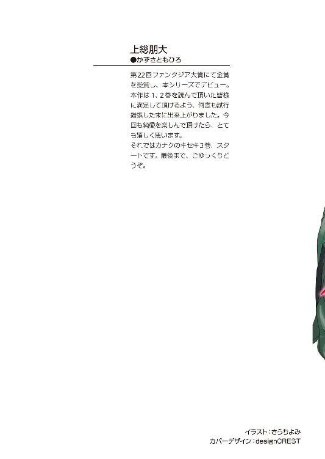
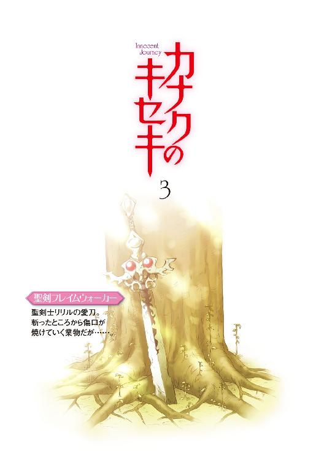
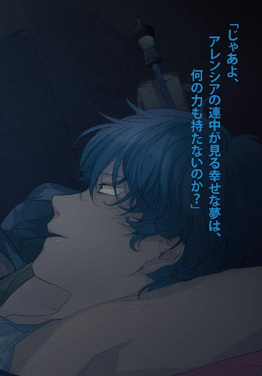
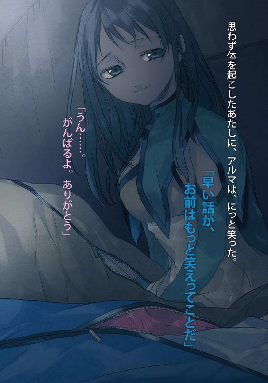
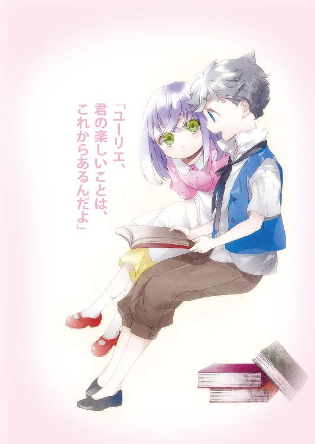

カナクのキセキ３
上総朋大

富士見ファンタジア文庫
本作品の全部または一部を無断で複製、転載、配信、送信したり、ホームページ上に転載することを禁止します。また、本作品の内容を無断で改変、改ざん等を行うことも禁止します。
本作品購入時にご承諾いただいた規約により、有償・無償にかかわらず本作品を第三者に譲渡することはできません。
本作品を示すサムネイルなどのイメージ画像は、再ダウンロード時に予告なく変更される場合があります。
本作品は縦書きでレイアウトされています。
また、ご覧になるリーディングシステムにより、表示の差が認められることがあります。
口絵・本文イラスト さらちよみ
目次
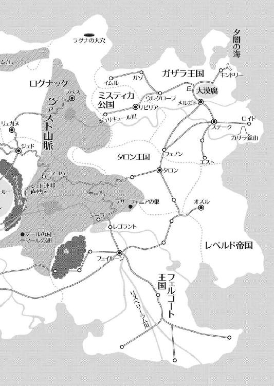
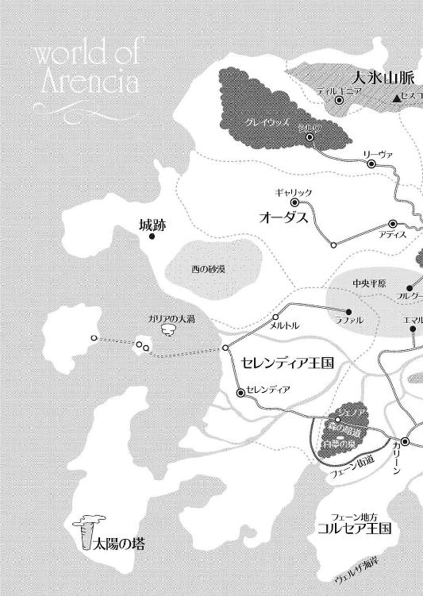
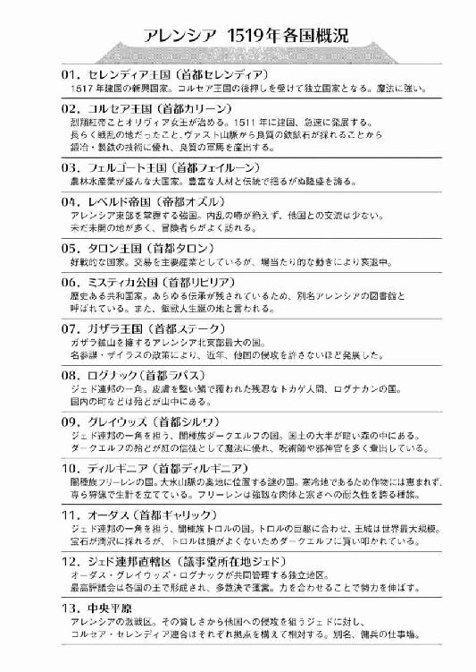
序章・表 聖剣士
一人の女性が立っていた。
背中の大きな橙色の剣が夕焼けを反射し、てらてらと輝く。丈夫なスケールメイルに、体を軽くする魔法が込められたスカートをはためかせ、朱に染まる大都市を眺めていた。
彼女は聖剣士だ。他に連れはなく、ただ一人城を見下ろせる街道に佇んでいた。
淡緑色の短い髪を撫で、ふっと瞼を閉じる。
彼がカリーンまでの供に選んでくれたから、彼女は想いを告げたのに。
返ってきたのは......「無理」の一言だった。
（何で？ あんたはずっと、あたしを好きでいてくれてると思ったのに......）
金色の瞳に寂しさが宿ったその時、彼女の背後に三体の影が現れた。
白い仮面を右肩、右胸、額につけた人形の影は、彼女に向かって走る。
足音で察知した彼女が、素早く聖剣を構えて振り返った。
「夢魔が、ここにも!?」
彼女は突っ込んで来た一体を仮面ごと薙ぎ払うと、夢魔は悲鳴を上げて煙と化す。もう一振りすると、今度は微塵に弾け飛んだ。
（この程度の夢魔なら、大したことはな......）
彼女がそう思ったその時、額に仮面をつけた夢魔が突然、動きを止めた。
腕が膨れ上がり、上半身が異様なまでに盛り上がる。仮面の数が三つに増え、形も人形から獣形へと姿を変えた。
驚愕の表情を浮かべる彼女とその夢魔の戦いは、壮絶なものとなった。
弱点である仮面が多数ある上に、体が大きいだけでなく力もスピードもあがっている。
彼女は何とか頭部以外の仮面を破壊したものの、息は上がり、髪や顔は埃にまみれ、鎧も左わき腹が砕けていた。剣を構える彼女に対し夢魔も無傷ではなく、体中が聖剣による傷で焼け、橙色の煙を噴き上げていた。
だが、夢魔はどんなに体を傷つけても意味がない。仮面を破壊しなければ、どこを損傷しても平然と襲ってくる。彼女は西方で初めて夢魔と戦った時、それに気づかず苦戦を強いられたのだ。
「ぐっ......これで......決めるっ！」
彼女の目が鋭く光ると、素早く夢魔の懐に飛び込み、額の仮面めがけて剣を打ち下ろす。防御しようとした夢魔の左腕を吹き飛ばして仮面に剣が直撃した、次の瞬間だった。
バギン、という高い金属音が辺りに響くと彼女の剣に亀裂が入り、真ん中から切っ先に向かって、斜めに折れた。
「うそ!?」
聖剣の破片が回転しながら舞い上がり、そばにあった木の幹に突き刺さる。彼女は眉間に皺を寄せ、慌てて夢魔と距離を取る。
だが......夢魔は動かなかった。額の仮面にヒビが走り、砕け散る。
そして、その巨軀を夕闇の中に溶かしていった。
辛くも夢魔を退けた彼女は、折れた聖剣を木の根元に突き立てた。聖騎士団入団試験を受けるのに、折れた聖剣では心許なかったのだ。
見上げた空には既にいくつもの星が瞬いていたが、彼女は休む気になれなかった。
体の傷より、大好きな彼からの一言のほうが何倍も彼女を痛めつけた。
（どうして......どうしてあんな酷いことを言えるのよ......）
彼女は膨らんでいく心細さを抑えつつ、西に向かって歩き出した。
数日後、彼女と夢魔が戦ったその場所に、一体の影が佇んでいた。
序章・裏 嚆矢
アレンシア北部、大氷山脈にディルギニアという国がある。
殆どの季節を雪と氷で覆われるこの地を、フードを被った一組の男女が歩いていた。
二人は容赦なく吹きつける雪を面倒臭そうに払いながら坂道を下り、ぽっかりと口をあけた洞窟の中に入った。剣のように尖った岩が天井から伸びている鍾乳石と相俟って、まるで巨大な口の中に入っているようだ。
奥に進むほど、地熱の影響で暖かな風が届いてくる。
辺りの岩肌には薄い緑の苔が生え、血管のような土色の蔦が洞窟じゅうに這う。天井の隙間からわずかばかりの陽光が辺りを照らし、藍色の花を咲かせていた。
やがて目映い日差しに照らされた広場に着いた。
四方は人工的に切り取られた岩壁になっており、真上から見るとちょうど六角形になっている。天井はなく、見上げると雲の流れまでもが目に入ってくる。
ここはかつて闇種族フリーレンの氷公と呼ばれたディルギノの別荘、セスコム荘だ。
女は空洞の中央に築造された古風な館を睨みつけると、後ろにいた男に膝をつく。
男はそれだけで全てを理解したように頷くと、腕をまくって黒いオーラの塊を豪奢な邸宅に向かって投げつけた。
轟音と共に館の屋根が爆ぜる。
男は淡々と、目に入るもの全てをなぎ倒し、吹き飛ばし、抉り取る。丁寧に邸宅を囲った柵が引きちぎられ、木々は燃やされ、鐘楼が宙を舞う。
静閑なガーデンが、たった一人の男に破壊されていく。
その時だった。
「もうやめろ！」
その姿を瞳に捉えた女の顔に、笑みが浮かんだ。
少し癖のある短い銀の髪、怒りに燃える碧色の瞳。
口から少しだけ覗く鋭い牙、体中から溢れるマナ。
その存在感は、圧倒的だった。
「君がディクト？」
男はそう呟き、眉をつり上げる。
「そうだ。僕がいる限り、これ以上の破壊は許さない！」
その名を聞いて、男はゆっくりとフードを外す。
大きな獣の耳が撥ね、黒が混じる銀色の髪がはらりと零れた。
目を見開き、肩を揺らしながらディクトに向かって歩き始める。
その右腕からは、どす黒い煙が噴き上がっていた。
「世界のために、僕のために。眠ってもらうよ、ディクト」
ディクトはこの男から強烈な力を感じて、冷や汗を垂らす。
「そ、そう簡単にはいかないぞ！」
ディクトは服を引き裂いて獣の姿になり、男に襲いかかった。
そして数分後。
男の足下に、仮面を被せられたディクトが横たわっていた。
「次は？」
ディクトを館の中に残っていたソファに寝かせた男が、女に聞いた。
「この銀獣人が最後ですわ。魔王さま」
男は何も言わず身を翻し、出口に向かって歩いていった。
第一章・表 道
空を見上げた。
強い日差しが街道に生える草花に力を与え、爽やかな風の中に焼けた土の匂いが混じる。
あたしはこのフェーン地方の夏が大好きだった。
北にはヴァスト山脈がうっすらとその姿を示し、作物は豊かに実り、生命があらん限りの力を振り絞って躍る。
それはとても美しい光景だ。
ここコルセア王国の北端、ヴァスト山脈に入って少し奥に行くと、マールの名を冠する湖がある。
その奥には小さな村があり、あたしはそこの聖神官カナクさんの下で働いていた。
ゆっくり流れる時間に身を委ね、優しいカナクさんと気さくな村の人たちに囲まれて、自分がダークエルフであることを忘れそうなくらい、幸せな時間を過ごさせて頂いた。
あの魔導師リーゼが現れるまでは。
リーゼは暁の賢者マールを偲びながら暮らしていたカナクさんを唆し、カナクさんはあたしの目の前で黒夢の魔王となって姿を消した。
あたしは村の皆さんの後押しを受け、カナクさんを救うんだと心に決めて村を出た。
でも、本来は破壊と災厄の象徴、紅の魔女を信奉するダークエルフでありながら、暁の信徒たる聖神官の地位を与えて下さったオリヴィア女王さまを裏切りたくはない。
だから、まずは女王さまにお願いに上がらなければ。
烈翔紅帝と謳われ、恐れられたオリヴィア女王さま。
......怖くないっていえば、それは大噓になる。
「んー、うん？」
そういえば、さっきからまるで一人旅をしているみたいに静かだ。
「あ、ああーっ、しまった！」
ふと気がつくと、あたしのバッグがもこもこと動いている。
慌ててバッグを下ろし、中を開けてみると──
「あちゃー......」
可愛い女の子の小人が、中で必死に干し魚をかじっていた。その隣にはもう一人、男の子の小人が、なぜか正座して涙目で震えている。何があったの!?
「こらユーちゃん！ それはまだ食べちゃだめー！」
きらーん、と目を輝かせたユーちゃんは、口に干し魚のかけらをくわえたままカナちゃんの襟首をがしりと摑むと、バッグから飛び出して逃げていった。
「食べてばっかりいたら、太るんだからね！」
あたしはぷんすか怒りながらも、仲のいい二人に微笑ましさを感じていた。
あの小人たち......カナちゃんとユーちゃんは、カナクさんが考案した「草人の魔法」で作られた存在だ。
カナちゃんはカナクさんが、そしてユーちゃんは千年前に飛ばされたユーリエさん、即ち紅の魔女であり暁の賢者でもあるマールが、カナクさんへの想いを託して作ったものだ。
結ばれなかった二人の、愛の形。
カナクさんはあの子たちも、お友だちも、お世話になった人たちも、そしてあたしも、全てを捨てて魔王になってしまった。
千年前に行けると唆されて。
ユーリエさんを救えると言われて。
でも、そんなの噓だと思う。
カナクさんはリーゼという得体の知れない魔導師に騙されているだけなんだ。
このアレンシアのどこかに、あの砂の体を持つリーゼを倒し、カナクさんの目を開かせる方法があるに違いない。
「むー......よし！ カナちゃん、ユーちゃん、行くよー！」
気を入れ直してそう叫ぶと、二人は跳んであたしの頭の上に乗っかった。
ここから王都カリーンまでは歩くと三日か、それ以上かかる。辺りは茜色の輝きに彩られ、虫たちは歌い出し、夜の到来を告げる夕鳴鳥の声も聞こえてくる。左手の山あいから紅の月が顔を覗かせ、遥か上空を目指してひつじ雲をゆっくりと搔き分けて行く。
もう間もなく日が落ちるのだ。その前に、寝床を探さなければならない。
「んー、いい場所はないかなあ......」
辺りを見回していると、右肩に腰掛けていたカナちゃんが道の右前下方の茂みにある、大きな木を指した。
「ぴぴ？」
「うん、よさそうだね」
寝床が決まれば、次は食事だ。
あたしは草と枝を集めて火を熾し、鍋に水を入れて火にかけた。
「ぴーぴーぴー！」
「はいはいはい、わかってるわよー」
二人は椀の中に入り、あたしが干し魚や根菜を削って鍋に入れるさまを覗いていた。
はー、いいなー、仲が良くて。
あたしは鍋を搔き交ぜながら、空を見上げた。
辺りは既に日が落ち、夜の帳が降りている。
ここは山の斜面なので少し風が強く、冷たい空気が草木を撫でる。
ぱち、ぱちと焚き火が小気味よい音を立てて唯一の明かりとなり、あたしや小さな草人たちの影を揺らしていた。
「カナクさん......」
焚き火で輝く首飾りを、優しく掌に包んだ。これはカナクさんから託されたもので、聖神官の証しでもある。
あたしは、カナクさんが大好きだ。カナクさんがユーリエさんしか見ていないのはわかっている。ただ、そばに居させてもらえれば良かったのに。
あたしはカナちゃんとユーちゃんにスープを与えると、暫しうずくまって唇を震わせた。
食事を済ませると、歩き詰めでぱんぱんに張った足に「小治癒の魔法」をかけて痛みを和らげ、早々に寝ることにした。
大木の前に立ち、腰に差したワンドを抜いて魔法陣を描き、叫ぶ。
「大樹の魔法！」
木の幹が一瞬輝くと、ぼわんと広がって空洞を作り出した。
「今日はここで寝ようね。雨も凌げそうだし、ちょっと贅沢かな？」
「「ぴぴー」」
カナちゃんとユーちゃんが揃って首を振る。ちっちゃいくせに、贅沢者。
「さてと、二人ともこの中に入って」
そう促すと、二人はきゃっきゃとはしゃぎながら洞の中に入った。
「いくよー」
再びワンドを振り、使い慣れた魔法陣を描く。
「幻視の魔法！」
すると木に空けた洞が隠れ、一見するとただの木にしか見えなくなった。
これで、簡単には見破られないだろう。
あたしは木の洞に入り、中を確認した。
「うん、寝るには十分だね」
ちょっと狭いけど、座れば問題ない。
「じゃ、おやすみー」
「「ぴぴーっ」」
カナちゃんとユーちゃんのほっぺにキスをし、大樹に抱かれて眠りについた。
そして──深夜。
あたしは妙な物音を聞いて目が覚めた。
ワンドを手繰り寄せ、そっと外を覗く。月が雲に隠れていたため辺りは真っ暗だったけれど、それは逆に好都合だった。
何故なら「暗視」が使えるからだ。
これは暗闇を青、生物などの熱源を赤い光として認識できるエルフ特有の能力で、便利だけど、月明かり程の小さな光でも効果を失ってしまうのが難点だ。
あたしはそれを使って辺りを調べる。すると、遠く道の先に小さな赤い光が三つあることに気がついた。
あたしはそれがどうも気になり、そっと洞から抜け出して魔法陣を描いた。この距離ならマナの輝きを感知されることもないはずだ。
「隼の眼光！」
魔法陣がするすると解け、あたしの目のまわりを紐状になって包み込む。これは、遠くのものを近くに見ることが出来る魔法だ。
眉間に皺を寄せ、先の熱源に向かって視線を飛ばす。目に飛び込んできたのは、奇妙な戦闘だった。
赤い熱源の正体はその大きさ、形から、邪悪な小妖精ゴブリンだろう。それが三体、激しく動き回りながら黒い影と戦っていた。
当然、あたしの興味はゴブリンではなく、その相手に向けられる。
（あれだけ動いていながら、熱源を感じないのはどういうことだろ？）
腰を屈め、草に身を隠しながら彼らに近づく。
やがて一つ、また一つと熱源が動かなくなった。
（二匹やられた？）
「隼の眼光」を解き、こっそりと歩み寄ったその時、二つの月を覆っていた雲が風に流され、その奇妙な戦いを照らし出した。
（............!?）
やはり戦っていたのはゴブリンだった。でも、その相手は見たことのないものだった。
残り一体のゴブリンに対して、二体の妙なものが戦っている。背はゴブリンのちょうど二倍くらいだから、一般的な人間とほぼ同じだ。顔に目や口はなく、人間の影がそのまま直立したような姿で、一体は右肩、一体は左胸に白い仮面をつけていた。
二体の影に対し、残ったゴブリンは劣勢だった。棍棒を必死に振り回し、影を殴りつけるゴブリンだったけど、それが影に効いている様子はない。
ゴブリンが勝ち目が薄いことを悟り、背を向けたその時だった。
一体の影が凄まじいスピードでゴブリンの首根っこを左手で捕らえ、右手であの仮面を肩から外し、ゴブリンに押しつけた。
刹那、影が炎のようになって仮面に吸い込まれて姿を消し、ゴブリンは膝を折ってその場に倒れた。
（な、何がどうなって──!?）
ぞわっと、背中に冷たいものが走る。
最後の一体、左胸に仮面をつけた影が、こちらを向いていた。
（まずい、見つかってる！）
あたしは思い切って立ち上がり、魔法陣を描き始めた。影はやはりあたしに気づいていたらしく、足を振り上げてこちらに迫る。
あたしはカナクさんの下で修行したコルセアの聖神官だ。カナクさんはいつも、見落としそうな細かい部分にこそ真実があると教えてくれた。
（カナクさん！）
その時あたしが着目したのは、ゴブリンが使っていた棍棒だった。あれはゴブリンなどの下級の魔物がよく使う、ジェド杉を削って乾燥させたものだ。堅くて軽くて、武器には丁度いいけれど、魔法の武器ではない。
魔物の中には魔法の武器でしか攻撃を受け付けないものがある。上級ランクの魔物の殆どがそれにあたるけど、この影もおそらくその類ではないか？
なら、魔法は効く......はず！
「尖水貫の魔法！」
完成した魔法陣から無数の矢が放たれ、影に襲いかかる。素早い動きで矢を避ける影だったけど、何本かはその体を捕らえた。
でも......効いている様子はなかった。動揺するあたしに向かって、影が跳躍する！
「はわああああっ！」
あたしは身の危険を感じ、咄嗟にその場を飛び退く。
ズドォン、という音と共に、あたしがいた場所に影の足が突き刺さり、草と土が舞い上がる。その衝撃で、あたしは背後にあった岩に背中を打ちつけてしまった。
「あぐっ！」
手から力が抜けたけど、何とかワンドを握りしめ、岩に背を預けて立ち止まった。
な、何て破壊力......あんなの、一発でももらったらおしまいだ。
影はゆっくりとこちらに顔を向ける。あたしは慌てて体勢を立て直し、ワンドを両手に構えて対峙した。
どうしよう。この距離じゃまともな魔法陣も描けないし......。
まさか、こんな山道でこれほどの強敵に出会うとは思わなかった。本来、聖神官は後衛で戦士らを補佐する役目なのだから、近接戦闘でこの黒いのに勝てるとは思えない。
（考えろ、考えるんだ......）
焦るあたしに対し、影は再び足に力を入れる。また飛びかかってくる気だ。
「そもそも物理攻撃も魔法も効かないって、反則じゃ──」
ボン、という音がすると、真正面から黒い影が突っ込んできた！
「うひゃあああっ！」
頭を抱えて横に跳ぶと、影は岩に向かって勢いよく激突した。
岩に亀裂が入り、破片があたしの額と肩を抉る。
「あうっ！」
あたしは転がりながらも何とか距離を取ろうと、坂の上の山道に向かって走った。息を荒げ、額から流れる血が左目に入って痛む。
ワンドをしっかり握って振り返ると、影は岩に頭を突っ込んでいた。
（あ、頭は悪そう......）
でも物理攻撃が効かない時点で、あの岩によるダメージも無いに等しいはず。
案の定、影の腕が不自然に盛り上がると、岩に手を当てて埋まった頭を引き抜いた。
この距離なら魔法陣を描くことは出来そうだけど、あたしは魔術師ではなくて聖神官なので、その攻撃系魔法のレパートリーは少ない。
影はその水の矢を体中に突き刺したまま振り返る。
（ううう、どうしよう）
その時、影は意外な行動を取った。
ぐらっと体が泳ぎ、片膝をついたのだ。
効いている。 何がなのかはわからないけど、倒せない敵じゃないんだ。
（まだ、何か見落としている!?）
あたしはカナクさんの言葉を思い出し、体を揺らす影をよく観察してみる。すると、左胸につけた仮面が、岩に激突した衝撃で欠けていることに気づいた。
「ガアアアアアアアアア!!」
影は雄叫びを上げて走ってきた。
距離を考えて描ける魔法はあと一つ。可能性があるのは、これしかない。
ワンドに込めたマナで、丁寧に宙を削る。大事なのは集中力だ。敵が迫っていようが、お腹がすいていようが、失恋をしようが、魔法陣を描いている時はそれらを切り離す。
それが出来て、魔法使いだ！
あたしの頭を狙って影が腕を振り下ろそうとしたその時、全身の力を込めて叫んだ！
「混合魔法・爆水撃！」
魔法陣が輝き、影に刺さった水の矢が高熱の塊で覆われる。
熱を加えていくと水は熱湯になり、やがて蒸気となる。
では高熱を直接、水に加えるとどうなるか？
「グウウウウアアアア......！」
影は足を止め、よろめきながら呻き出す。
そして瞬時に蒸気と化した水が膨張し、爆発を起こした！
「はぐっ！」
距離が近すぎたせいであたしまで吹き飛ばされ、草むらに突っ込んでしまった。
目を瞬かせ、頭を振って影を視界に捉える。影はシュウシュウと音を立て、消えゆく蠟燭の炎のように揺らめいて霧散していた。
やがて後に残された仮面が粉々になって弾け飛び、辺りに静寂が戻ってきた。
（やっぱり、仮面が弱点だったんだ）
あたしは傷ついた腕をさすりながら、ぴくりとも動かないゴブリンたちの様子を窺う。被せられた仮面のせいなのか、突っついても腕を捻っても、ゴブリンは起きなかった。
あたしは少しほっとして、彼らを街道から雨の当たらない木の下へと移した。邪悪な存在だとしても、このまま街道に放置するのは忍びない。
とはいえ、仮面を破壊してみようとは思わなかった。もし目が覚めてしまったら、今のあたしなら簡単に彼らの餌食だ。
それにしても、さっきの影......マールの村を襲ったりしないかな。
心配は心配だけど、今更村に引き返すわけにはいかない。
ここは村長のボーラさんや、村の人たちを信じよう。
「あたしもがんばらなくちゃ、いけないよね」
ワンドを握りしめて、空に顔を出した蒼の月と紅の月を見上げた。
第一章・裏 花束
窓から入ってくる風が本を読む私の髪を擽るように通り抜け、純白のレースのカーテンがぱたぱたと窓を打つ。柔らかな陽光がグラスに反射し、私の部屋の壁に水面のような輝きを映している。
私は読み終えた本を閉じ、立ち上がった。
（今日は調子が悪いわ......これだけしか読めなかった）
溜め息と共に十二冊の本を鞄に入れ、残りの二十冊はそのままにして部屋を出た。
歩く度に、私の靴が鳴らすコツコツという硬い足音が通路に響く。
床はいつも磨かれたように輝き、塵一つ落ちていない。正面には八本の巨大な柱が高い天井に向かって伸びていて、その先はアーチになっていた。
（平和で退屈なこの国で、こんな大きなお城が必要なのかしら？）
常々感じていた疑問を胸にアーチを抜けると、立派な白い髭を蓄えた男性と出くわした。
私の背も高いほうだけど、この方は私よりもさらに二回りほど大きい。眉が太く、茨の茂みに似た灰白い髪が威厳を湛えている。灰色のローブの上から、王者の証しである深紅のマントを身につけている。
その後ろには若い従者が二名、立ち止まったこのお方に向かって頭を垂れている。
彼らも一様に白き髪と眉を持つ、典型的なイストリアル人だった。
「おお、出かけるのか、姫よ」
太いけど、優しげな声がお腹に響く。
私は本が入った鞄を床に置き、膝をついた。
「はい、イストリアル王さま。また図書館へ行こうと思いまして」
このお方こそ、この白夢の世界「イストリアル・セントラル」を統べる王だ。
王は私がそう言うと、太い眉毛をハの字にした。
「王城におる時くらいお父さまと呼んではくれぬか」
「従者がおりますよ」
くすくす笑うと、王は頰を染めて頭を搔いた。
「何でだかわからぬが、お前にはいつでもそう呼ばれたいのだ」
それが父親の情なのですよ、と口にしようとして、やめた。
イストリアル人は基本的に永劫に個であり、異性同士で感情を交わすことはない。
王が仰るには、それが完全なる平和と秩序、完璧なる調和を生み出すのだそうだ。
「最近、美しさに一段と磨きがかかったのう。母そっくりになってきおった」
「イストリアル王、そのお話はご勘弁して下さりませ」
私が厳しくそう言うと、王は悲しそうに目を伏せた。
「そうだな、悪かった。ワシはこれからいつもの巡回に行ってくる」
王は私の頭を優しく撫でると、従者を伴って白翼馬が待つ廏舎へと向かった。
立ち上がって王のお姿を見送っていると、風が私の金の髪をはらはらと吹き上げる。
金の髪、そして青い瞳......私が異端である証し。
一般的なイストリアル人は白い髪に桃色の瞳なのに対し、私は王と精霊界フェイエリアの住人フェイエルフとの間に生まれた存在なので、金の髪と蒼の瞳を持つ。
私は少しだけ風に吹かれ、鞄を持って図書館へ向かった。
その施設は町に向かう道の途中、町と城を隔てる、あまり意味を感じない城壁の内側にある。本は知識であり、それは宝に匹敵するものだと王に進言し、町にあった図書館を城の中に移設してもらった。
これで私は本をいっぱい借りることが出来るし、そ、その、いつでもそこにいる彼に会えるのだ。
私は胸を躍らせて幅のある階段を上り、図書館の扉を開いた。
この新生王立図書館は、私の希望もあってやたらと大きい。二階建てで、奥に長い造りの建物は、実際殆どの人が利用しない倉庫のようになっていた。
ここで私が調べた限りでは、イストリアル人は十七歳頃から少しずつ、あらゆる欲が消えていくらしい。
支配欲、知識欲、食欲、睡眠欲、物欲、せい......えっと、こほん。
そうして、争いも諍いも起こさない立派な大人が出来上がるのだ。
無論、何事にも例外は存在する。
それがフェイエルフに恋をしたイストリアル王と、この私だ。
入ってすぐにある横長のカウンターに本を置き、辺りを見渡す。いつもならすぐ彼が顔を出すのに、今日はいつまで待っても来る気配はなかった。
「ポルト......いないの？」
冷たい静寂が、その答えだった。
肩を落としてその場を去ろうとしたその時、私の耳が微かな物音を感知する。
「ひ、姫さまー」
遠くから、弱った声が聞こえた。
それは、図書館の奥からだった。私がその声がした方に向かって歩くと、目の前に長い梯子が見えた。
視線をそこから上に持って行くと......。
「まあ、ポルト！」
何と、司書のポルトが梯子の上で大量の本を抱えたまま、硬直していた。
「ひ、姫さま、たすけてくださいー」
どうやら両手に本を抱えすぎて、動けなくなってしまったらしい。
「えっと、ちょっと待ってね」
私はスカートをたくし上げると、梯子に手を掛けて登り始めた。
「ばかねえポルト、本を下に落としてしまえばいいじゃない」
ポルトのところまで辿り着くと、私は彼が持つ本を片手で取り、放り投げようとした。
「だ、ダメですよ」
彼にしては珍しく、声を荒げた。
「ここにある本は、一冊でも姫さまの宝です。傷つけたりしたくない」
だったらなんでそんな量の本を持っちゃうの。
私はポルトの顔とその状況が面白くて、思わず笑ってしまった。
「ポルト、私は本よりもあなたが怪我するほうが悲しいわ。傷は白夢で治せても、痛みの記憶は残るもの」
「姫さま......」
刹那、梯子がバランスを崩してがたんとずれた。
「あっ！」
私の手がその衝撃で梯子から外れ、全身が浮遊感に包まれる。
「姫さまっ！」
ガツン、という衝撃が走る。
ばらばらと本が降ってきて、最後に梯子が倒れる音が館内に響いた。
「う......だ、大丈夫？」
少し頭がくらくらするけど、痛みはなかった。気がつくと、私の下に本に埋もれたポルトの体があった。
「た、大変！ ポルト、大丈夫？」
私は本を搔き分けてポルトの顔を掘り出すと、夢中で彼の頰や額を触り、怪我がないことを確認した。
「大丈夫。ぼ、僕は頑丈ですから」
彼の元気な顔を見て、はたと気づく。
私の胸に、彼の手があった。
「やっ......」
顔が熱くなる。
ポルトに、触られちゃった......彼は、どんな反応をするんだろう。
「ああっ、ご、ごめんなさいっ！」
ポルトは赤面しながら後ずさった。
これは、どういうことだろう？
胸に触れたことで照れているのなら......ひょっとして!?
「ねえポルト、私のこと好き？」
焦燥からか、とんでもないことを口にしていた。
恥ずかしくなって俯く私に、ポルトは明るい声をくれた。
「うん、好きですよ。僕だけじゃなく、みんな姫さまが大好きです！」
......彼の真意は、計りかねた。
第二章・表 道
影との戦闘から五日後の朝、あたしはコルセア王都・カリーンの城門前に着いた。
幸いにもあれから大した戦闘もなく、すれ違ったのはマールの村へ物資を運ぶ馬車のみという、実に長閑な旅だった。
今いる位置はカリーンの北門で、頑丈な城壁が王都をぐるりと囲い、等間隔に建てられた監視塔の上には常に警備兵が目を光らせている。
この地方が女王さまに治められる前は、ここでも激しい戦闘が繰り広げられたらしいけど、それでもこの城塞は一度として陥落したことはなかったという。
ここを王都として定めたコルセア王国は今や日の出の勢いの国であり、各地から富と名声を求めて人が集まってくる。そのため城門前は通行税を払うための列が出来ていた。
おかしいなあ、カリーンの北門は中央平原とマールの湖に向かう道しかないから、こんなに混むはずはないんだけど。
「うへぇ、これじゃ中に入る頃にはお昼過ぎになっちゃうよ」
そう呟くと、背中に垂らしたフードの中がもこもこと動き、ぴーぴーと抗議の声が聞こえた。カナちゃんとユーちゃんだ。
いや、正確に言うとユーちゃんだ。お昼抜きだと思ったかな？
「だ、大丈夫だよ。干し果物もまだあるし、あと一日分くらいの食べ物はあるから」
こっそり背中に向かって言うと、ぴたりと騒ぎが止んだ。
......わかりやすい。元々、草人は魔法で生まれた存在だから食事なんかいらないはずなのに、何でユーちゃんはこうも食に敏感なんだろう？
「それにしても、やっぱりカリーンは大きいね」
高さにして30メートルはあろうかという城壁の向こう側には、その何倍もの高さを誇るカリーンのシンボル〝尖塔〟が顔を覗かせ、その横には王城が見える。ここから王城までかなりの距離があるのにこんなに大きく見えるのだから凄い。
あたしは石碑巡りでここを訪れたことはあるけど、それは二回とも〝カリーン・アンダーグラウンド〟を通っての話だったから、堂々とこの城門を潜るのは今が初めてなのだ。
闇種族は、陽種族の町の地下に独自の集落を持っている。そこを拠点として、闇種族たちはアレンシアを旅してきた。
でも今、あたしは女王さまに認められた聖神官なのだから、アンダーグラウンドから入るのはおかしいと思う。いくら前に並ぶ商人風のおじさんが奇異の目で見てこようが、後ろにいる兵士さんが剣から手を離さなかろうが、あたしはあたし、堂々としているべきだ。
（でも、ちょっとこわい......）
首飾りをきゅっと握りしめ、カナクさんに想いを馳せる。
カナクさんは本当にまっすぐで、優しくて、素敵な人だ。そそ、そんな人と夜を共に出来たら......なんて今考えると、とんでもないことをしたものだと猛省する。
でも、あたしはカナクさんになら何をされてもいいと思えるほど好きなのは変わらない。
カナクさんをリーゼの呪縛から解き放ち、マールの村に帰ってきてもらいたいんだ。
その第一歩を、裏口から始めたくはない。
だからあたしは、胸を張ってここを通ろう。そう思って顔を上げると、あたしが並んでいる列の横を馬に乗った一組の男女が通り抜け、城門に向かっていくのが目に入った。
男性のほうは白銀のプレートメイルに身を包み、ブロードソードを腰から下げている。口許をショールで隠していたため顔はわからなかったけど、赤い髪が印象的な人だった。
もう一人の女性の方は淡緑色の短い髪に、金色の瞳を持ち、鱗を集めて作られたスケールメイルを着ていて、巨大な橙色の剣を馬にくくりつけていた。
この人もショールで口許を覆っていて、顔ははっきりとわからなかったけど、すれ違いざまに鋭い視線をなげてきた。
だ、ダークエルフが嫌いなのかな。怖いなあ。
その冒険者風の二人は城門前で馬を下り、鞄から何かを取り出して衛兵に見せると、そのまま城門の中へと消えていった。
むー、ずるい。こっちはどう見積もってもあと二、三時間はかかりそうなのに。
どんなに口をとがらせても、列が短くなるわけじゃない。あたしは溜め息をついて、長い列を眺めた。
そして、数時間後。
列はゆっくりと短くなり、とうとうあたしの番が近くなってきた。
通行税、払えるかな。お金、足りるかな？
あたしの所持金はなけなしの２３２５エルだ。このエルという通貨はコルセア、セレンディア、フェルゴートの共通貨幣で、北東のガザラ、タロン、ミスティカではプラチナ、ゴールド、シルバー、カッパーという古代の通貨がそのまま使われている。
10カッパーで１シルバー、10シルバーで１ゴールド、10ゴールドで１プラチナとなる。ちなみに１プラチナがこちらでは１０００エルに相当する。
一人分の通行税は高くても１００エルくらいだと思うから、残りのお金でまずはお昼を食べて宿をとって、ぐっすり眠って、明日、お城に向かおう。
そんなことを考えていると、やっとあたしの番になってくれた。
「......よーし、次は......!?」
前にいた商人風のおじさんが城門を抜けていくと、衛兵はあたしの顔を見るなり、緊張した面持ちになった。
「ダークエルフか」
衛兵が片手で合図を送ると、あたしはあっというまに五人の衛兵に囲まれた。
「な、何ですか？」
あたしはバッグに手を入れ、密かにワンドを手にした。
「私は衛兵隊長のマービンという者だ。ちょっと来てもらおう。断るなら、ここを通すわけにはいかない」
ここまで待たされて、その言葉を断る気にはなれない。あたしはマービンさんに連れられて、詰め所のような小屋に入らされた。
簡素な小屋で、壁には槍や盾が掛かっている。あたしは中央にある椅子に座るよう命じられ、素直に腰掛けると、あたしの両脇に一人ずつ衛兵が立った。
「うう......あのー、なんですか？」
マービンさんは正面に座ると、背後の棚から紙を一枚取り、羽根ペンと一緒に差し出した。
「これは決まりなんでな、この書面にサインをしてもらいたい」
その紙には「入城誓約書」とあり、町で暴れてはいけない、一日三回歯を磨かなくてはいけない、みだりに魔法を使ってはいけない、人間などの種族を食べてはいけないなどの細かいことと、それに対する罰金がびっしり書いてあった。
闇種族が城門から入ると、こんなことになるんだ。
あたしはその書面に目を走らせ、最後の一文を見たその時、目が飛び出るかと思った！
「なお、闇種族の通行税は２０００エルとする......って、高すぎませんか!?」
マービンさんは首を振って、あたしの抗議を却下する。
２０００エル......マールの村だったら、魚を何匹売ればその額にたどり着けるか。大きさにもよるけど１匹で２エルとして、５匹で10エル。50匹で１００エル......。
１０００匹!?
魚、いなくなっちゃうよ？
「すまんが、女王さまのご意向で闇種族も城門を通れるようにしたはいいが、連中は気性が荒くてすぐもめごとを起こす。酒場のテーブル、椅子、宿屋の床、ダメにされた商品......彼らが壊したものは枚挙にいとまがない」
「でもっ、そ、それはワザとじゃないのでは──」
「ワザとかそうでないかは関係ない。問題はその修繕費をどこから出すかなのだ。気持ちで壊れたものは直らん。牢獄に送ったところで、飯もタダじゃない」
うぎゅっ、正論すぎる。
「というわけで書面のサインと一人分２０００エル、払ってもらおうか」
あたしは言われたとおり羽根ペンでサインをし、本当に渋々、お財布をバッグから取り出してテーブルの上に１０００エル紙幣を二枚、置いた。
ああ......一生懸命働いてカナクさんや村の人たちから頂戴したお金が......くすん。
「ありがとう。闇種族が皆、君のように素直だと、我々の仕事も楽なんだがな」
そう言われても、慰めにはならない。
「いいんです。あたし、これでも聖神官ですし」
首飾りをいじりながらぼそっとそう言う。
「何!? 聖神官だと？」
マービンさんは驚いた顔で書面を手にし、あたしを見た。
「......そうか、君がマールの村の聖神官、ネウか!?」
「え、ええ、そうですけど」
衛兵はあたしの手を無理矢理握り、握手してきた。
「そうかそうか、話は聞いているぞ。暁の信徒らの間で君はちょっとした有名人だ」
有名人？ どんな意味でだろう？
「コルセアで、いやおそらくアレンシアで唯一であろう闇種族の聖神官だからな。高額な通行税を取っておいて何だが、がんばれよ」
「は、はい！ ありがとうございます！」
あたしは何だか無性に嬉しくなった。
こんな風に認められるなんて、思わなかったから。
「まあそれはそれとして、君、フードの中に小動物を二匹、隠しているな？」
うえっ!?
かか、隠していたわけじゃないけど、顔を出させるわけにもいかないと思っただけで。
「通行税は小動物にもかかるんだ。一匹につき50エル」
ええええっ!?
「その小動物を改める必要はないが、払って貰えますな、ネウ聖神官どの？」
涙でお財布が見えなかった。
こうしてあたしは、ようやく小屋から出してもらい、カリーンの町へ足を踏み入れた。
ああ、それにしても２１００エルの出費は痛すぎる。宿屋に行っても、部屋をとるには最低でも３００エルはないといけない。
それに対して所持金......２２５エル。
まさか国の聖神官がその王都で野宿するわけにもいかないし、とはいえ聖神殿には頼りたくない。マールの村を任された聖神官が無断でここまで来た上に、お金がないからといって王都の聖神殿に頼るのは筋違いだ。
（うう、やっぱり意地を張らずにアンダーグラウンドから潜り込めばよかったかな）
などと考えて、すぐに頭を振った。あたしはもう旅人や冒険者、石碑巡りじゃない。れっきとした、コルセア・マール聖神殿に仕える暁の信徒、聖神官なのだ。
（お金は減ったけど、これでいいんだ）
自分にそう言い聞かせ、落ち込みがちな肩をしゃんと伸ばす。
それに、かつてマールは仰った。
『楽な道と苦難の道があったなら、迷わず苦難を選べ』
魔王になってしまったカナクさんに会う旅が、そんなに楽なわけがないんだ。あたしはマールの言葉を胸に抱き、背筋を伸ばして前を向いた、その時だった。
「なあ、君」
不意に声をかけられて、びくっと体を震わせた。
さっき城門で追い抜かれた二人組が馬を引いてこちらに向かってきた。
「な、何のご用ですか？ お金ならありませんが」
自分で言っておいて何だけど、本当にないのが悲しい。
二人は互いの顔を見合わせ、大きな声で笑った。
「いや、そんなつもりじゃない」
男の人のほうがショールをずらし、顔を露わにする。
それにならって、女性の方も顔を出した。
「もしかしてマールの村でカナクと一緒にいた、ネウじゃないかと思ってな」
あたしは飛び上がらんばかりに驚いた。
そうだ、あたしはこの人たちに見覚えがある。
「レニウスさんと、リリルさんじゃないですか！」
それはカナクさんの同級生であり、親友のお二人だった。
レニウスさんたちは馬を引きながら、あたしと一緒に大通りを歩く。
あたしはちらっとレニウスさんに目を向けては、慌てて視線を外し、なるべく一歩後ろを歩くようにしていた。
レニウスさんの名は辺境であるマールの村にすら届いてくるほどだった。セレンディアがまだ国ではなかった頃、コルセア北西部にある中央平原ではジェド連邦の侵略を防ぐために戦闘が繰り返されていた。
そこへ現れたのがレニウスさんだ。彼は中央平原南西部をジェドから切り取ると、瞬く間に勢力を拡大し、コルセアと共に強固な防衛線を構築した。
もしレニウスさんがいなければ、中央平原はジェドに制圧され、ジェド侵攻の拠点にされてしまうところだった。
その後、セレンディアはコルセアの後押しを受けて王国となったけれど、中央平原の一件が大きく寄与したことは想像に難くない。
セレンディアの英雄。そう呼ばれるレニウスさんが、ダークエルフであり、一介の聖神官であるあたしと肩を並べていることだけで、何だか畏れ多く感じてしまう。
それにマールの村でレニウスさんが口にした言葉が、未だにあたしの胸に深く突き刺さっている。
うす汚いダークエルフ。
あたしはこの人にそう言われた。あの時はレニウスさんもユーリエさんの悲劇を知って狼狽してたし、謝ってくれたから根に持ちたくはない。
とはいえ、手放しで再会を喜べるわけでもない。
......複雑なのだ。
「それにしても、まさかここでネウちゃんと会うとは思わなかったよー」
隣を歩くリリルさんが、嬉しそうに微笑んでくれた。
リリルさんは生粋の冒険者という雰囲気だ。豪快な性格で、土と風の匂いを感じる。
「そういえば何故、お二人はカリーンの北門から来られたんですか？」
あたしがそう聞くと、リリルさんは肩を竦めた。
「北門が一番すいてるからだよ。他の城門に行ったら、かなり待たされるからね」
なるほど。
皆、最寄りの門ではなく北門から入ろうとしたから、あんなに混んでたんだ。
「それよりネウこそ、何でここに？ マールの村の修道士だろ？」
そう聞いてきたのは、前を歩くレニウスさんだった。
「あ、あの、あたし、聖神官になったんです」
あう、やっぱりレニウスさんに話しかけるのは緊張するー。
「何？ そうなのか!?」
レニウスさんが振り返り、目を丸くする。
「凄いじゃん、ネウちゃん！ あたしも嬉しいよ！」
リリルさんはあたしの肩をばしばし叩いて喜んでくれた。
「じゃあ、カナクはどうしたんだ？ あんな小さな村に、聖神官は二人もいらないだろ？」
ぴたりとあたしの足が止まる。
そうだ、このお二人はまだ知らないんだ。
「カナクは相変わらずマールの村で......え？」
あたしはリリルさんに抱き着いて、泣いた。
「ななな、何？ どうして？ あたしなんか悪いこと言った!?」
リリルさんが激しく動揺する。無理もないことだけど、あたしはカナクさんがいなくなってしまった事実を目の前に突きつけられ、辛くて、悲しくて......涙が止まらなかった。
「ここじゃ何だから、とりあえずセレンディア大使館に向かおう。そこで何があったのか、詳しく話してくれるか？」
レニウスさんの温かい言葉に、あたしはただ頷くだけだった。
第二章・裏 花束
翌日、私は朝早く城を出て、町の学校にやってきた。
図書館よりも遥かに小さい木造の建物は、まるで木の中にいるような香しい匂いがこもっている。
私はここで時々、臨時講師として子供たちの授業を受け持っていた。
「はーい、皆さん、静かに」
手をぱんぱんと叩くと、白ウサギのように可愛い五人の子供たちが席に着く。
「本日は世界史です。教科書43ページを開いてください」
パラパラと、紙のこすれる音が教室に響く。
「では、その５行目から読み上げましょう。じゃあ最初は......」
私は前列一番左を指した。
「アニー、あなたからよ」
「はい」
アニーが椅子を引いて立ち上がると、大きな声で教科書を読み上げた。
「ここ夢幻界イストリアルは、白夢の世界セントラルと、黒夢の世界カオスに分かれています。それらは現世界アレンシア人たちの夢の力で成り立っていて、幸せな夢はセントラルへ、そうでない夢はカオスへ送られます」
「はい、そこまで。よく読めました」
ぱん、と手を叩き、着席を促す。
「ではその隣、イレイザ。続きを」
「はい」
イレイザはアニーと同じように、か細い声をがんばって張り上げる。
「イストリアル・カオスは混沌の世界であり、時間も空間もめちゃくちゃになっている世界です。セントラルの者はカオスの中では生きられないので、絶対に足を踏み入れてはいけません」
「はい、そこまで。次はウーカス」
イレイザが着席し、少しぼーっとしているウーカスが立つ。
「セントラルの中心には、浄化の塔というものがあります。その底には、カオスの黒夢を、白夢に変えることが出来るキセキの泉『乱浄泉』があります。誰が作ったのかは未だ解明されていませんが、私たちが平和に暮らせるのはこの塔と泉があるおかげなのです」
「よろしい。今日はつっかえなかったわね。ちょっと残念」
くすくすと笑いがこぼれる。ウーカスは照れ笑いしながら席に着いた。
「じゃあ次は後列、エルク」
「はーい」
クラス一の元気者、エルクが教科書を手にした。
「セントラルは円形の皿のような大地の上にあり、カオスとは高くて分厚い壁で仕切られています......姫先生、こんなのみんな知ってるからつまんないよ！」
クラス中が笑いに包まれる。彼はイストリアル人の中では珍しく挑戦的な生徒だった。
こういう子、好きだけど。
「ではエルクに質問。夢幻界イストリアルと、現世界アレンシア。これ以外にもう一つ、世界があります。それはなに？」
「簡単だよ。精霊界フェイエリアだ！」
「では、フェイエリアに住む者たちの特徴は？」
「うっ......」
少し、意地悪な質問だったかもしれない。
エルクは口をつぐみ、困惑していた。
すると、その隣のオルエンが口を開く。
「姫先生、まだ習ってないことを質問するのはずるいです」
そうだそうだ、と生徒たちが共振する。
「お言葉を返すようだけど、私は何でも知ってるわ。一人で図書館に通って、いっぱい勉強したんだから」
今度はオルエンが黙る。教室も静まりかえってしまった。
イストリアル人は総じて欲というものがない。子供のうちはまだエルクのような子もいるけれど、あと十年もすれば大人同様、学ぶ意欲もなくなるだろう。
それを危惧した私が、この学校の設立を王に嘆願したのだ。
「横道にそれたけど、フェイエリアにはフェイエルフという、我々とは違う人たちが住んでいるわ。美しい金の髪、ブルーの瞳、鋭く尖った耳を持っているわ」
教室が、ざわっと揺れた。
前列にいたアニーが、口を開く。
「金の髪、蒼い瞳って、姫先生のこと？」
この教室にいる子供たちはみな、白い髪に薄桃色の瞳だ。
私は胸を張って、頷いた。
「私はイストリアル人と、フェイエルフのハーフなの。セントラルで唯一、あなたたちとは違った種族よ」
「「「「えーっ！」」」」
子供たちにこんなことを話して大丈夫かしら......。
「白夢の力が強くなると、夢幻界と精霊界が繫がってしまうことがあるの。私はそんなフェイエルフたちをおうちに帰してあげる仕事もしているわ」
ここまで話が変わってしまったら、もう授業にはならない。
私はそこで口を止め、手を叩いた。
「では、今日はここまでにしましょう。今夜はお城でパーティがあるから、みんな忘れないようにね」
「「「「はーい！」」」」
無邪気な声が教室に響き、私は教科書を片付けながら子供たちが出て行くのを笑顔で見送った。
第三章・表 道
あたしは再会したレニウスさんとリリルさんに連れられて、豪奢な館の前にいた。
四方を煉瓦の高い塀に囲まれ、中には木が何本か見える。鋼鉄製の重そうな門の前に、三人の警備兵が長槍を持って立っていた。
建物の左手奥にはカリーンの王城が、そしてさらに奥にはカリーンのシンボルである尖塔が天を突き刺すように聳えている。
ここがコルセア王国内で唯一、セレンディアの法律が適用される場所、セレンディア大使館らしい。レニウスさんが懐からメダルを出してそれを警備兵に見せると、兵たちは丁寧に一礼し、門を開いた。
中に入ったレニウスさんは、あたしとリリルさんに向かって手招きした。
塀の中は驚くほど静かで綺麗だった。馬車も通れるように舗装された道が館の前まで伸び、右手にある濃くて深い森から葉の香りが漂ってくる。
彫刻や銅像などで飾られた道は、言葉が出ないくらい美しかった。
それからあたしは三階の応接室で、レニウスさんたちを待った。
花瓶が置かれた長方形のガラステーブルを中心に、長めのソファが対面に二つ。天井にはシャンデリアが掛かり、ほのかな魔法の明かりが揺らめいている。
北側には大きな窓があり、その先はテラスになっている。そこからは入ってきた時に見えた木々が広がっていて、森の中にいるようだった。
あたしはふっかふかのソファに腰を沈ませ、力を抜く。
まさか、ここでいきなりあのお二人に出会うとは思わなかった。
そういえば、お二人は何故、ここカリーンにやって来たんだろう。
カナクさんの親友であるお二人に伝えなければならないこと、お二人から聞かなければならないこと。どっちも多すぎて、頭がごちゃごちゃになってきた。
カナクさんの名前を聞いただけでいきなり泣いちゃうし。
「もっと、強くなりたいなあ......」
あたしが嘆息してそう呟いたその時、扉が開いてレニウスさんとリリルさんが入ってきた。レニウスさんは袖なしのシャツに幅広のズボン、膝まである長い上着という、セレンディア風のゆったりした服に着替えている。その一方でリリルさんはというと出会った時の格好そのままで、部屋に入るなり橙色の剣を無造作に壁に立てかけた。
「待たせたな」
レニウスさんはそう言うと、リリルさんとソファに腰掛ける。
「さてと、まずは何から話そうか」
あたしはその時、レニウスさんとリリルさんが座る距離が遠いことに、妙な違和感を覚えた。マールの村で会った時は、お二人はもっと仲が良さそうだったのに。
それにリリルさんの表情が、心なしか暗い気がする。
どうしたんだろう？
「ネウ？」
レニウスさんの声で我に返った。
しまった、ぼーっとしすぎた。
「えっと、差し支えがなければ、お二人がここに来た理由をお聞かせ願えませんか？」
あたしが焦り気味にそう言うと、お二人は顔を見合わせてくすっと笑った。
「そう緊張するなよ。オレたちはマールの村で親友の誓いを交わした仲じゃないか」
そういえば、お二人はあたしとカナクさんと共に誓いを立てた。
『我々五人は真の友として、いつ如何なる時もその存在を忘れることなく心に刻み、助け合いながら共に〝道〟を歩むことをここに誓う』
リリルさんは今は亡きユーリエさんも加えて、そう叫んでくれた。
その時のカナクさんの表情......すごく嬉しそうで、寂しそうなあの顔が忘れられない。
「あの誓いは、そう簡単に立てるものじゃないわ。あたしも、レニウスも、カナクもユーリエも、あなたを仲間だと認めたからこそよ」
リリルさんの言葉に、胸が熱くなる。
「セレンディアでは、誓いを破ることを恥だと教えられている。オレが王族だろうが、リリルが熟練の聖剣士だろうが関係ない。
オレらは親友だ。レニウスさんだのリリルさんだの言うな。レニウス、リリルでいい」
レニウスさんが明るくそう言うと、不思議とこわばった心が解きほぐされ、安心感が体に染みこんでいく。
これが、この人の能力なのかもしれない。
「でな、こういうのは初めが肝心なんだ。さあ、言ってみろ。オレは誰だ？」
「は、はい。レニウスさ──」
「そうじゃないだろ？」
うひゃあ、レニウスさん怖い！
「それじゃ、その、えと......レニウス」
あたしがそう言うと、レニウスは無邪気な笑顔を見せた。
「そうだ。そんな感じでいいからな」
その時、リリルさんがテーブルに手をついて顔をあたしに近づけた。
「あたしもっ！ あたしもリリルでいいからねっ！」
「はは、はい......リリル」
一度口にすると、さっきまであんなにあった抵抗感がすっと無くなった。
初めが肝心って、こういうことなんだ。
「ありがと、ネウちゃん！」
リリルは破顔して、あたしの手を握ってくれた。
「さて、これでオレらの間に壁はなしだ。まずはオレらのことから話そうか。
オレたちはセレンディア王ラティアからコルセアの女王さまへ宛てられた親書を届けるために、ここまで来た」
セレンディア王から、女王さまへ......。
きっと、大変なことが書かれているに違いない。
あたしはごくっと喉を鳴らした。
「なあネウ、夢魔って知ってるか？」
......夢魔？ 何だろう、聞いたことはないけれど。
「その顔を見ると知らないようだが、それはいいことだ。マールの村にまで夢魔が現れているんじゃ、アレンシアはどこまで奴らに襲われているかわからないからな」
レニウスは封筒を懐に戻し、足を組んだ。
「二ヶ月前のことだ。セレンディアの北にある町、メルトルが突如として現れた黒い影の軍団に襲われた」
「!?」
あたしは声を失った。
黒い......影!? まさか、あの山道であたしが戦った、あれのこと？
「その後、そいつらはセレンディアの町や村を次々と襲っていった。奴らは目も鼻も口もなく、生物ですらないようだ。白い仮面を体のどこかにつけているのが特徴で、その仮面を壊さない限り倒すことは出来ない。夢魔の狙いが何なのかはわからないが、その仮面を被せられた者は二度と醒めない眠りに落ちるらしい」
思い当たることだらけだった。あの仮面を被せられたゴブリンたちは、何をしても目を醒まさなかったのだから。
間違いない。夢魔はもう、コルセア領内に入ってきているんだ。
「情報によるとジェド連邦では、若い女がそいつらを従えて大攻勢を仕掛けているらしい。女はその黒い影のことを、夢魔と呼んでいたそうだ」
黒い影を従えた女......リーゼ......。
「そしてその夢魔を生み出しているのは、西の砂漠にある城跡にいる謎の男だという」
あたしは、まるで心臓を握られたかのような衝撃を受けた。
カナクさんだ！
西の城跡......そこに行けば、カナクさんに会える。すぐにでもそこへ行きたい衝動に駆られたけど、今のあたしではカナクさんに出会う前に夢魔にやられそうな気がする。
焦っちゃ駄目だ。何か、何か方法を考えないと。
「というわけでオレが使者として選ばれ、女王さまに会いに来たわけだ」
レニウスはにっと笑って、リリルを見る。
それに対し、リリルの様子は少しおかしかった。
さっきまであれほど元気だったのに、険しい目つきをして唇を固く結んでいた。
「あ、あの、リリル？」
あたしが声を掛けると、リリルはハッとして苦笑いした。
「あー......あは、ごめんね」
リリルは何か思い立ったように、ソファから立ち上がった。
「やっぱあたし、もうセレンディアに戻るわ。気になることはいっぱいあるけど、今すぐ行かないと、きっと間に合わないから」
その言葉に、レニウスは何故か肩を落とした。
「聖騎士団入団試験、まだ諦めてないのか？」
「あたしは何一つ、諦めてないよ」
レニウスは溜め息をついた。
「セレンディア宮中の噂くらい、耳にしたことがあるだろ？」
「うん」
リリルは強く頷く。
「それがわかっていて、何故そんなに聖騎士になりたがるんだ！」
レニウスが語気を荒げると、リリルは壁に立てかけていた剣を手にし、それを背中に掛けた。
「王さまからの依頼はちゃんと達成したから、もう行くね」
「オレは反対だ！ せっかく立派な翼と自由な空があるのに、わざわざ自分からカゴの中に飛び込むようなマネをして、何に──」
「あたしの夢を叶えるためには、もうこれしかないのよ！」
レニウスは立ち上がってリリルと視線を交わし、重苦しい沈黙が時を止めた。
「あたしをそうさせたのは、あんたなんだからね！」
レニウスが嘆息し、呟いた。
「わかった、もう何も言わない。気をつけてな」
「うん」
リリルは顔を上げて背筋を伸ばし、胸を張って扉の前まで歩く。
「レニウス......」
最後にぽつりとそう漏らし、リリルは寂しそうな笑顔を残して出て行った。
「......はー、参った」
レニウスは気が抜けたように天井を見上げた。
「リリルが言ってた夢って、何ですか？」
だるそうな瞳をグラスに向けたレニウスは、少し首を傾げて言った。
「さあな」
「でもそのために、聖騎士になりたいんですよね？」
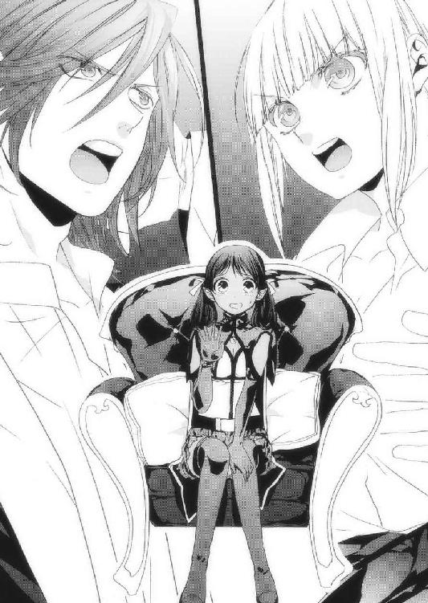
「ああ。夢魔のせいで、セレンディア王の直轄部隊である聖騎士団が人不足なんでな、近々その選抜試験があるんだ」
聖騎士。それは多くの戦士や剣士たちが夢見るものだ。
リリルが憧れを抱いても、何ら不思議ではない。
「ええっと、何でそれに反対なんですか？」
「よその国ならともかく、セレンディアはリリル向きじゃないからだ」
セレンディアの聖騎士が、リリルに向いてない？
「だが試験には通るだろうな。あの剣を持っているだけでも、かなり有利だ」
レニウスから重い溜め息が出る。
「あいつの持つ聖剣フレイムウォーカーは、斬られると傷口が焼けていくっていう上物だ。あれを使いこなしていることが、相当やる聖剣士だっていう証明になる」
レニウスはグラスを傾けて柔らかく笑うと、懐から一通の手紙を出し、テーブルに投げた。差出人はなく、ただレニウス殿へ、と書いてある。
「これは？」
「本国で受け取ったものさ。読んでみろよ」
あたしは封筒から中身を抜き取り、手紙を広げて目を走らせる。
そこには、ラティア王では国はまとまらないので、速やかにお前が王となれ、と記されていた。クーデターをほのめかす手紙だった。
「恥ずかしいことだが、セレンディアはまだ赤子なんだ。華やかに見えても、ちょっと裏を覗けば陰謀渦巻く混沌の世界だ。その手紙の他にもお前の大事な者を殺すとか身柄を拘束するとか、熱烈なのが山のように来るんだぜ？」
レニウスはまるで人ごとのように笑った。
「リリルは純粋すぎる。あいつは背中を預けられる仲間たちと冒険して、町の酒場で杯を交わし、心の底から笑ってるのが一番似合ってるんだ」
リリルはとってもいい人だ。ダークエルフのあたしを友達として認めてくれたし、表裏のない物言いとか、素直な性格はどことなくユーリエさんを彷彿させる。
でも、それが命取りになるような世界も存在するってことなんだ。
「話がかなり逸れたが、次はこっちが聞く番だ。と、その前に......」
レニウスが手を叩くと二人のメイドさんが入ってきて、テーブルに飲み物と、肉をパンで挟んだ物を置き、一礼して速やかに部屋を去って行った。
「話が長くなりそうだったから、軽食を用意させた。セレンディア風の味付けになっているから口に合うといいがな」
「あ、ありがとうございます」
こんな美味しそうなものを並べられたら、あの子たちが黙ってないんじゃないかな......と思ったそばから、あたしのフードがもこもこと動き、草人たちが飛び出した！
「「ぴぴ～～～～っ！」」
「ぅおあっ!? 何だあ!?」
驚くレニウス。当然だ。
「カナちゃんとユーちゃんです」
レニウスは目を丸くして、パンにかぶりつくカナちゃんとユーちゃんを眺めた。
「カナクさんが編み出した『草人の魔法』で、カナちゃんはカナクさんが、ユーちゃんは......ユーリエさんが、カナクさんへの想いを託して千年前に作りました」
「ユーリエが!?」
「そうです。一緒にいられなかった二人の、愛の形です」
レニウスは目を閉じ、天を仰いだ。
「そうか......ユーリエ、本当にカナクが好きだったんだな」
あたしは、そう呟いたレニウスに切り出した。
「レニウスがさっき言っていた、黒夢の魔王のことなんですけど──」
次の瞬間、顔を上げていたレニウスの表情が一転し、鋭い顔つきになった。
「ちょ、ちょっと待ってくれ。オレは謎の男と言っただけで、まだその名を口にしていない。何故ネウが、魔王のことを知ってるんだ？」
あたしは膝の上にのせた手を、ぎゅっと握りしめた。
「だって......か......カナクさんが......」
事実を、はっきりと伝えなければ。この人はカナクさんの親友なのだから。
『カナクさんが、その魔王なんです』
「............は？」
レニウスは目をぱちくりさせて、きょとんとした。
「は、はは、まさか。ネウも冗談を言うんだな。だがそれは、あまりに──」
「冗談......そう見えますか？ そう聞こえますか!?」
あたしはどんな顔をしていただろうか？
冗談みたいな顔になっていただろうか？
いくらなんでも、その言葉は酷い。
あたしは溢れる涙を手で拭いながら、泣き崩れたくなるのを必死に我慢した。
「ほ、本当なのか？」
あたしは小さく頷く。
「そんな、バカな......アレンシアの敵が......黒夢の魔王が......あの、カナク？」
レニウスはソファにもたれかかって脱力し、あたしも落ちるようにソファに座った。
「ネウ......頼む、教えてくれ。あの村で、何があった？」
あたしはなるべく感情的にならないように、淡々と話した。カナクさんが何を望み、何を捨て、何に飲み込まれ......その結果どんな決断を下したのか。かけがえのない人のために世界を敵に回すことになってしまった、カナクさんの苦しみを。
ユーリエさんへの深すぎる愛を。
それを利用した、リーゼという魔導師のことを！
「ぐすっ......というわけで、カナクさんは魔王に──」
「わかった。わかったから、もういい」
「ふえ......うえ───────ん」
感情が溢れ、嗚咽が止まらなくなったあたしに、レニウスが優しく言った。
「ネウ、よく話してくれた。今日の宿が決まっていないなら、ここに泊まってくれ。オレがそうできるように手配しておく」
それはとても有り難い提案だった。
何せあたしは、宿で部屋をとれるお金を持っていないのだから。
でも、あたしは涙を拭いて、レニウスに首を振った。
「あたしはコルセア王国の聖神官なので、無断で他国の大使館にご厄介になれば、あらぬ疑いをかけられかねません」
「いや、しかし......」
「コルセアにこんな言葉があります。〝甘苺畑で靴を履き直すな〟と。疑われるようなことをする者が悪いのだ、という戒めの言葉です」
あたしはテーブルの上で幸せそうに寝ころぶカナちゃんとユーちゃんを抱いた。
「そうか、なら、無理にとは言わない」
「お心遣い感謝します。また、お会いしましょう」
「ああ、またな」
あたしはレニウスと固い握手を交わし、部屋を後にした。
その日、あたしは宿で頼み込んで50エルで馬小屋の隅を借り、藁にくるまって寝た。
カナクさんと、カナちゃんユーちゃんと一緒に、楽しく食事をしていたあの頃の夢を見ながら。
第三章・裏 花束
濃い緑の隙間から吹いてくる涼しい風に、葉や枝の音がかさかさと音を立て、夕闇の緩やかな時間に彩りを加える。
全てが計算された世界。
道や建物などの人工物から、草木、小さな生き物たち、傾く陽光、白い空、碧い雲、風向きや雨などの天候に至るまで、完璧に統制されている。
私は自室で、メイドであり親友でもあるミーレに清々しい白の鮮やかなドレスを着せてもらっていた。
今夜は月末だ。いつもこの時期になると城の庭で王が国民を招き、パーティーを催す。
本来なら日が暮れてから始まるのに、今日は日暮れ前に音楽が鳴り出し、人が集まってきていた。
「姫さま、準備が整いました」
「ありがとう」
着付けが終わるとミーレは丁寧にお辞儀をし、退出していった。
今は公の時間だから、必要以上に仲良くしたりはしない。実にミーレらしい。
胸の谷間を強調し、大胆に背中を開いたドレスに身を包み、赤いルージュで唇を潤す。
これらは今日のパーティーのために用意してもらった、特別なものだ。
今夜こそはポルトに......どきどきしてもらうんだ。
その時、ドアをノックする音で飛び上がった。
「姫さま、そろそろパーティーにお顔をお見せ下さい」
ミーレの声だった。
「は、はい、すぐ行くわ」
火照る頰を掌で冷やし、私は部屋を出て庭へと向かった。
辺りは夜の帳が降りたばかりで、緩やかな風がとても気持ちいい。
白夢の明かりを灯し、それを集めた庭で、町中の人が集まってテーブルの上に並んだ豪華な料理に舌鼓を打つ。
庭の端には五人の奏者が心安らぐ音楽を奏で、それに合わせて人々が静かに踊る。
子供たちはこの月に一度の催しに喜び、城の中でかくれんぼやおにごっこをして遊んでいた。
私がミーレと共に会場に姿を現すと、会場がどよめいた。
「おお、姫よ、本日は一段と美しいぞ！」
そう声を掛けてきたのは、イストリアル王だった。
王は町の人に囲まれ、機嫌良さそうに杯を空けていた。
「王、いくら今日が特別な日でも、慎みをお忘れ無きよう」
私が諫言すると、王は真っ赤な顔で声を張り上げる。
「堅いことを言うでない、姫。時には羽目を外さねばいかんぞ」
わっはっは、と豪快に笑う王は、とても上機嫌だった。
私はそんな王に口許を緩めて小首を傾げ、会場に足を踏み入れた。
パーティは立食で、各々が自由に楽しめるようになっている。
私は早速、ミーレに給仕の手伝いをするよう告げると、テーブルの末席でチーズをかじっているポルトに向かって歩く。
私が歩く度に、周囲の視線を感じる。
ちょっとドレスが大胆だったかしら。
でも、彼の心を揺らすには、これくらいしないと。
ポルトはパーティ用の黒いスーツを着用していた。
男の人って、正装するとすごく魅力的に見える。
私は彼の隣に立ち、右手を差し出す。
それに気づいたポルトは、かじっていたチーズをぽろりと落として固まった。
「私と一曲、お願いできます？」
顔がものすごく熱い。
こくりと喉をならし、目を閉じて返事を待つ。
「姫さま、ぼ、僕、踊ったことがないんですが」
ポルトの言葉に、辺りが笑いで包まれる。
それは決して嫌みなものでなく、素直な彼らの表現だ。
でもこの時ばかりは、軽くむっとした。
私はポルトの手を無理矢理摑み、腕を組んで踊りの輪の中に飛び込んだ。
「ひ、姫さま、困ります......」
弱り顔でぎこちなく踊るポルト。
「ポルト、あなたいくつになったの？」
「え、じゅ、十八歳です」
私は彼の左手を腰に添えさせて、優しく右手を握る。
彼はただ、ひたすら踊りに失敗しないよう周りと足下ばかり見ていた。
十八歳......もう間に合わないのかもしれない年齢だ。
時間が、無い。
「ねえポルト、私、あなたが好きなの」
繫いだ右手を、ぎゅっと握りしめる。
「僕も、姫さまのことが──」
「違うわ！」
ポルトの胸に顔を埋め、囁いた。
「あなただけが好き。あなたの全てが欲しいの」
「姫さま？」
ポルトは私が生まれた時から、ずっとそばにいてくれた。兄弟のように育って、時には喧嘩もしたけれど、あの元気溢れる笑顔は今でも忘れられない。
私には欲を失った大人のイストリアル人が、全て同じに見えるのだ。
彼が、その場所にもうすぐ行ってしまう......。
胸が、張り裂けそうだった。
「セントラルなんて、吹き飛んでしまえばいい。何が完璧な世界よ。何が平和な世界よ。恋も出来ない世界なんて、楽園ではないわ」
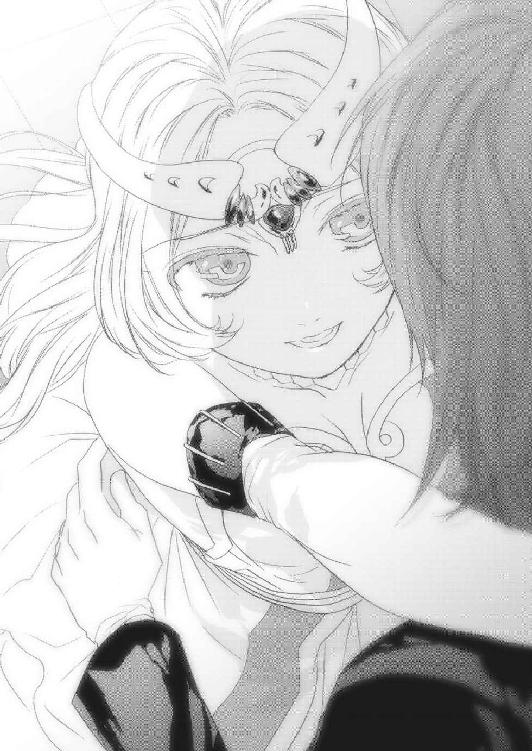
私の言葉に、ポルトは困惑した微笑みを浮かべるだけだった。
その顔は町でよく見かける、大人たちの表情そっくりだ。
涙が出そうになった。
私の想いは、この世界で唯一の恋だ。
ポルトはもう向こう側の人かもしれない。
でも、信じたい。
幼い頃から育み続けたこの想いを、受け止めてくれるって思いたい。
「よく考えて、ポルト。もしあなたが私を欲しいと思ってくれるなら、私は喜んであなたに全てを捧げるわ」
私は足を止め、ただ黙って瞳を覗き込んでくるポルトに告げた。
「返事は今じゃなくていいから、よく考えてほしいの。それで、もし私をあなたのものにしてくれるのなら......花咲の丘で花束を作って、それを持ってお城に来て。
もし花束を持っていなければ、それも一つの答えだと思って受け止めます。私はこの国の姫、あなたは図書館の司書。それ以上は望まないわ」
夜風が私の金の髪を揺らす。
何故か......私は口許が綻んで、笑顔になった。
「姫さま、僕は──」
何かを言いかけたポルトの唇を、私は両手で塞いだ。
「ごめん、ポルト。こういうことを言うのって、すっごく勇気がいるの。このドレスだって、あなたに見てもらいたい一心だったけど、本当は凄く恥ずかしいのよ。
だから今は何も言わないで。パーティが終わるまでこの手を離さないで。それくらいしてくれても、いいでしょう？」
ポルトは私の頭を撫でて、ゆっくりと頷いた。
私たちの間に、もう言葉はなかった。
ただ掌から伝わってくるこの熱さが、私のせいであることを願うだけ。
この日のパーティはいい意味でも悪い意味でも、忘れられない思い出になる。
そんな予感が胸に宿った。
翌朝、城下は霧に包まれていた。
「姫、勇気を出しましたね」
早起きして窓の外に目を向ける私に、ミーレが話しかけてきた。
「私、変かな？」
ミーレにだけは、昨日のパーティでの一件を全て話した。
「変なんてもんじゃないですよ。このセントラルではイストリアル人同士が一緒になるなんてことはありえないんですから。あたしたちは乱浄泉から生まれ、乱浄泉で死ぬ定めです。そうでなければこの狭い世界、あっというまに人だらけになりますよ」
ミーレの言うことはわかってる。
普通のイストリアル人は白夢の泉、乱浄泉のほとりに産み落とされる。そして死期を悟った者は自主的に乱浄泉へ身を投げ、再び生を享けるのを待つという。
そうしてこの世界は、調和を保ってきたのだ。
「姫さまだって、もう十五歳です。もう少しすればきっとあたしたちと同じように、動かない心を手に入れられますよ」
ミーレは口をつぐむ私の隣に来て、顔を覗き込んだ。
白の髪に薄桃色の瞳は他の人と変わらないのに、ミーレの短く整えられた髪は一段と滑らかで、瞳は透き通った宝石のようだ。
こんなに綺麗な容姿を持っているのに......勿体ない。
「ところで姫さま、今日一日ずっとそうしているんですか？」
「ええ、そのつもり」
窓の外には、いつも開け放たれている城門が見える。
その先は霧が濃くなっていて見えないけれど、彼は必ずあそこを通って城内の図書館へ向かうはずだ。
だから私はその姿をこの目で確認するまで、一歩たりともここを動くつもりはなかった。
「ほどほどにして下さいね。あたしはそろそろ仕事なんで、メイドさんに戻りますよ。何かつまめるものと、飲み物をお持ちしますね」
ミーレは私の肩をぽんと叩くと、部屋を出ていった。
いつもはよく食べる私だけど、昨日の夜のことを思い返す度に胸が苦しくなって、食欲など全く感じない。
あれで、良かったんだろうか。
はしたない女だと思われちゃったかな。
私は目を閉じて、彼の選択を受け入れるための、心の準備をした。
それから数時間後、事態は思わぬ方向に転がって行くこととなる。
第四章・表 道
がたがたと音がする。
お腹を空かせた馬が、柵を蹴飛ばしているんだろう。
まあ、ここは馬小屋なんだから色んな音がして当たり前だ。
カリーンの朝は、思いのほか寝苦しかった。
よくよく考えてみれば、マールの村はヴァスト山脈の裾野、というよりは山脈南端に位置していたので、初夏でも朝はまだ寒いくらいだ。
それに対して、ここ王都カリーンはフェーン平原にあるため、日の光が暴力的なまでに地面を焼き、気温を一気に上昇させる。
馬小屋を選んだのは寝冷えしないための藁があるからだったけど、完全に逆効果だった。
あまりの暑さにあたしは夜中に衣類を脱ぎ捨て、下着一枚で寝ていた。
それでも、汗が止まらなかったけど。
......また、がたがたと音がする。
それは、馬小屋の扉を開ける音だった。
ざり、ざりっと足音が聞こえると、今度は体を揺すられた。
「ネウ聖神官殿、ネウ殿ですか？」
みゅー。眠いからもう少し寝かせてほしい。
「私は大神官さまの使者です。ネウ聖神官に、緊急出仕のご命令が下りました。た、直ちに城へ来られたしとのことです」
むー......女王さま？
そんなことをしなくてもこちらから......って、ええ!?
あたしは驚いて跳ね起きた。
ぼさぼさの髪に藁が絡んで痛い。きっと、見るも無惨な姿だろう。
「代務を務める聖神官は既にマールの村へ出立致しております。グウェイル大神官さまからの命令書をここに置いておきます。では、その......お召し物をお忘れなく」
使者はあたしの足下に丸めた羊皮紙を置くと、足早に去って行った。
寝ぼけた頭で視線を下に向けると、下着以外何も着けていないことに気づき、恥ずかしさで瞬時に目が覚めた。
あたしは大急ぎで服を着て、丁度いい場所に水桶があったので、それで顔を洗う。体中に付いた藁を落とし、髪を整え、使者が置いていった命令書に目を通す。
そこにはあたしに重大な任務が与えられたので、直ちに城へ来るようにと記してあった。
はて、何だろ？
それに、何であたしがここに泊まっていることがわかったんだろう？
カリーンはかつては北の聖神殿、南の聖神殿、東の聖神殿で派閥争いがあったらしいけど、グウェイル大神官さまがそれらを一つに纏め、今ではアレンシアで最も聖神官が多く、信仰厚い国になっている。何百人といる聖神官の中であたしが選ばれたということは......ひょっとして、カナクさん絡みのご命令かも知れない。
あたしはまだ眠っているカナちゃんとユーちゃんをフードに放り込み、荷物をまとめて急いで馬小屋を出ようとしたその時、あたしが顔を洗った水桶に馬が顔を突っ込んでいるのが目に入った。
......水飲み用の桶だったのね。あたしは自分のうっかりさに軽く目眩がしたけど、気を取り直して朝日の中に飛び出した。
王都カリーンでは、どんな場所にいても王城の位置をはっきりと確認することが出来る。この周辺で最も高い建物、尖塔。あたしはその隣にある王城に向かって走った。
初めてここに来た時、あれを目にしてコルセア王国の技術は凄いと感心したけれど、その後、あれは建国以前からずっとあそこに聳え立っていたことを知った。
女王さまはあの建物の隣に堅固な王城を築くことで、得体の知れない巨大な尖塔をコルセアの力であるように見せたのだ。
やがてお城に着き、門兵に名前と身分を伝えて命令書を見せると、すぐに城内へと案内された。
燭台で照らされた長い廊下を歩き、謁見の間の前に来ると、二人の衛兵が豪奢な扉を塞ぐように立っていた。衛兵はあたしの顔を見るやいなや一人が扉の奥に消え、一人は丁寧に頭を下げて部屋の中へ入るよう促してくれた。
赤い絨毯の両脇には屈強なコルセアの兵士たちが並び、その奥の壇上に仮面の女王、烈翔紅帝オリヴィア陛下がいた。
（うはあ......ききき、緊張する！）
あたしはこの荘厳な雰囲気に飲まれてあわあわしていたけど、衛兵に促されて女王さまの前まで進む。
そして赤いカーペットに膝をつき、頭を垂れた。
「ネウ聖神官、ご命令により出仕致しました」
くい、と顔を上げた女王さまは鎧姿ではなく、肩を出した赤いドレスを着ていた。
「うむ、ご苦労」
女王さまはあたしに顔を向ける。
それだけで息が苦しくなるほどの緊張に襲われ、体が強張った。
「では、彼をここに」
女王さまの隣に控えていた衛兵が一礼して部屋を出て行った。
「ネウ聖神官よ。私はあなたを聖神官に任命した時、いずれあなたに声をかけるから覚悟しておきなさい、と言ったわ。覚えてる？」
「はい。しっかりと肝に銘じております」
「その時が来たわ」
女王さまは、あたしに何をさせるおつもりなんだろう。
「私はこの時のためにかなりの時間と労力、それに膨大な財をつぎ込んできた。そしてネウ、あなたをコルセア聖神官として認めたもう一つの理由も、そこにある」
「え、わ、わたくしを、認めて下さった理由、ですか？」
その時、後方の扉が開いて、先ほど消えた衛兵が一人の男性を連れて入ってきた。
それはレニウスだった。彼はあたしの横に来て、女王さまに膝をついた。
「待たせたわねレニウス殿。あなたの言う通り、ネウ聖神官はこの町にいたわ」
あたしは驚いて、レニウスの顔を見た。レニウスはあたしに笑顔を向け、女王さまに頭を垂れる。
「ネウが何故ここに居たのかはひとまず置いて、まずはレニウス殿の話を聞こう。先ほどはネウの話になって、肝心の用件を伺っていなかったからな」
「はっ！」
女王さまに促され、レニウスは立ち上がって口を開いた。
「改めて、お目にかかれて光栄です、陛下。まずはセレンディア王からの親書を」
レニウスは大使館であたしに見せてくれた封書を懐から取り出すと、それをそばにいた衛兵に渡す。衛兵は蠟の封印を破ってそれを女王さまに差しあげた。
「アレンシアは今、とんでもない災いを前にしています。言うまでもないこととは存じますが、黒夢の魔王と名乗る者がジェド連邦西部の城跡に居を構え、夢魔という下僕を使ってアレンシア中の者たちを醒めない眠りの中に落としています」
両脇に控えていた兵士たちがざわめいた。
「〝眠りもの〟だな」
「はい。これはもう国家間、種族間で争っている場合ではありません。我々アレンシアに住むものは、今こそ一致団結して魔王に対抗していかなければなりません。そうしなければアレンシアは、近いうちに眠りものの地へと変わるでしょう」
レニウスは一息つき、沈痛な面持ちで続ける。
「しかし残念ながらセレンディアは新興国であり、我々が声を大にしてもおそらく聞く耳を持たぬ国のほうが多かろうと存じます。コルセアも我らと同じ比較的新しい国家ではありますが、烈翔紅帝陛下のご威光はかの大国フェルゴートにも及びます。
そこでどうか、陛下に呼びかけて頂きたい。フェルゴート、ガザラ、ミスティカ、タロン、レベルド......オーダス、グレイウッズ、ログナックのジェド三国、そして大氷山脈の奥に暮らすフリーレン族に至るまで、全ての国、全ての種族に、魔王打倒を！
これがセレンディア王、ラティアの言葉です」
辺りは静まりかえっていた。
レニウスの言葉......セレンディア王の提案は、それほど衝撃的だった。
アレンシアの国、種族、全てがひとつに？
そんなことが可能なの？
「無理だな」
女王さまが冷たく断言する。
「はっきり言おう。黒夢の魔王はそんなに甘い相手ではない。それにアレンシアの国々をまとめるなど、あまりにも現実的ではない。各国間の歴史を考えれば、とてもその話が纏まるとは思えない」
「し、しかし陛下──」
女王さまはレニウスの言葉を手で遮った。
「但し今は、だ。アレンシア各地で夢魔が暴れ、眠りものが急増していることが国を超えた問題であるのは間違いない。各国各種族が一致団結して魔王を倒さなければならないことにも同意である」
レニウスの顔に、僅かな安堵が窺えた。
「では、いつ頃がよろしいとお考えか？ あまり時間をかけてしまっては、力になれる国も動けなくなります」
「わかっている。ゆえに今、私はアレンシア全土でどれほどの被害が出ているのかも調べさせている。もっとも、魔王の居城に近いセレンディアとオーダスが、一番の被害国だということは予想できるけどな」
ぐっ、とレニウスが唇を嚙む。
「早く手を打たねばならないことも承知しているからこそ、ネウをここに呼んだ」
え、あ、あたし!?
「さてと、ここからの話は極秘にしたい。皆の者はさがっておれ。ここにあるのは我が友、我が子である」
衛兵たちは渋々、ご命令に従って部屋から出て行った。謁見の間には女王さまとあたしたちだけとなり、妙な緊張感に襲われた。
「ふう、これで堅苦しくなく話ができるわね」
女王さまはそう言って玉座を離れ、あたしたちの前に来る。
「畏れ多いことです」
レニウスは一歩下がろうとしたけど、女王さまはその手を握って引き留めた。
「レニウス殿。我らはセレンディアを重要な同盟国だと思っている。元々は中央平原でジェド連邦に対抗するための利害関係だったけど、今は違う。同じ志を持つ者として、対等に見てもらいたいわ」
「あ、ありがたき幸せにございます」
恐縮して、レニウスは頭を下げた。
「ユーリエを守れなかったことは、本当に申し訳なかったと思ってる。私がもっと早くディゴバ・アンダーグラウンドに救援を送っていれば、あんなことにはならなかった。お詫びさせて」
女王さまはレニウスに跪き、頭を垂れた。
そっか、このお姿を衛兵たちに見せないために、人払いを......。
「そんなことをされては、こちらが困ります。ユーリエのことは残念でしたが、これも運命だったと思います。私はユーリエを......義妹を、誇りに思います」
「......ありがとう」
素直に非を認めて頭を下げることが、どれだけ難しいか。それを受け入れることが、どれだけ強さが必要か。それも、お二人はおいそれと頭を下げてはいけない王族なのに。
何て、凄い人たちだろう。
女王さまはゆっくりとあたしを見る。
「さてと、ネウは昨日はセレンディア大使館でレニウス殿と語り合っていたようだけど、彼はどこまで知ってるのかしら？」
う、さすがは女王さま。こっちの行動は、ほとんど摑まれているみたい。
あたしは雨に打たれた小さな動物のように体を震わせながら、顔を上げた。
「は、はい。レニウスには、カナク神官が魔王であることを話しました」
女王さまに、噓やごまかしは通じない。
誠実に、実直に応対するのが一番だ。
「そう......構わないわ。あなたが言わなければ、きっと私が言っていた。だから、そんなに怯えないで。あなたは正しかった」
「あ、ありがとうございます」
女王さまは嘆息して立ち上がった。
「カナクは最初から狙われていたの。リーゼはカナクを黒夢の魔王にするためだけに、多くの者を犠牲にしてきたのよ」
女王さまは、まるで搾り出すようにそう言った。
「しかし、そのリーゼという魔導師は何故カナクを狙ったんですか。あいつは気弱で人を傷つけるのを嫌う優しい奴でした。こんな酷いことを平気でできる奴じゃないんです」
レニウスがそう疑問を持つのは当然だろう。
「カナクはあなたたちが考えているほど......単純じゃないの」
女王さまはお辛そうにそう言って口をつぐんだ。
いろいろあったんだ。
本当に、いろいろと。
それはきっと、言葉では表せないほどのものなんだろう。
沈黙が、部屋中の空気を鉛のように重くする。
そんな中、あたしは恐る恐る口を開いた。
「女王さま、あ、あ、あたしに、何をさせようとお考えで？」
女王さまは玉座ではなく壇に腰掛け、あたしに告げた。
「私は魔王、というよりはリーゼに対してだけど、どう戦えばいいかを以前から考え、その方法を実現できる者が存在するのかをリュシオルファクルに調べてもらっていた。
その答えは大氷山脈、ディルギニアにあった」
ディルギニア......闇種族、フリーレンの国だ。
「フリーレンは生まれつき顔に独特の模様を持ち、美しい金色の髪に鹿のような耳を持つ闇種族よ。まあ閉鎖的な種族だから、そのへんの町で出会うことはないだろうけど」
女王さまは一息つくと、力を込めて言った。
「そのディルギニアに、銀獣人が暮らす隠れ村がある」
その一言に、あたしは頭を殴られたような衝撃を受けた。
レニウスも、驚きの表情を隠せない。
それもそうだ。銀獣人と聞いて、驚かないわけがない。
「私は密かにディルギニアに遣いを出し、時が来るまで大切にその村を保護するよう要請し、見返りとして多大な援助を約束した」
女王さまは懐から一通の封書を出した。
「ネウ聖神官に命ずる。この中に入っている書簡を、セスコム荘の中にある隠れ村に住むディクトという男か、もしくはその縁者に渡せ」
ディクト......銀獣人の、ディクト。
その人の力を使ってカナクさんを、討つつもりなんだ。
本気で......あのカナクさんを......？
「あの、か、カナクさんを、どうしても討たねばなりませんか？」
思わず漏らしたあたしの言葉に、女王さまとレニウスがこちらに厳しい視線を向けた。
「それはどういう意味？」
「か、カナクさんは、リーゼに騙されているだけです。だったら、何とかカナクさんを救う方法が、あ、あるんじゃないでしょうか」
「その方法、今この場で言える？」
「えあ、う、それは......」
女王さまの低い声に、あたしは瞬時に飲まれる。
「カナクは既に魔王としてこのアレンシアに君臨し、夢魔を使って各地に実害をもたらす存在になっている。黒に染まってしまったものを白に戻すことが出来るとは思えないわ」
体が震え、また涙が零れそうになる。
でも、あたしは必死に口を動かした。
ここが正念場だ！
「それでも、何らかの方法があると思うんです。あの、上手く言えないんですけど、その方法も考えてみても、いいのでは、な、ないでしょうか」
ぼろぼろと涙が溢れ、頰から滴り落ちて床で弾ける。
スカートを力一杯握りしめて、震える体を抑えた。
「あなたは何がしたいの？」
「まだ何もしてないです。だからこそ、あ、あきらめたくないんです。最後の最後まで、黒を白に戻せると信じて、がんばらせてほしいんです！」
精一杯の言葉だった。
女王さまは口をつぐみ、玉座に戻って溜め息とともに腰を下ろす。
「レニウス殿、あなたは魔王を倒そうと言ってきた者だ。ネウの意見、どう考える？」
レニウスは丁寧に一礼し、凜とした態度で女王さまに向かった。
「先に申し上げた言葉は、あくまで兄ラティアとその重臣たちの総意です。私の考えは入っていません」
「ほう？」
ぴくり、と女王さまの体が揺れた。
「ネウの意見には......賛成です。私もカナクを助けられるものなら、そうしたいと思います。今は考えられることを、全てやってみた方がよろしいかと」
レニウスはあたしの肩に手を置いて、進言してくれた。
女王さまは顔を上げ、あたしに聞いた。
「ネウ、あなたは具体的に何をどうするつもり？」
びくっ、と体に電気が走る。
しっかりと、あたしがやりたいことを女王さまにお伝えしなければ！
「アレンシアの北東部には銀獣人やイストリアルの伝説が数多く残されていますし、まだまだあたしの知らないことを知っている人がいるかもしれません。ですから各地を旅して、カナクさんを救う方法を模索したいと考えております」
「それは、マールの村の聖神官を辞するという意味か？」
「む、村のみんなは、いつでも帰ってこいと言ってくれました。みんなが愛したカナク聖神官を取り戻すこの旅は、カナクさんに教えを受けたあたしがやらなきゃいけないんだと思っております。それに、それに──」
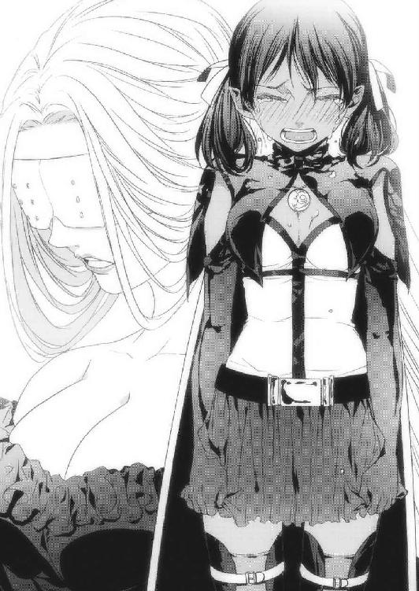
涙で前が見えないし息も苦しいけど、全身全霊を込めて声を張り上げた。
「カナクさんは、あ、あ、あたしの、大切な人ですからっ！」
その言葉に、女王さまは口許をゆるめた。
「ふふ......ははは......」
レニウスまで、声を押し殺して笑っている。
何だろ、なにか変なこと言ったかな？
「そこまで言うならいいでしょう。ネウ聖神官よ、カナクを救う方法を見つけなさい」
「あ、ありがとうございます！」
全身から力が抜け、崩れるように頭を下げた。
「但し、コルセア王国は魔王討伐の方向で動かざるを得ない。だから、まず先にディルギニアには行ってもらう。これは厳命よ」
う......それは......。
「じょ、女王さまは、カナクさんを助けたいあたしに、カナクさんを討つための人を迎えに行けと......そんな惨いことをしろと、仰るのですか？」
女王さまがくっと顎を引くと、凄まじいマナが部屋中に放たれる。
これは、怒気だ！
「ネウ、あんた自分の言ってることがわかってんの？」
く、口調が変わった！
「コルセアから受けた恩を仇で返すつもりなら、その首飾りをここに置いて、どこへなりとも行くがいい！」
「う、うう」
女王さまは、本気でそう言ってる。
覇気がある！
「ジェド連邦はまともな陽種族の拠点がディゴバくらいしかなく、安易に足を踏み入れられない国よ。故に、ジェドは我々にとって未だ謎が多い」
女王さまはあたしのそばに来て、肩に手を置いた。
「私はこの時のために、誰ならディルギニアまで最短で行けるのかを考えていた。信頼できて、ジェドに詳しい者。それは闇種族ダークエルフでありながらコルセアの聖神官である、あなたしかいないのよ、ネウ」
その言葉に、体が震えた。あたしを聖神官として認めて下さったもう一つの理由とは、ディルギニアへの使者だったんだ!!
「私はカナクのために泣いてくれたあなたなら信じられると思った。私の信頼を裏切るようなことはしないで。コルセアへのけじめだと思ってやり遂げて。わかったわね？」
「う......は、はい」
そこまで言われては、もう断れない。
あたしは腰から力が抜けるのを感じて項垂れた。
「女王さま、ひとつお願いをしてもよろしいですか？」
その時、レニウスが女王さまに膝をついてにじり寄った。
「その仕事、是非私も加えて頂きたい」
「なんですって？」
あたしも、そして女王さまも驚きの声を隠せなかった。
「私は中央平原で戦いを重ねた戦士です。決してネウの足手まといにはなりません」
「それは駄目よ。もしレニウス殿に万が一のことがあれば、コルセアとセレンディアの同盟に亀裂が入る。そんな危険なことはさせられない」
「本国には手紙を書きます。私が命を落としても、それは私の独断でありコルセアのせいではない。くれぐれも同盟を守るようにと」
レニウスの目は、本気だった。
コルセアの烈翔紅帝と謳われた女王さまに、一歩も引かない構えだ。
この威風堂々たる姿に比べ、あたしの......何と小さなことか。
「レニウス殿、何故あなたはそこまで？」
「ここにいるネウとはマールの村でカナクと共に親友の誓いを立てた仲です。私は、いやオレは、友を守りたい。想いはネウが持つものと同じです。女王さまがお認めにならないのであれば、私は王都を出てからネウと合流し、独断で行動を共にします」
堂々とそう言い切ったレニウスの隣で、あたしも女王さまに頭を下げた。
しばしの沈黙の後、女王さまはふふっと微笑をこぼし、口を開く。
「いいでしょう。ならばセレンディア王には私からも一筆したためます。レニウス殿と私の連名であれば、セレンディア王も偽物とは思わないでしょう」
「ありがとうございます」
あたしたちは、改めて女王さまに礼を捧げた。
「では正式に通達しよう。聖神官ネウに、ディルギニア行きを命じる。その後は魔王となったカナクの目を醒まし、再び人に愛される神官に戻せる方法を探しなさい。
なお、同盟強化とセレンディア王の依願を承諾した証しとして、王弟レニウス殿にも任にあたって頂く」
「「ははっ！」」
あたしたちは女王さまに向かって頭を垂れた。
そして女王さまは懐から封書を出すと、それをあたしに差し出した。
「この中には仕事に関する必要書類と、中央平原の拠点エマル付近まで飛べる瞬間移動魔法の使用許可証が入ってるわ。この時のために用意していたディゴバのポータルは、ジェド国軍のアンダーグラウンド襲撃事件の時に破壊されてしまったからね」
あ、あの時のコルセア軍が出てきたポータルは、このディルギニア行きのために!?
あたしはあまりの驚きで、声も出せなかった。
「それとディゴバでもう一人、あなたを補佐する者を用意しておいたわ。共に任に当たってちょうだい。では、頼むわね」
このお方は、いったいどこまで先を見通しておられるんだろう。
女王さまから託された命令書が、とても重く感じられた。
第四章・裏 花束
息が詰まりそうな時間を過ごしていた。
テーブルに目をやると、手つかずの朝食がそのまま載っている。
早く、来ないかな。そう思いながらひたすら窓の外を見続ける私の部屋に、突然ミーレが血相を変えて入ってきた。
「姫さま、ちょっといいですか？」
私は溜め息をつき、ミーレに目を向ける。
ミーレは両手に何かを持っていた。
「何かしら、急用？」
「これを、ご覧になって下さい」
両手を私に向けるミーレ。その表情は凍りついている。
私は渋々それに目を落として、思わず心臓が跳ね上がった。
それは二匹の、小さな鋏頭虫の死骸だった。
それも、ただの骸ではない。二匹とも足は取れ、体にはその鋏で刻まれた跡があり、二匹が争ったのは一目瞭然だった。
「これは......どういうこと!?」
ミーレは悲しそうに、ことの経緯を話す。
「お買い物を頼まれまして、町へ向かう途中の道で争っているこの二匹を見つけました。セントラルでは、人はおろか虫ですらも争うことはありません。それがこうして、互いの命を奪い合うほど深く傷つけ合うなんて......妙だと思いまして」
私は震える手でその二匹を受け取り、目を閉じて白夢を込める。
哀れな虫たちは、白い煙となって宙に溶けていった。
「よく知らせてくれたわ。こうしてはいられない！」
私は窓際で佇むのをやめ、駆け足でドアに向かう。
「あっ！ 姫さま、どこへ!?」
「私は乱浄泉を見てきます。あなたはこのことを王に知らせて。急いで！」
私とミーレは、慌ただしく部屋を後にした。
じめっとした空気が、踝をすり抜けていく。
私は城の奥深く、セントラルを見下ろす塔に通じる扉を開け、中に入った。
古いけれど頑丈な煉瓦で作られた円筒形の建造物で、花瓶の中のような構造になっている。
その壁に沿って階段が螺旋状に上下へと伸びていた。
この上に何があるのかは知らないけれど、底にあるものはよく知っている。
私は意を決して、螺旋階段を降りていった。
歩くごとに壁に掛かった燭台に白い炎が灯り、足下を照らしてくれる。
長くて大きい階段を、私は駆け足で降りる。
徐々に明かりが薄くなり、代わって仄かな暗がりが辺りを包み込んでいく。
やがてうっすらと明るくなってくると、橙色の明かりが階段を照らし、壁がなくなって螺旋階段だけが剝き出しになる。
そして、広々とした空間が姿を現した。
眼下に広がるのは波一つ立たない泉と、それを囲うごつごつとした岩場だ。それを浮かばせているように、漆黒の空間がどこまでも深く広がる。
あれは黒夢だ。
黒夢は乱浄泉で白夢に変えられた後、この円筒形の塔の中を通り抜け、セントラルへと送られていく。
この螺旋階段を支える塔は煙突のようなもので、ここは黒夢にある程度の耐性を持つ者でなければ足を踏み入れられない。
言い換えれば、セントラルでは私と王しかいないということでもある。
私がここに来たのは、その泉の色を確認するためだ。
普段は純白の泉だけど、黒夢が乱浄泉で浄化しきれないほどの量になると乱浄泉の色は白ではなく、赤く染まるという。
そして乱浄泉のほとりにたどり着いた時、私は目を疑った。
「こ......これは......」
その色は白でも赤でもなく......。
紫だった。
呆然とする私の目の前で、泉が激しく波打って渦を巻き、やがてその中央から一本の白い剣が姿を現した。
「白剛剣？」
この剣が現れるのは、悪しきものがセントラルに侵入した時だと伝えられている。
白剛剣は水面を切り裂きながら、息を呑む私のところへやって来た。
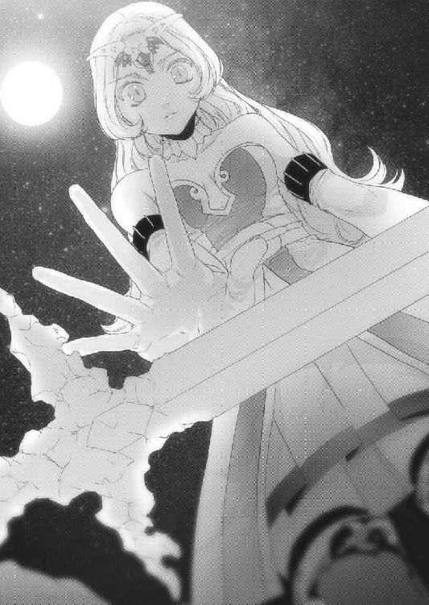
恐る恐るそれを手にした次の瞬間、頭のてっぺんから足の先までを駆け抜けるような痺れが私を襲うと、ずどんという音と共にセントラルそのものが大きく揺れた。
乱浄泉の水がばしゃばしゃと跳ね、塔から砂が雨のように落ちてくる。
私はセントラルにとんでもないことが起きたことを確信し、白剛剣を両手に抱えて再び階段を走り始めた。
額から汗が弾け飛び、螺旋階段の上にぽたりと落ちる。
息が切れる。
胸が痛い。
膝が悲鳴を上げ、ねっとりとした疲労がまとわりつく。
平穏が、平和が、ゆっくりと流れる時間が、幸せな場所が、柔らかな風が、白く美しい空が、ふわふわと浮かぶ碧い雲が、生命を育む陽光が......愛する故郷、イストリアル・セントラルが、すべて壊れてしまうような恐怖を感じながら、私はひたすら走った。
ようやく階段を上って扉を開けて王城の中に入ると、そこに思いもよらない人物がいた。
「姫、乱浄泉は!?」
白銀の鎧に身を包んだ、イストリアル王だった。
数人の者を従え、彼等もまた一様に、武器防具を身につけている。
これから戦いに出ることは明白だった。
「はあ、はあ......い、泉の色は......紫でした」
「紫だと!?」
王は珍しく厳しい表情を浮かべた。
「イストリアル王、このセントラルに、何が起きたのですか!?」
王は何も言わず、私が抱きしめていた白剛剣を奪うように取り上げた。
「お前はここにいろ。ワシが、全て片付けてくる」
ごつごつした大きな手が、私の頭を撫でる。
「白翼馬を引け！ ヤツのところまで一気に行くぞ！」
大股で歩いて行く父の背中を、小走りで追いかけていく。
中庭に出て、まず私の目に飛び込んできたのは、その異様な空だった。
いつもの白い空ではなく、真っ黒な渦が見下ろすように天に聳えていた。
「ちっ......だいぶ流れ込んで来てるな」
王は苦々しそうに舌打ちすると、準備されていた大きな翼を持つ馬に跨がった。
「王！」
父は私に一瞥もせず、ただ一点、その黒い渦だけを睨みつけていた。
「心配するな、姫！」
父、いやイストリアル王は、白翼馬を駆って宙に飛び立って行った。
でも、嫌な予感は終わるどころかますます募る一方だ。
私は居ても立ってもいられず走り出した。廊下を駆け抜け、エントランスホールを通過し、城門への道を下り、一気に外へと抜ける。
目的の場所は一目瞭然だった。黒煙があちこちから上がる、眼下の町だ。
下り坂を走っていると、セントラルを囲う外壁の一部が損壊し、そこから黒夢がなだれ込んでいるのが目に入った。
あの向こう側には黒夢がある。
それはここの人々の心を侵し、小さないさかいを引き起こす。それが導火線となって、やがて怨み辛みが心に根付いてしまう。
そうなったら、もう平和な世界など消え失せてしまうだろう。
涙が出そうになりながら、昨日ポルトに言った言葉を反芻する。
『セントラルなんて、吹き飛んでしまえばいい。何が完璧な世界よ。何が平和な世界よ。恋も出来ない世界なんて、楽園ではないわ』
私は何て愚かなのだろう。
一時の感情に流されて、何てことを口走ってしまったんだろう。
このまま世界が終わってしまったら、それは私のせいかもしれない。
私はそんなことを考えながら、セントラルの町に入った。
入って、足が止まった。
「ああ......うう......」
建物は見るも無残に壊され、道には逃げ遅れた人々が倒れている。みな傷を負い、黒い傷口から黒煙が揺らめいていた。
「何て、酷い......」
その時、ゆらりと何かが静かに壊れた建物から出てきた。全身が影のように黒く、ただひとつ、白い仮面だけが不気味に体についている。
それはひとつ、ふたつと数を増やしていき、やがて数十に膨れ上がった。
「まさか、夢魔がセントラルに!?」
私は瞬時に両手に白夢を集め、指先で宙に魔法陣を描き上げる。黒夢の使徒たる夢魔たちが奇声を発して襲ってきた。
全ての夢魔が射程に入ると、力を解放して最後の詠唱に入った。
「黒夢払い！」
夢魔は足下から噴き出した白夢にその身を貫かれ、断末魔の叫びを残して霧散した。
その時、今度は前方の建物の奥に見える塔が爆散し、地響きを立てながら倒れていくのが目に入った。
あそこに王がいる。
そう感じた私が足を向けようとした、その時だった。
「ああ......」
そこに横たわっていた人の姿に、見覚えがあった。
全身から力が抜け、涙が頰を走る。
私は震える足を前に出し、横たわるその人のそばに寄った。
第五章・表 道
あたしとレニウスは女王さまとの謁見後、王城の執務室へ向かった。
そこで女王さまからの命令書を政務官に見せると、旅に必要なものを買うための資金として一人10万エルを受け取り、廏舎で最も優秀な足を持つ軍馬二頭を支給された。
「軍馬育成にかけてはコルセアの右に出る国はない。その中でもこの二頭は一級品の軍馬だ。この毛並み、足の太さ、蹄......こんな立派な馬、見たことがない！」
レニウスはその馬を前にして興奮気味だった。
「ところでネウ、政務官から瞬間移動魔法のことは聞いたか？」
あたしは頷いて、女王さまから頂いた瞬間移動魔法の使用許可証をレニウスに渡した。
魔法陣が描かれたそれは、許可証というより魔法の道具そのものだった。
瞬間移動魔法は一般人の使用が禁止されている。何故なら魔法陣が複雑な上にかなり緻密なのだ。魔法は、魔法陣を正確に描かなければ成功しない。手で描く魔法陣ではどうしてもぶれが生じるので、熟練の魔導師でなければ使用することは出来ないのだ。
でも、この許可証のようにあらかじめ特殊な紙に魔法陣を仕込んだ「魔法の道具」という形にしておけば、心置きなく使うことが出来る。この魔法陣を込められる紙が凄く高価な上に、使えるのが一度きりという弱点もあるけれど。
「では、それぞれ必要なものを買い集めて、北門で落ち合いましょうか」
あたしは馬に乗って具合を確認しているレニウスに言った。
「そうだな。大氷山脈に行くなら、防寒着も必要になるだろうしな」
「では、行ってきますね」
「ああ」
あたしは馬に乗って、町へ向かった。
コルセア王都カリーンは、様々な人種が行き交う大都市だ。それこそ陽種族であれば一通り目にすることができるほどだった。
一儲けしようという商人風の人間や、コルセアのヴァスト鉱山から鉱石を運びに来たドワーフ。冒険者の一団や楽しそうに会話を交わすフォレストエルフや、ハーフエルフ。
みな、このカリーンという都市の雑踏を楽しんでいる。
でも、あたしの姿を目にすると賑やかな笑い声が一瞬凍る。
それが闇種族と陽種族の間にある壁だった。
いつかこの両種族が、手を取り合う時が来るんだろうか。
そんな思いを胸に、あたしが買い物を済ませて北門に向かうと、レニウスは既に荷物をまとめてあたしを待っていた。
「お、思ったより早かったな。女の買い物は時間がかかると思ってたんだが」
屈託なく笑うレニウスからは、かつてあたしを薄汚いと罵った面影はまったくない。
セレンディア王の弟で、英雄と呼ばれたこの人が一緒に旅をしてくれるのはとても心強いけれど、本心ではこの人と打ち解けられるのかが心配だった。
「あの、旅立つ前に、一ついいですか？」
レニウスは馬を下りて、あたしの前に来た。
「積もる話は旅をしながら出来ますけど、これだけは今聞いておかないといけません」
「ああ、何だ？」
「レニウスは闇種族と陽種族が仲良くすることが出来ると思いますか？」
その瞬間、レニウスは眉間に皺を寄せた。
「それは、難しくて深い問題だ。現に、あの夢魔が現れる寸前まで中央平原でオレたちはジェド連邦と戦っていたんだからな。
ジェドはアレンシアの制覇を目論んでいる。もし中央平原がジェドの手に落ちれば、ヤツらがこのフェーン地方や、大国フェルゴートに侵攻する足がかりになる」
......あたしは暗い気持ちで目を落とし、それを聞いていた。
レニウスは中央平原で、どんな戦いに身を投じてきたんだろう。
それはきっと、あたしの想像を超えるほど凄惨なものだったに違いない。
「でも、だ。オレは信じたい。闇種族と陽種族が力を合わせれば、きっと凄いことが出来ると思う。中央平原で争っている連中がアレンシアの代表ってわけじゃない。それを教えてくれたのはネウ、お前だから」
あたしははっとして、レニウスの顔を見た。
「お前みたいな聖神官がいる。それはアレンシアにとって僥倖だよ。考え方を変えれば、オレたちの可能性はもっと広がるんだ」
レニウスはそう言って、あたしに手を差し出す。
「マールの村では、まだそれに気づいていなかった。あの時、お前に酷い言葉を浴びせたことは、本当に反省してる。その償いというわけじゃないが、オレは純粋に親友のお前を助けたいと思ってるんだ」
あたしの心にこびりついていたものが、優しく溶けていくのを感じて目が熱くなった。
この人と、旅に出よう。
カナクさんを救う旅じゃないのが残念だけど、まずはこの旅をやり遂げよう。
あたしは、レニウスの手を強く握った。
瞬間移動魔法は聖神殿が監視している禁術なので、それを聖神官が人目も憚らずに使っちゃまずいだろうというレニウスの提案で、あたしたちは王都カリーンを少し離れた。
街道を外れ、人気が無いことを確認すると、使用許可証から瞬間移動魔法を開き、そこに現れた青く輝く光に飛び込んだ。
瞬間移動魔法の出口は、丘の上にある深い森だった。眼下には城壁に囲まれた町と、ヴァスト山脈から流れてくる小川が見える。
女王さまは中央平原の拠点、エマル付近に飛ぶと仰っていた。
ということは、あれがそうなんだ。
「この瞬間移動魔法は、王都カリーンからここへ援軍を送るためのものなんだろうな。なるほど、ここからならあの町がどんな状況なのか、攻めてきた敵をどこから打ち破ればいいのか、手に取るようにわかる」
レニウスは感心して、中央平原を眺めていた。
「しかし、こんな国家機密級の魔法を他国者のオレにまで使わせてくれるとはな」
確かに、レニウスの言う通りだ。
裏を返せば、それだけこの仕事は重大なのだ。
「ヴァスト山脈に向かって行けばディゴバに抜ける間道があります。この馬だったら、すぐに着くんじゃないでしょうか」
「そうだな、それじゃ行くか。先頭は戦士であるオレが務めるからな」
「はい、お願いします」
あたしとレニウスは手綱を引いて、森の道を走った。
軍馬育成はアレンシア一と謳われたコルセア自慢の馬は、速さだけでなく持久力もあり、さらには狭い道や悪路もものともしなかった。
（良質の馬は誰でも乗りこなせるとカナクさんから教わったけど、ここまでとは......）
あたしはそれほど馬術に長けているわけじゃないけど、この馬は本当に乗りやすい。
烈翔紅帝オリヴィア女王陛下が戦において最も重視し、非凡な知識と惜しみない愛情を注いで育て上げたコルセアの畜産業は、大国フェルゴートも一目置くというのも頷ける。
馬の足があまりに速すぎて会話を交わすことも出来なかったので、あたしたちは暫くそのまま走り続けた。
そして、その日の夕刻。
レニウスが左手に手頃な広場を見つけたので、今夜はそこでキャンプすることにした。
茂みに囲まれたその広場は中央に石が並べられていて、薪の跡が残されている。森からは少しだけ外れていて、茜色に染まる空がよく見える。周囲は背の高い雑草が繁茂し、一カ所だけがぽっかりと洞穴のように空いていて、奥から川のせせらぎが聞こえてきた。
アレンシアでは、冒険者や旅人がキャンプを行った場所にこのような跡が残る。こういう場所は既に先人が安全性を確認しているので、他の場所よりはキャンプしやすい。
あたしは馬から下りると、ワンドを手にした。
「では、あたしは水を汲んできますね」
「ああ、じゃあオレは火を熾しておこう」
その言葉はちょっと意外だった。
セレンディアの王族であるレニウスに、そんな雑用をやらせていいのかな。
「え、えと、お食事の用意はあたしがしますよ？」
そう言うと、剣を携えていたレニウスが笑顔をくれた。
「いいかネウ、お前は使用人じゃないんだから、そんなに気をつかうな。オレはオレがやれることをやる。オレが出来ないことは、遠慮なく任せるけどな」
「あ......はいっ！」
あたしたちは、顔を見合わせて笑った。
やっぱり、レニウスは不思議な人だ。屈託がないっていうか、素直っていうか。
肩肘張らないところが、凄く心に響く。
「じゃ、川に行ってきま──」
その時、あたしは妙な悪寒を感じて思わず口を止め、ワンドを構える。
森側にある道に、何かが立っているのに気がついた。あたしの異変を瞬時に推察したレニウスが剣を抜いて振り返り、叫んだ。
「誰だ！」
それは、ゆっくりとあたしたちに近づいてきた。
淡緑色の髪、金色の瞳。わき腹のあたりが壊れた見覚えのあるスケールメイルに、砂だらけのスカート。そして刀身が半分くらい欠けている橙色の聖剣。
「まさか......リリル!?」
レニウスはそう言ったけど、あたしにはまるで別人のように思えた。
何故なら、その表情はあまりにもあのリリルとかけ離れていたからだ。
つり上がった眉、血走った瞳、ぎりりと嚙みしめた唇。
それはまるで、獰猛な獣のようだった。
「聖騎士団入団試験はどうしたんだ？ それに、どうしてここに──」
刹那、背筋に冷たいものが走った！
「危ない！」
あたしがそう叫んだ次の瞬間、リリルは折れた聖剣を振り上げ、躊躇なくレニウスに向かって斬りつけた！
「がっ!?」
レニウスは咄嗟に身を翻して致命傷は避けたけど、肩からつうっと血が流れた。
「レニ......ウスぅ......」
おかしい。やっぱり、何か変だ。
聖剣を握りしめるリリルと対峙したまま、レニウスが叫ぶ。
「バカな、何でお前がオレを!?」
レニウスは今起きている事実を受け止め切れていないようだった。
「レニ......ウス......あん、たと......ずっと、いっしょに......ぃああああっ！」
リリルが悲しそうに呻き、折れた剣で容赦なくレニウスを斬りつける。
レニウスはそれを剣で何とか捌いていたけど、速さ、力、技術、全てにおいてリリルのほうが少し勝っているようだった。
致命傷こそないけれど、レニウスの体は着実に刻まれていく。
しかもリリルが持つあれは、ただの剣じゃない。傷口から橙色の蒸気が噴き出し、レニウスの体を焼いていた。
「リリル、何が、目的だ！」
レニウスはリリルと剣を交えながら声高に叫ぶ。
「あた、しは......あんたが、好きだから......あんたを倒して、ひとつにぃぃああああ！」
駄目だ。あのリリルは、正気じゃない！
「レニウス、今は、話ができる状態じゃないです！」
あたしはワンドにマナを込めながら言った。
「ああ、どうやらそうらしい、と、とにかくこの傷を！」
「はいっ！」
あたしは十分にマナをワンドに溜めて、魔法陣を描き始めた。
魔法を覚えるために必要なのは知識だけど、唱えるために必要なのは集中力だ。あたしは丁寧に、間違えないようにマナの輝きを宙に刻んでいく。
その時、不覚にもカナクさんの笑顔が脳裏を過ぎってしまった！
「あっ！」
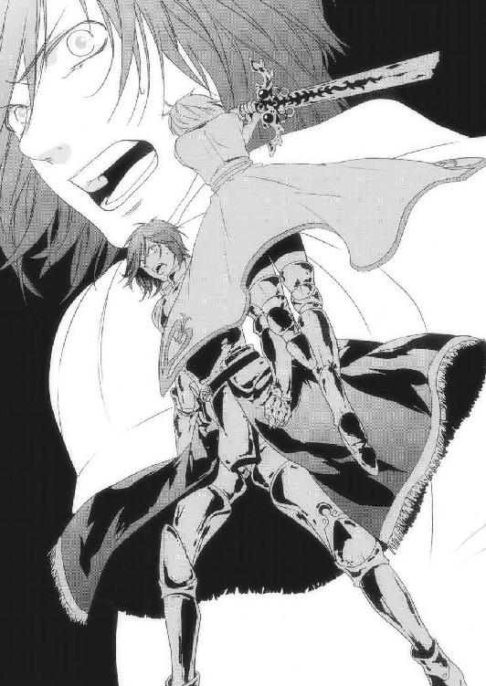
あたしはきちんと割り切れてなかったんだ。
この旅を、この依頼を遂行する心の準備が出来ていなかった。
カナクさんを助けたい一心で村を出たのに、ここにいるあたしはカナクさんを倒す切り札を迎えに行ってる。その事実を、受け止め切れていなかったんだ。
集中が乱れ、精密に描かなければならない魔法陣にズレが生じる。正確性を失った魔法陣は、あらぬ形へと勝手に変化する。ぐにゃりと曲がった線が予期せぬところと繫がり、勝手にマナを吸い上げていく。
これこそ魔法の大失敗形、暴走状態だった。
「ああ、あああ......」
慌てて修正を試みたけど、もう遅い。暴走状態に入った魔法陣を立て直すほどの腕は、あたしにはなかった。
やがて、ドンという轟音とともに、魔法陣が爆発を起こした！
「うぐっ！」
あたしの体は木の葉のように軽々と吹き飛ばされ、頭から地面に叩きつけられた。
顔を上げると、額から顎に向かって血が駆け抜ける。
痛みより、魔法に失敗した方がショックだった。
「なっ、ネウ!?」
レニウスの悲痛な声が響く。
何やってんだろ、あたし。
聖神官の存在価値でもある回復魔法に失敗するなんて......情けないにも程がある。
「ぐう......こうなったら、仕方ない」
ギィン、と剣と剣が交錯する音がして、レニウスがあたしのそばに来た。
「顔を上げろネウ、動けるか!?」
あたしは小さく頷くと、レニウスは懐から投げナイフを数本取り出した。
「馬を連れてくるんだ。一気に駆け抜けて、リリルを振り切るぞ！」
それだけ言い残すと、レニウスはリリルにナイフを立て続けに投げつける。リリルはそれを察知し、流れるような動きでナイフを躱し、再びレニウスと剣を交えた。
馬......そうだ、馬を。
あたしは折れそうになった心を何とかつなぎ止め、ハーネスを二頭の馬に結ぶ。最後に、先頭の馬の鞍に手をかけてよじ登ると、思い切り手綱を叩いた。
「レニウス！」
あたしがそう叫ぶと、レニウスは顔をこちらに向けて口許を緩めた。
「よし、そのままこっちに！」
「はいっ」
レニウスはリリルの剣を弾くと、その隙に脇を通り抜ける馬にしがみつき、鮮やかに馬の背へと移動した。
「ネウ、このまま森を目指して進め！」
「は、はひっ」
後ろを見ると、リリルが信じられない脚力で追いかけて来ていた。
そこへ再びレニウスがナイフを投げつける。それを聖剣で弾いたリリルは、その動作のために体を止めざるを得なかった。
こうしてあたしたちはリリルから逃げ切ると、距離を稼ぐために暫く馬を走らせた。
馬の足が道に落ちている木の葉を砂とともに舞いあげ、夜の闇に消えていく。風が木の幹の香りを交えて、あたしたちの体をすり抜けた。
頭がずきんと痛んだけど、レニウスのほうが何倍も痛いはずだ。こうしている間にも、彼の体は焼かれているのだから。
しっかりしなきゃ。強くならなきゃ。
あたしは手綱を握りしめながら、己の不甲斐なさを何度も恥じた。
やがて細い針葉樹に囲まれた林に入ると、あたしはそこで馬の足を止めた。
とにかく今は、レニウスの傷を治さなくてはならない。あたしはすぐに馬を下り、同じく馬を止めたレニウスの許へ駆け寄った。
「大丈夫ですか!?」
レニウスの顔色はかなり悪かった。玉のような汗が額に浮かび、息は荒く、意識も朦朧としている。あたしは急いでレニウスを馬から下ろし、その場に寝かせた。
「うう......」
レニウスの傷はあまり血が出ていないので気づかなかったけど、かなり深く斬られており、そこから微かに橙色の煙が立ち上がっていた。レニウスの体が異様に熱くなってぐったりしていることから、これは傷をゆっくりと焼く〝焼刻傷の魔法〟だ。
「今度は、しっかりやりますから」
闇種族の呪術師がこの手の魔法をよく使うから、対処法も心得てる。
あたしは目を閉じて、魔法陣を描く。
心と手を、震わせないように。
今は全てを切り離し、魔法陣にだけ集中する。
いつのまにか、カナちゃんとユーちゃんがあたしの両肩に立ち、ぴーぴーと声を上げて応援してくれていた。
小さなその声が、今は凄く心強い。
そして何とか魔法陣を描き上げると、力を込めて静かに言った。
「強治刻の魔法！」
魔法陣が回転し、レニウスの体を白い輝きが包み込む。
これは〝刻傷の魔法〟を打ち消し、ゆっくりと癒していく上級魔法だ。傷だけでなく体力も同時に回復するので、暫く安静にしていれば大丈夫だ。
あたしはレニウスの鎧を脱がせ、傷の状態を見た。
「ごめんなさい......あたしが頼りないばっかりに、こんな酷い目にあわせて......」
ぽたり、と、掌に涙が落ちる。
あたしはレニウスの体を布で拭きながら、涙を流し続ける。
そんなあたしの首筋に、カナちゃんとユーちゃんが優しく寄り添ってくれた。
第五章・裏 花束
「ミーレ？」
彼女は一人の少女を庇って胸に抱きながら、息絶えていた。
「よくも......よくもぉおおおっ！」
私は涙を振り払い、唇を思い切り嚙んで倒れた塔に向かって走る。
美しかったセントラルの町は、今や阿鼻叫喚の渦と化していた。
襲い掛かってくる夢魔を浄化させながら突き進んで行くと、やがて兵の一団と、その奥で剣を振るう王の姿が見えた。
形勢は不利であるとしか思えなかった。夢魔はまだ増え続けているし、兵士たちはみな傷ついている。そして父も鎧のところどころが砕け、血が滲んでいる。
私は兵士たちを助けるべく、魔法陣を描いて叫んだ。
「白夢の霧！」
魔法陣が白く輝くと、夢魔と兵士を濃い霧が包み込む。
これはセントラルの者たちには癒しとなり、黒夢の使徒にとっては猛毒となる霧だ。
「イストリアル王！」
「ぐ......姫ぇ、こっちに来るな──」
どすん、という振動と共に大きな音がすると、兵士たちが宙に放り出された！
「みんな！」
駆け寄ろうとしたその時、私は何かにぶつかって吹き飛ばされた。
地面を削り、勢いに抗うことが出来ずそのまま壁に背中を打ちつけた。
「ぐ......うう......」
左腕が、焼けるように痛む。
うっすらと目を開けると、目の前に黒い獣のようなものが立ち、私を見下ろしていた。
全身から湧き立つ黒夢の力。
剝き出しの腕に刻まれた蛇のような模様、鋭い牙、爪、そして目。
情けないことに私は、その獣と対峙しているだけで体中から汗が噴き出し、地面についた腰を起こすこともできなかった。
それにしても、左腕が熱い。
ゆっくりと目を向けると、左腕の肘から先が......無くなっていた。
『ルオオオオオオオオオオオオオオオオオオオオオオ！』
痛み、恐怖、絶望......身動きの取れない私にたたみかけるような咆哮が響き渡ると、私が召喚した白い霧はたちどころに消し飛んだ。
恐怖で動けない私の目に映ったのは、飛び込んできたポルトだった。
「ひ、ひ、姫さまだけはっ！」
それは、ほんの一瞬の出来事だった。
黒い獣は、躊躇無く腕を伸ばす。
どすっ、という鈍い音がして、彼の背中から黒い獣の腕が見えた。
「ポルト────────っ！」
彼は......力無く、倒れた。
手にしていた『花束』を舞い上げて。
頭の中が、まっ白になった。
ポルト......私の愛しい人。
私の想い、受け止めようとしてくれたのね。
この世界よりも、私を選んでくれたのね。
あなたには......人を愛する心がまだ残って......。
「いやああああああああああああああああああああああああああああああっ！」
心のままに叫んだその時、闇に覆われた空に一筋の白い輝きが走ると、涙で滲んだ私の瞳の前に一振りの剣が突き刺さった。
白剛剣だった。
「い、いけぇっ！ お前なら、やれる！」
王の言葉に従ったわけじゃない。
ただ、目の前にいる黒い獣が、憎くて仕方なかった。
残った右腕が、自然とその剣を手にする。
牙を剝き、爪を光らせる黒い獣が、口を開いた。
『その剣を手にしているということは、君が白夢に選ばれし姫君だね』
その恐ろしい容姿とは裏腹に、口調は柔らかくて丁寧だった。
『さあ、その剣で僕を斬ってくれ』
ぐるるる、と喉を鳴らしてはいるけど、黒い獣は私を襲うそぶりは見せなかった。
「あなた何なの？ なんの怨みがあって......こんな酷いことを！」
涙ながらにそう言う私に、黒い獣もほろりと一滴の涙を流す。
『僕は黒夢の魔王だ。現世界で黒い石を拾ってしまったがために、こんな姿になった』
「魔、王......？」
『さあ、早く。もう、この体を制御できない！』
剣なんか、使ったことはない。
私は首を振って、白く輝く重たい剣を抱きしめていた。
『僕を滅ぼせるのは、君だけだ。だから、お願い......僕を、助けて！』
魔王の瞳が朱く光ると、姿勢を屈めて私に襲い掛かろうとしていた。
『早く────っ！』
私は涙を零しながら、渾身の力で白剛剣を振り下ろした。
第六章・表 道
翌日、林を抜けて山道を登っていくと、辺りは徐々に暗くなっていった。
空にはぶ厚い雲が広がり、湿った空気が大地に暖められて霧を生み出している。山を登るにしたがって、それは細かい雨のようにあたしたちを覆い、視界と体力を奪った。
細い道にはせり出した岩が無造作に飛び出しているため、それに足を取られないよう馬をゆっくりと進める。見上げれば木漏れ日が夜の町の灯のようにゆらめき、枝のきしむ音やかたかたと鳴る葉のこすれが合奏のように耳をくすぐった。
「まさか、あのリリルがオレの命を狙ってくるとは......今でも信じられないんだ」
あたしとレニウスは轡を並べ、ゆっくりと進んだ。
今は、馬を走らせるよりも昨日の出来事を語り合いたかった。
「わかります。あたしも同感です」
マールの村で会った時、リリルはとにかく快活だった。レニウスやカナクさんを飲み込むほど元気いっぱいで、ユーリエさんのことを知って涙を流して、怒るときはめいっぱい怒って。レニウスとも、すごく仲が良さそうだったのに。
「何か、思い当たることはないんですか？」
レニウスは腕を額に当て、溜め息をついた。
「まったくない、ってことはない」
「えっ!?」
「オレ、あいつから告白された」
「ええ、ええええええええっ!?」
それほど驚くことじゃないのかもしれないけれど、その相手が本気で命を狙ってきたのだから、話は複雑になってるはず。
「そそそ、それで、何て応えたんですか？」
「無理だと言った」
「え、う？」
レニウスはあたしに視線を向ける。
「リリルのことをお嫌いなんですか？」
率直に投げかけてみた。
「嫌いなもんか」
むー、やっぱり複雑。あたしが弱った顔をしていると、レニウスは嘆息した。
「前に大使館で、オレ宛ての脅迫状を見せただろ？」
こくん、と頷く。
「もしオレがリリルのことが好きだと世間に知れたら、脅迫者は手を叩いて喜び、リリルを狙うだろう。だから、リリルにお前だけは無理だと告げたんだ」
ふむ、なるほど。確かに独り身なら自分だけ気をつけていればいいけど、もし大事な人が狙われたら、双方が取り返しのつかない傷を負う。
ん？ でも、ということは......。
「リリルだけは無理ということは、裏を返せばリリルだけが好きってことですか!?」
レニウスは恥ずかしそうに頭を搔いて、照れた。
「オレは昔からずっと、リリルしか見ていなかった。だからもし、リリルが傷つけられたら、オレはその相手を......」
レニウスは掌で目を覆い、続けた。
「たぶん殺す。それが思うツボだったとしても、気持ちを抑える自信はない」
あたしはふと、マールの村に二人で訪れたレニウスとリリルの仲睦まじい姿を思い出した。あのままの姿でいられたら、どんなに幸せか。
人は時として、自分の意思ではどうにもならない状況に陥ることがある。
「なあ、ネウはカナクやユーリエと知り合う前、ディゴバに居たんだろ？」
「え、は、はい」
「その時、ユーリエの噂を聞いたことはなかったか？ セレンディア魔法学校で最年少魔導師の資格を得た、天才って」
あたしは頷いた。
セレンディア魔法学校といえば名門中の名門で、そこから将校に取り立てられた魔導師も数多く、中央平原や各地でジェド連邦国軍を苦戦させた。そんな魔法学校で在学中に魔導師の資格を取った才女の存在は、広く知れ渡っている。
石碑巡りでお会いした時は、まさかユーリエさんがその人だとは思わなかったけれど。
「その噂は父上がわざと流したんだ。実際ユーリエは天才だったから、広まるのも早かったようだ」
そういえば、カナクさんに聞いたことがある。ユーリエさんには婚約者がいて、魔法学校卒業後にはその人と結婚するはずだったって。
レニウスだったんだ。
「でだ。その時、オレの噂は聞いたことがあったか？」
あたしは少し考えて、首を振った。
あの時はユーリエさんの噂くらいしか耳にしてなかったと思う。
「そうだ。オレはユーリエが好きだということにさせられ、成績的にも目立たない位置にいろと父に命じられていた。その間にオレは魔法ではなく兵法や軍略を学んでいた」
あたしはレニウスの言葉を、胸に刻んでいた。
「そして卒業後、実際に中央平原に送られたのは噂とは違い、セレンディア公のバカ息子、即ちオレだった。当然、警戒していたジェド軍はその緊張感を解く。いくら屈強な軍隊といえど油断しきっていれば、叩くのは容易かった」
セレンディア王国建国に繫がった、レニウスの中央平原での大活躍。
その裏には、そんな周到な策があったんだ。
「父は変人なんだ。探求心が強くて、天才的な策略家だ。魔法の研究だってそうだし、セレンディア建国だって、父にしてみたら自分の才能を試すための実験みたいなもんだ。ただ唯一、そんな父を欺けたのは他ならぬユーリエだったわけだが」
「ユーリエさんが、ですか？」
「完膚無きまでやられたと、父は悲しそうに言っていた。あの大人しかったユーリエが、まさか家を飛び出すとは、とね。ユーリエは猫を被ることで父や兄、そしてオレまでをも完璧に欺いた。全ては、カナクのためだ。カナクと一緒になるためだけに、あいつも綿密に計画を立てていたんだ」
そうだ。噂ではその若い女性の魔導師は天才だけど、大人しくて誰の言うことでも聞くから将校向きではないと言われてた。
だからディゴバで出会った時、噂の張本人とはかけ離れたその性格に、本人だと気づかなかった。だって、あたしを襲ったログナカンたちを散々痛めつけて「つまらない」って言ってのけた人だったから。
「二人の石碑巡りの結末を聞いて本国に帰った後、オレは兄と父に聞いたんだ。何故、オレには言ってくれなかったんだと。
すると兄は目を伏せ、父は涙を流した。そして父は、私の人生で最大の失敗だったからだ、と言ったよ。あんな父を見るのは初めてだった」
レニウスは寂しそうにそう言って、空を見上げた。
それから三日ほどキャンプし、あたしたちは無事にジェド連邦国内に入った。
あたしは最短の道を選んで北を目指した。ダークエルフの国グレイウッズ、トロルの国オーダス、ログナカンの国ログナック。それら三国で形成されるジェド連邦は、どこの国も黒くて厚い天井のような雲に覆われているため、殆ど日が射すことはない。
レニウスは普通の人間なので、ジェドの深部までくるともう辺りが暗すぎて何も見えないらしい。あたしはそんなレニウスと馬に「暗視の魔法」をかけ、細い道を進んで行く。
やがて闇の中にそびえ立つ黒い巨大な影が現れた。
ジェドが誇る城塞都市、ディゴバだった。
真正面から入れば、人間であるレニウスはそのまま牢獄に直行する恐れがある。あたしにしても紅の魔女の信徒たる邪神官ではなく、暁の賢者の信徒である聖神官だとバレれば、同じ道を辿るだろう。
そうならないよう、衛兵の目を避けつつ山の側面に沿って歩く。深くて濃い森の空気とディゴバの土の香りがあたしの体に染み込み、元気を与えてくれる。
まるで、おかえりなさいと言われているようだった。
「さあ、こっちが入り口です」
あたしはかつてカナクさんとユーリエさんを案内した時と同じようにレニウスをディゴバ・アンダーグラウンドへと誘った。
懐かしい町は、今も健在だった。衛兵のエルガーさん、活気ある町の人たち、巨大な洞窟の中に作られた様々な建造物。レニウスはまるで鶏のようにきょときょととせわしなく辺りを見回しては、しきりに感心していた。
「噂は耳にしていたが、闇種族と陽種族がこれほど溶け込んでいるとはなあ」
レニウスは感嘆の声を漏らす。
「ふふっ、カナクさんとユーリエさんをお連れした時も、同じことを言ってましたよ」
あたしは笑いながら、レニウスにそう言った。
「あの二人も、ここに？」
「それはそうですよ。だってここには、マールが最初に建てた石碑があるんですから」
「そうか、マールの石碑が......」
そう......かつてカナクさんは石碑巡りでここを訪れ、マールの村へ飛んだ。
カナクさんには伝えなかったけれど、実はそのことでひと騒動起きていた。
今まで数多くの石碑巡りたちが石碑の間を訪れてきたけれど、そこから消えた人物など、誰もいないのだ。あの時、破壊されたディゴバ・アンダーグラウンドの復興が進んでいくと、神官長さまの指揮のもと、石碑にかけられていた魔法の解析が行われた。
その結果、石碑に何かされたという痕跡は発見できたものの、結局それが何か特定するまでには至らなかった。
「ネウ、何だか嬉しそうだな」
レニウスの言葉に自然と顔がほころび、笑顔になる。
「え、ええっ？ そうですかぁ？」
「まるで故郷に帰ってきたって感じかな」
「あー......えへ、そうかもしれません」
やっぱりこの町は居心地がいいのだ。
だって闇種族がいるのは当たり前だし、高額な通行税も取られないし。
こうやって堂々と表通りを歩くにしても、何の気負いもない。
本当に、世界が全てこうだといいのに。
「ところで、女王さまはここでもう一人、仲間を用意してるって言ってたよな？」
「そうですね。でもここじゃ何なので、まず宿を取りましょう」
「ああ、そうだな」
町の中央通りを宿屋に向かって歩いた。一度はジェド連邦国軍に破壊されたこの町は、復興してからさらに活気づいているように見える。
そんな中を、馬を引きながら歩いて行くと、やがて大きな建物が見えてきた。
「あそこです」
木造三階建てのこの建物は、ディゴバ・アンダーグラウンドでもっとも大きい宿屋だ。
一階は酒場、二階以上は宿屋という、アレンシアでは標準的な造りである。
馬を宿の前にいたダークエルフのお兄さんに預け、あたしとレニウスは揃って一階の酒場に足を踏み入れた。そこは旅人や冒険者風の人たちで賑わい、煙草と焼いた肉の煙が混じり合って部屋が曇るほどだった。
あたしとレニウスは二人でカウンターに行くと、恰幅のいい、エプロンがとってもよく似合うトロルの女性があたしの顔を見て、ぱっと笑顔を咲かせた。
「あれま、ネウちゃん？ ネウちゃんじゃないのかい!?」
「ご無沙汰してます、ボルネさん」
ボルネさんは、その巨体を揺らしながらどすどすと駆け寄ってくると、あたしを強く鯖折り......抱きしめてくれた。
「まあネウちゃん、こんなおいしそ......いい男まで連れちゃって」
「いま何と？」
レニウスの顔が青ざめる。
「お弁当持参じゃなくても、ここにはうまいモノがいっぱいあるのにさあ！」
「あ、その、お弁当じゃ、ない......で......しゅー」
うぎゅー、ぐるじー。
「ああ、こりゃ、ごめんねぇ、つい嬉しくなっちゃって」
ボルネさんは慌ててあたしを解き放つ。
「うえ、げほっ......積もる話もあるんですけど、まずはお部屋、空いてますか？」
「おー、そうだそうだ仕事しなきゃねえ。二人部屋でいいのかい？」
「あ、一応、もう一人増えるかもしれないので......」
「あーれまあっ、意外と大食いなんだねえ！」
ボルネさんはとんでもないことを言いながら宿帳に目を通す。
「わかった、じゃあ三階の四人部屋が空いてるから、そこにしな。安くしとくよ」
うん、安くしてくれるなら、いいや。
「ああそうだネウちゃん、丁度いいところに来てくれたよ。ひとつ頼みたいことがあるんだ。後であたしんとこに来ておくれ。力になってあげてほしいんだ」
「はい、わかりましたー」
あたしは青ざめるレニウスを連れて三階に上がり、部屋に入った。
ここまで草とか土の上での野宿が続いたから、そこに置かれているベッドが凄い贅沢品に感じる。それにちゃんとバスルームもついているし、言うことなしだ。
レニウスは長剣を剣掛けに納め、重そうな甲冑を脱いで部屋の隅にある防具立てにかけている。あたしもローブの中で手早く普段着に着替えた。男女混合パーティだと、こういったところでも女の子独自の技が必要だったりする。
着替えを終えると、あたしは草人たちと一緒に女王さまからの依頼書を確認した。
『ディゴバ・アンダーグラウンドに着いたなら、朝七時から七時半までの間、町の入り口で待たれたし。そこに、今回の仕事の情報を持つ男が現れる。
彼と合流し、セスコム荘を目指すべし』
レニウスは上着に首を通しながら、ほおと一息ついた。
「女王さまの依頼書は凄いな。そこまで詳細に指令を下すとは」
「さすがですね」
今回の情報を持つ男、かあ。まさかとは思うけど、まさかねえ。
あたしはある男の顔が過ぎった頭を全力で振り、部屋の扉を開けてレニウスに言った。
「じゃあ、ボルネさんのところに行ってきます。この子たち、よろしくお願いします」
テーブルの上に飾られた花を引っ張ったり、乗っかって滑ったりして遊んでいるカナちゃんとユーちゃんを指さした。
「ああ、任せてくれ。オレもこいつらと一休みしたら行くよ」
あたしはにっこり微笑み、扉を閉めた。
階段を降りて賑やかな一階に着くと、ボルネさんが早速あたしに向かって手招きした。
「あー、ネウちゃん、こっちこっち、ここに座んな」
言われるがままにカウンターの椅子に座ると、ボルネさんはエール酒と黒きのこのソテーを出してくれた。
「早速だけど、話を聞いてもらえるかい？」
あたしはジョッキを片手に頷いた。
「はい、どんなことですか？」
ボルネさんはカウンターに肘をつき、溜め息混じりで話し始めた。
「二ヶ月くらい前、一人の女の子が住み込みで働かせてくれって言い出してきたんだよ。事情を聞いたら何でも以前、この町で消えた石碑巡りを追って来たって言うんだ」
その瞬間、エール酒を飲もうとしたあたしの手が止まった。
それってまさか、カナクさんとユーリエさん!?
「ここにはいないって教えたら、じゃあセレンディアに行きたいから、そこまでの旅費を稼ぎたいって聞かなくてねえ......あ、ほら、来たよ」
あたしは立ち上がってボルネさんの視線を追うと、酒場に自然と拍手が起こり、それはやがて波打つ麦穂のように広がっていった。
皆の注目の先には楽器を手にした、可愛らしいハーフエルフが立っていた。
一度目にしたことのある者はきっと夢に見て、ここにまた足を運んだに違いない。初めて目にした者は、注文した料理に手を付けるのを止めただろう。
その少女の可愛らしさ、美しさは、誰もが見惚れるほどのものだった。
「名はヤヒロといってね。あんなナリだけど、いい吟遊詩人だよ」
ヤヒロちゃんが小さな弦楽器を奏でて歌い始めると、酒場の喧騒が噓のように止み、みな静かに目を閉じてその透き通る歌声に身を委ねた。
「ここにいたのか、ネウ」
その時、レニウスが隣に来た。
「あ、少し休めましたか？」
「ああ。おチビちゃんたちはテーブルの上で眠ったよ」
レニウスはボルネさんにビールと鹿肉の燻製を注文した。
「ところであの歌い手、ソーン音楽団の歌姫ヤヒロじゃないか？」
「「えっ!?」」
あたしとボルネさんが、口を揃えて驚く。
「あの子を、知っているんですか!?」
「中央平原で戦っていた時、ソーン音楽団の慰問公演を聴いたんだ。あの姿、この声......アレンシアで二人といないだろう」
ボルネさんが置いたビールのジョッキを傾けて、レニウスは続けた。
「ソーン音楽団といえば知っての通り、フェルゴート五英雄の一人、ルイ・ソーンが立ち上げた有名な音楽団だが、最近団長の失踪を機にバラバラになってしまったらしい」
明るい歌を踊りながら歌い、客に笑顔を振り撒くヤヒロちゃんを、レニウスは悲しそうに眺めた。
「あんな小さな体で、苦労も多かっただろうに......すごいな」
あたしはヤヒロちゃんから目が離せなくなっていた。あの子はここに至るまで、どんな道を歩んで来たのだろう？
「ネウちゃん、あの子の話、聞いてあげてもらえるかい？」
そうボルネさんに問われ、あたしは力強く頷いた。
第六章・裏 誕生
目の前には真っ黒な血を流す、銀色の髪を持った青年が横たわっていた。
どす黒い返り血を浴び、涙を流して呆然とする私に、父が声をかけてきた。
「こいつの力の源は白剛石と対を成す存在である、黒晶石だ」
魔王の横に、漆黒の石が転がっていた。
六角形でひとさし指程度の大きさのそれは、中に炎のようなものが揺らめいている。
本で読んだことがある。乱浄泉で浄化しきれなかった黒夢は、長い年月を掛けて塔の隙間などで結晶化する。
それが黒晶石だ。
乱浄泉はただの黒夢浄化装置ではなく異世界への入り口でもあり、現世界を不規則に映し出し、そこに飛び込むことでその場所に行くことが出来る。
黒晶石は通常、乱浄泉に落ちると白夢に浄化されるのだけど、この黒晶石はその浄化に耐えきって、現世界に落ちていったのだろう。
すると、元はどれほどの大きさだったのだろうか。
「リーゼ、それを持って城に来てくれ。お前にしか出来ない重大な使命を与える。ワシは先に戻ってるからな」
放心状態の私は従順な下僕のように言うことを聞き、ポルトの花束を右ポケットに納めてから、石を手にした。
黒晶石が、しゅうっと煙を上げて私の手を焼く。体の中を熱いものが駆け巡り、石を持つ右手が脈打ち始めたけど......そんなのどうでもいい。
私は肩を落として城へ向かって歩いた。失った左腕と、黒晶石を持つ右手が猛烈に痛み出してきたけれど、それよりも心の痛みのほうが強かった。
私がいけないんだ。セントラルなんか無くなっちゃえって思ったから。
私が、不謹慎なことを考えたからいけないんだ！
ごめんね、町のみんな......。
ごめんね、ミーレ......。
うう......ポルト。
「......うくっ......えっぐぅ......」
私は、泣いた。
「よく戻った」
王は医師に手当てを受けつつ、玉座に座って私を見下ろした。
片腕を失っていた私を見た医師たちが箱を手に近づいてきたけど、私は彼らに目もくれず、父の前に跪いた。
「まずは、ヤツを倒してくれたことに感謝する」
私は王を胡乱な目つきで睨んだ。憎しみに委せてあの獣を斬ってしまったことは、褒められるようなことでも感謝されるようなことでもない。
唇をかんで黙り込む私に、王が口を開く。
「......では、本題に入るとするか」
王が目で人払いを促すと、謁見の間から医師や看護師、宰相などが出て行った。
「お前にはその黒晶石を持って現世界、アレンシアへ行ってもらいたい」
その表情は苦渋の決断を下さねばならない、支配者のものだった。
「それは黒夢を集めるものだ。それがいつまでもここに存在すれば、やがてセントラルそのものが黒夢に飲み込まれるだろう」
「はい」
「その石を現世界アレンシアに戻して封印してしまえば、いつも通りのセントラルに戻る。あとは乱浄泉と白剛石が、復興の力をくれるだろう」
私は、黙って頷く。父はセントラルを護るために、正しいことを言っている。
「お前も知っての通り、純血のイストリアル人は極端に黒夢に弱く、現世界に行くことは出来ない。だから、これはお前に託すしかないのだ。
現世界で石を封印し、すぐに戻ってくるんだ。わかったな？」
私は右手に持った黒晶石を握りしめた。
黒い煙が、腕を伝って立ち上る。
「わかりました。では、直ちに行ってきます」
痛む左腕をそのままに、私は父に背を向けて歩き始めた。
「姫......いや」
何かを察知した王の声が、背中に刺さる。
『リーゼ！』
......これが、今生の別れになる、そんな予感がした。
だから、せめて最後に王のことを「お父さま」と呼びたかったけれど、口をついたのは、意に反したものだった。
「さようなら」
私はぎゅっと石を強く握り、そう言い残して歩き始めた。
黒晶石を手にした時、自分の運命が暗転するような気がした。
私は乱浄泉に向かう階段を降りながら、沸々と湧き起こる感情に身を焦がしていた。
私の大事な人たちを、簡単に奪ってしまった黒夢の魔王。
今回の例は極端だけど、いつもそうなのだ。
そもそも、黒夢なる恐ろしい力を生み出しているのはアレンシア人なのに、どうしてイストリアルがこんな酷い目に！
心にぽっかりと開いた穴に、黒い感情が流れ込む。
一歩、また一歩と乱浄泉に近づくごとに、私の体を黒い力が侵していく。
「うぐ......いやぁ......」
私は頭を押さえて足を止めた。心を、憎しみと悲しみが喰らっていく。
フェイエルフとのハーフというだけで、いつもこんな役回り。
いつもいつもいつもいつもいつもいつもいつも、私ばかりこんな目に遭わせて。
許せない。
許さない。
絶対に。
破壊しろ。
乱せ。
引き裂け。
呪え。
壊せ。
切り裂け。
殺せ。
滅ぼせ。
夢幻界イストリアルを。
精霊界フェイエリアを。
現世界アレンシアを。
蹂躙しろ。
全てに、復讐を！
「いやぁ......誰か......助けてぇ」
心が制御できない。
呪詛のような言葉ばかりが、嵐のように私の中で暴れている。
「ミーレぇ......」
髪の先が金から黒へと変貌し、失った左腕から黒い液体が床に零れ落ちた。
「......ポルト......怖いよぉ......」
眦から伝う涙を拭うと、それすら既に黒だった。
『ああ......ああっ、いや、イヤぁあああああぁあぁぁああぁあぁぁっ！』
私は頭を振りながら、紫に染まる乱浄泉に身を投げた。
気がつくと、私は現世界アレンシアの砂漠に倒れていた。
憎しみと、復讐心と、心の傷を胸に抱いて。
第七章・表 道
ヤヒロちゃんの出番が終わると、あたしとレニウスは倉庫へやってきた。
薄暗い倉庫はお酒の入ったケースやビヤ樽、食料などが棚に積み上げられ、天井に魔法の灯りが四つぶらさがっている。狭い通路をお店の人がひっきりなしにやって来ては、何かを取って出て行った。
誰にも邪魔にならない倉庫の一番奥の隅っこで、酒場で着ていた白いワンピースを脱いでいるヤヒロちゃんを見つけた。
未発達な胸や下着姿を隠すわけでもなく淡々と着替えているその姿に、あたしは慌ててレニウスの目を両手で覆い、後ろを向かせた。
「こ、こんばんは、ヤヒロちゃん」
上着から頭を出したヤヒロちゃんは、あたしを見て大きな瞳をぱちくりさせていた。
「あたしは聖神官のネウ。後ろにいるのはセレンディアのレニウスよ。ボルネさんからあなたのことを聞いて、少しお話ししたくて来たの」
ヤヒロちゃんは手早くスカートを穿き、あたしとレニウスを交互に見た。
「失礼ですが、今まで私に声をかけてきた人たちは、大体ユーリエのことは知っていました。もうひとり、カナクのことをご存じですか？」
幼いながら、しっかりとした口調だった。
「カナクさんあたしの先生みたいなものだし、レニウスはカナクさんの親友で、ユーリエさんのお兄さんなのよ。だからあたしたちは、お二人のことをよく知っているわ」
次の瞬間、ヤヒロちゃんの唇がきゅっと結ばれ、瞳に涙を滲ませた。
「う......ううう......わあああああん」
ヤヒロちゃんはあたしのお腹に腕を回し、思い切り泣いた。あたしはそんなヤヒロちゃんの頭を優しく撫でながら、抱きしめた。
ずっと心細かったんだ。こんな小さな体に、どれだけの不安を抱えていたんだろう。
あたしとレニウスは、ヤヒロちゃんが泣き止むまでそっとしておいてあげた。
そうしてひとしきり泣いたヤヒロちゃんは、けろっとして荷物をまとめ、ビールケースをひっくり返してそこに座った。
「ありがと、もう大丈夫」
切り替えの早い子だった。
「いきなりですが、お二人に頼みがあります」
あたしとレニウスは互いに視線を交わす。
「私を、お二人の仲間にしてください！」
「「は？」」
ちょこんと頭を下げるヤヒロちゃんは猛烈に可愛かったけど、それとは話が別だ。
「あたしたち大事な仕事をしている最中なの。だからそれが終わったらじゃ駄目かな？」
「だめ」
うっ。
「な、何でかな？」
「私はすぐにでも先生を探す旅に出たいの。本当は石碑巡りをしていたカナクに手伝ってもらいたかったんだけど、この町を最後に行方がわからなくなっちゃって......」
ヤヒロちゃんはしゅんと俯いた。
そうか、ヤヒロちゃんはカナクさんとユーリエさんがここからマールの村に飛ばされたのを知らないんだ。
そして、今二人がどうなっているのかも。
......いけない、また心に波が立ってきた。
「先生っていうのは、ルイ・ソーンのことか？」
ヤヒロちゃんと一緒に俯くあたしに代わって、レニウスが聞いてくれた。
「うん。先生は二ヶ月前、突然姿を消したの。先生は楽団の柱だったから......それからみんないろんな楽団から引き抜かれちゃって......ばらばらになっちゃった」
悲しそうに目を細めるヤヒロちゃん。
それでも、何でだろう。この小さなヤヒロちゃんから、微塵も悲壮さを感じないのは。
「私にもいろんなお話が来たけど、ぜんぶ断って旅に出たの。絶対先生を探し出して、またみんなを呼び戻して、音楽団を元に戻すんだって決めてね」
こ、この子......強い！
「それで、何故オレたちについて来たいんだ。オレもネウも、確かにカナクとユーリエを知る者だが、それだけだ。お前が身を預けられるほど良い奴じゃないかもしれないぜ？」
レニウスは、わざと意地悪く言う。でも、ヤヒロちゃんの目から輝きは失われない。
「カナクもユーリエも、信念を持ったいい人だった。私はいろんな人を見てきたけど、あの二人ほど温かいものを持った人に出会ったことはなかった。あなたたちがカナクとユーリエを知っているってだけで、他の人より何倍も信頼を置けるもん」
「......お前のこと、手伝ってやらないかもしれないぞ？」
「構わないよ。私は私で、自分の力で先生を見つけ出すから。先生は私を育ててくれた、父親みたいなものだから。何があろうと絶対見つけ出すから。でも、一人で旅をするのは怖いから、そばにいてくれればいいの」
レニウスとヤヒロちゃんの視線が交錯する。
この子は曲がらない。
挫けない。諦めない。
ヤヒロちゃんの、その瞳に宿った強さが、あたしの心を激しく揺さぶる。
あたしは、この子ほど固い決意を持って村を旅立っただろうか。
女王さまに言い負かされて、魔法に失敗して......。
「どうやら本気みたいだな。だが、オレたちがこれから向かうのは謎の多い闇種族の国、ディルギニアだ。そこについてくるって言うのか？」
「ディルギニアでもどこでもいいよ。あなたたちが行くところに、私も行く。足手まといにはならないよ」
ヤヒロちゃんは酒場で持っていた楽器を手にした。
楽器用の弦が四本ついていて、一番外側の弦は弦輪に巻かれ、妙に長い。握りの部分には矢を掛ける突起があり、ここと五本目の弦に矢をつがえて放てるような仕組みになっている。その際、楽器用の弦には触れないよう、五本目は少し横にずれていた。
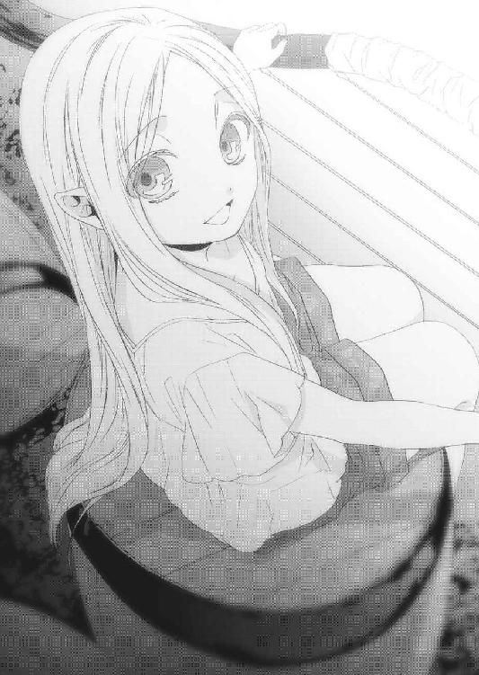
これは吟遊詩人がよく使う武器「ストリングス・ボウ」だ。
「私は、これの腕には自信があるの。それに、ちゃんと呪曲だって使える。自分の身は自分で守れるし、サポートだってできるわ」
やはり、一歩も譲らないヤヒロちゃん。
レニウスは嘆息してあたしを見た。
「どうする、ネウ。オレはお前の意見に従うよ」
あたしはもう、殆ど答えを出していた。
ヤヒロちゃんはあたしもレニウスも持っていないものを、しっかり持っている。
「レニウス、ヤヒロちゃんをあたしたちの部屋に案内して下さい」
その瞬間、ヤヒロちゃんの緊張した面持ちが、ぱっと笑顔に変わる。
「そ、それじゃ──」
「うん......一緒に行こう！」
ヤヒロちゃんはまたぽろぽろと涙を流したけど、その表情は明るかった。
その後、レニウスはヤヒロちゃんを連れて部屋に戻り、あたしは酒場でご飯を食べながらボルネさんにことの次第を話し、ヤヒロちゃんを連れて行くことを伝えた。
「そうかいそうかい、あの子がいなくなると売り上げ落ちるけど、まあ仕方ないわねえ」
ボルネさんはそう言って、笑顔になった。
「あたしヤヒロちゃんのこと、凄いと思いました。大好きな人を失って、自分の居場所がなくなったのに......ひとつも挫けないで、迷わないで、信じて、自分のやるべきことをしっかり理解して、それを実行しようとがんばってるんだから」
ボルネさんはポケットから煙草を出すと、それに火をつける。
「まるでマールだね」
はっとして顔を上げたその時、あたしの目からぽろりと雫が落ちた。
この涙は、ヤヒロちゃんが流すものと明らかに違う。
情けなくて、意気地が無くて、自分を信じられない、強さなど微塵もない涙だ。
「あはっ......ホント、あたしは駄目ですね。あんな小さな子ですら、立派に自分を持っているのに。あたしは大好きな人を助けたいのに、やってることはその反対で......魔法にも失敗しちゃうし、嫌になっちゃいます──」
突然、ボルネさんががしりとあたしの頭を摑んだ！
その表情、そのつり上がった目は、あたしの心を貫くかのようだった。
「ぼ、ボルネさん？」
「ネウちゃんは、マールにでもなったつもりなのかい？」
ドスの利いた、太い声だった。
「あたしゃあんたをチビッコの時から知っている。確かに弱くて、すぐ泣く子だったねェあんたは。でもね、あんたは泣きながらでも歩いて行く子だった。絶対に前に進んでいく子だったよ。あのヤヒロという子は、昔のあんたによく似ている。だからあたしゃあの子を放っておけなかったんだ！」
めりめりとボルネさんの腕に力がこもる。痛いけど、苦しくはなかった。
「弱くて何が悪い？ 負けて何が悪い？ みんなそうやって、ぼろぼろになりながら前に進んでいくんだ」
うん......うん......。
「何が一番ダメなのか、それは停滞することだよネウちゃん。前にも行かず、後ろにも下がらず、何もしないでただじっとしている。それこそが一番ダメなんだ。
動かないとね、水と同じで人も腐っていくんだ」
あたしは涙をぽろぽろ零しながら頷いた。
「泣きたきゃ泣けばいい。でも、足は止めるんじゃないよ。わかったかい？」
嗚咽を漏らし、鼻水も出ちゃってる。
それでも、しっかりとボルネさんから視線を外さなかった。
あたしは聖神官のくせに、本当に至らないところが多い。
でも......泣いてもいいんだ。挫けてもいいんだ。
「あたし、がんばりましゅ」
「ああ、がんばんな。今だけ見て、真っ直ぐな。結果は後からついてくるよ」
「うう......ふえ──ん......」
あたしは泣きながら、ボルネさんに抱きついた。
その時、あたしの背後から声がした。
「よっ、ダメダメドジ神官。いい格好だな！」
涙混じりで振り返ると驚きの人物がそこにいて、あたしは慌てて涙を拭いた。
マールの村で、あたしと共に魔導師リーゼと戦った盗賊、アルマだった！
「あんた......何でここに!?」
レザーアーマーを身につけ、二本の短刀を腰に下げているこの男は、アレンシア最大の盗賊ギルド、リュシオルファクルのメンバーだ。
「あん？ 仕事に決まってんじゃねぇか。お前こそどうした、マールの村の聖神官殿が里帰りか？ それとも神官をクビにでもなったかぁ？」
ぐっ、この男は......。
「さっきのやりとりでもよ、どっちが神官だかわかんねえな。このおかみさんのほうがよっぽど人生知ってるぜ！」
ボルネさんはあたしの頭から手を離すと、慌てて煙草をもみ消した。
「あんた......なかなか旨そうだね」
アルマの顔が瞬時に引きつった！
「これでもあたしゃ、まだ独身なんだけど──」
頰を染めるボルネさん......初めて見た。
「あはは、俺、用事思い出した。じゃあな！」
「待ってよ、どこ行くの？」
あたしはさらに顔を拭いつつ、席を立った。
「ネウちゃん」
ボルネさんがうわずった声であたしを呼び止めた。
「そこの男のこと、あとで詳しく知りたいんだがねぇ」
考えるまでもなく、きっぱりと即答する。
「ええ、喜んで。アルマの全てを教えます！」
「何で!?」
慌てるアルマの顔が可笑しくて、あたしとボルネさんは顔を見合わせて大声で笑った。
久しぶりに......心の底から。
「全く、冗談じゃねぇよ」
慌てて宿を出たアルマの後を、小走りで追いかけた。
「ねえ、何であんたがここにいるの？」
アルマは町の出口に向かっていた。
「仕事にきまってんじゃねぇか。リュシオルファクル経由で、女王さまからお達しがあったんだ。ディゴバ・アンダーグラウンドで聖神官と合流しろってな。それ以上は秘密だ」
......んー、やっぱり、もう一人の協力者ってアルマだったかー。
「セスコム荘のこと、ちゃんと調べた？」
「あったりまえだろ。今回の依頼はかなりの報酬らしいから......って、あ？」
アルマは足を止めて、あたしを覗き込む。
「何でお前がそれを......ってことは、コルセアから来る聖神官って、お前かぁ!?」
何故だか酷くがっかりするアルマ。
「なによー、あたしじゃいけないの？」
「いや、その、美人の聖神官が来るって聞いてたから、すっごく期待してたんだが」
............。
「むかっ！」
あたしは思い切りアルマの尻を蹴り上げた。
「いってぇええええっ！」
「美人じゃなくて悪かったわね！」
あたしは踵を返して、宿に向かって歩いた。
アルマは慌ててあたしの後を追ってくる。
「てめぇ、人の尻蹴っ飛ばして、タダですむと──」
あたしは目を細めてアルマを睨む。
「女王さまには、ディゴバでは誰もいませんでしたって報告するもん」
ぴた、とアルマの足が止まった。
「うっ......いや、その、冗談だ、悪かったよ」
「いや、美人じゃなかったから仕事を断られましたって言う」
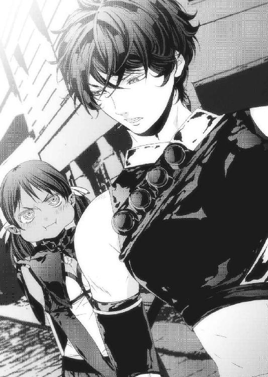
「そ、それも困るんだが」
アルマのことなんか放っておいて、あたしはすたすたと宿屋に戻る。
「ネウ聖神官どの、ネウ聖神官どのォッ!?」
困惑したアルマが可笑しくて、あたしは吹き出しながら手を差し出すと、アルマはその手を悔しそうに握った。
宿に戻ったあたしは新たな仲間、アルマをレニウスとヤヒロちゃんに紹介した。
レニウスとヤヒロちゃんはリュシオルファクルのことをよく知っており、アルマを心強い味方として歓迎してくれた。
一方でアルマはというと、あたしの連れがセレンディアの英雄レニウスと、元ソーン音楽団の看板歌姫であることをすぐに見抜き、驚きの声を上げた。
四人も揃えば立派なパーティだ。
あたしは心強い仲間たちに囲まれて、少しだけ胸が躍った。
そして、翌朝。
あたしたちはボルネさんに別れを告げ、ディゴバ・アンダーグラウンドを後にした。
ヤヒロちゃんは左胸だけを覆う胸当てを着け、スカートのように見える丈の長い、幅広のズボンを穿いていた。手には例のストリングス・ボウを、背中には矢筒を背負っている。
ちんまりしてはいるものの、そこを除けば立派な吟遊詩人だった。
アルマは盗賊らしくレザーアーマーに茶色のズボン、短刀二本のみというシンプルな格好だ。盗賊はその性質上、金属製のものは極力持たない。隠密行動を旨とする盗賊は、じゃらじゃら音を立てる装備を好まない。
馬はレニウスとあたしが持ってきたものに加え、アルマが仕事で使っていた馬もあるので、計三頭になった。
「ネウ、ここからディルギニアに向かうには、どういうルートがいいんだ？」
アルマがあたしに聞いてきた。
「ログナックとグレイウッズの国境付近を抜けるのが一番いいわ。ジェドが連邦国になってから、国境付近には極端に兵士が減ったからね。それに、レニウスの話だと夢魔は西方から来るらしいから、それを考えたら東のログナック寄りのほうが安全だと思う。
道は、あたしが覚えてるから大丈夫」
そう言うと、皆が感心したようにあたしを見る。
「なるほどな、女王さまがこの仕事をネウに依頼したのも頷ける」
レニウスが素直にそう漏らし、あたしはちょっと照れた。
「よし、ここからのルートはネウに任せよう。それと馬は三頭もあるから、一頭は荷物用でいいな。そうなると、残るは隊列だが──」
顎に手を当てて考え込むレニウスに向かって、アルマが言った。
「レニウスはヤヒロと組んだ方がいいだろ。俺とレニウスってのは組み合わせ的にありえねぇし、そもそも男同士で馬に乗るなんて気色悪くて願い下げだ」
うええ、と舌を出すアルマに、レニウスは大笑いした。
「はっはっは、そうだな、そりゃ同感だ。じゃあ前列はオレとヤヒロ、中列は荷物用の馬、後列はアルマとネウでどうだ？」
レニウスが、ヤヒロちゃんが、アルマがあたしを見る。
「え、何？」
するとアルマがあたしの頭をぐしゃっと搔き混ぜた！
「いいか、四人もいれば立派なパーティだ。パーティにはリーダーが必要だろう？ 今回の仕事はお前が受けたんだから、お前がリーダーだ！」
あ、あ、あたしが!?
「アルマの言う通りだ。オレらはあれこれ提案するが、決めるのはネウだ」
レニウスも、頷きながらあたしにそう言う。
「頼りにしてるよ、ネウ」
ヤヒロちゃんも。
「「ぴぴー」」
カナちゃんとユーちゃんまで!?
ちなみにこの二人、今じゃすっかりヤヒロちゃんに懐いて、あたしのフードには寝る時にしか帰ってこない。薄情者である。
「で、では、レニウスの案で行きましょう」
レニウスとヤヒロちゃんはにっこりと微笑んで馬に乗り、首を北に向けて歩き始めた。
あたしはアルマの背中にしがみついて、少しだけディゴバを振り返った。
「名残惜しいか？」
アルマが声をかけてきた。あたしは首を振って、アルマに答える。
「あたしは泣き虫で、未熟で、弱いくせに肩書きだけは立派だからさ、まだ合わせる顔がないんだ。だから次に来た時は胸を張ってみんなに会えるよう、がんばるんだ」
寂しくないわけはない。会いたい人がいないわけでもない。
ただ胸を張って「マールの村の聖神官、ネウです」と言えるまで、聖神殿には行かないつもりだった。
「なら、いいけどよ」
アルマはそれだけ口にすると、にかっと笑った。
「マールの村であんなことがあったから、もっと沈んでるかと思ったんだが」
あたしはレニウスにしがみつくヤヒロちゃんの背中をちらっと見た。
あの子と、ボルネさんのおかげだ。
「たとえカナクさんを倒すための旅だったとしても、ちゃんと前に進んでるってわかったんだ。だから、この旅は絶対やりとげる！」
あたしはぎゅっと、アルマの腰に回した手に力を込めた。
「ま、期待してやるわ」
アルマはにやけたまま、あまり期待してなさそうに言う。
「むかっ、見てなさいよね！」
「へーへー、レニウスの時みたいに回復魔法、しくじるなよ」
あたしは顔が真っ赤になった。
そういえば昨日、アルマとレニウスは遅くまで二人で飲んでたっけ。
「ぬあーっ、アルマもレニウスもいじわるーっ！」
そんなあたしたちのやり取りを、前の二人が振り返って笑った。
第七章・裏 スフィアとレベッカ
私はガザラ王都の地下、暗い監獄の中で退屈な時間を過ごしていた。
どうしてこんなことになってしまったんだっけ？
どうせ時間は腐るほどある。ゆっくりと、思い返してみよう。
......ああ、そうだ。初めはアレンシアに黒晶石を封印し、それからイストリアルに戻るつもりだったんだ。なのに、私はいつのまにか黒晶石を手放せなくなっていて......実体のなかった私は黒夢の力を使って砂で体を作り上げ、アレンシアを旅したっけ。
今の体では体の形を維持するだけで莫大な黒夢を消費してしまうから。
だから私は、アレンシアでも屈指のマナを持つ銀獣人に目をつけたんだ。
彼と戦って、戦って、戦い抜いて......それから、どうした？
そうか、負けたんだ。黒夢の力を凝縮した巨人を出した瞬間、それを夕闇の海の彼方に吹き飛ばされたんだ。
そして捕らえられ、ここに入れられた。
あれから......どれだけ経ったんだろう。
アレンシアに来てから、もう何年過ぎたのかも分からない。
ただ、彼はもうとっくに死んでいるだろう。
私に寿命はないけれど、彼は確か五十年程で死んでしまうはずだから。
敵だったけど、彼はとても素敵だった。
あの銀色のひと、何て名前だったっけ。
まあいっか。私の体は今やただの砂山だ。じきに意識もなくなっていくだろう。
結局、私はここで何も出来なかった。悔しいな。もっともっと、壊したかったのに。
でも、疲れたから、もういいや。
じゃ、おやすみ。
何だか、眩しかった。
これは......夢？
真っ黒に染まった子供の私が、それに手を伸ばす。次の瞬間、辺りが目映い輝きに包まれ、私は全身を引き裂かれそうなほどの激しい痛みで目を醒ました。
手が、足が、首が、体のあらゆる部分が自由に動かせる。
黒夢が、帰ってきた。
この瞬間を、長い間待っていた。
私は思わず黒夢を集めて腕を振ると、土柱が体を押し上げ、一気に地上へと躍り出た。
さすがにまだ体と黒夢の操作がおぼつかない。
当たり前といえば、当たり前か。
ふと目を落とすと、何やら兵士たちに囲まれた二人組が目に入った。
一人は気の強そうな人間の女。
もう一人は、なんと銀色の彼だった。
そうだ。彼の名前、思い出した。
あんな牢獄に、この私を閉じ込めた男の名前......セリオだ。
私は邪魔な女を柱に埋め込み、八つ裂きにしてやろうかと思った、その時だった。
「おや......これはまた、随分と好都合な......」
私は思わずそう口にしてしまった。
娘の中に、微かな生命の微動を感じたのだ。
聞けば、この娘はその銀獣人スフィアの妻だという。
私は瞬時に長年考案していた策を出した。
暗い牢獄の中で、私は色んなことを考えた。
いくら力を持っていようと既に成人した銀獣人では魔王にはなれないのだ。
黒夢を操ってやろうという覚悟が足りないから。
だからこの娘に銀獣人の子供を産ませ、その子を立派な魔王に育て上げる。
それが最も確実で、確率の高い方法だろう。
私はもがきあがく娘をそのままに、ふわりと銀獣人スフィアの前に降り立った。間近で見た彼は本当にセリオとそっくりだった。
「念のため、あなたを試させてもらおうかしら。多分、駄目だと思うけど」
私の言葉に、スフィアが苦しそうに呻く。
「最後に何か、言い残すことはある？」
既に傷だらけだったスフィアは、その瞳を弱々しく私に向けた。
「彼女は......レベッカだけは......たすけて......ほしい」
「あなたが大人しくしているなら」
「ほ、本当か？」
「噓だとしても、あなたにはどうにもできないでしょ？」
スフィアの苦悶の表情が、実に愉快だった。
「彼女とお腹の子供の命が惜しければ、せいぜい動かないことね」
その時、スフィアの瞳に少しだけ力が戻った。
「こ、子供？」
「あら、知らなかったの？ あの娘には、新たな命が宿っている」
スフィアは何を思ったのか、口許を少し緩めた。
「そっか......なら、思い残すことはない。約束は、どうか守ってほしい」
「ふふ、いいわ」
私は懐にしまってあった黒晶石を、無理矢理スフィアに握らせた。
「あ......おああああああああああああああああああああああああああああッ！」
黒夢の力が肉を裂き、骨を軋ませ......体中から黒いオーラが噴き出した。
過去に、私はこうやってあらゆる者に黒晶石を持たせてきた。
でも、皆この反応を示し、誰一人として助からなかった。
このスフィアも、やはりその例には漏れなかったようだ。
「スフィアぁあああっ！」
背後から悲痛の叫びが聞こえた。気持ちいい。
「うお、おおおっああああ、れ、べっかあああああああああああああっ！」
朦朧とした意識の中で、それでも生気のない瞳を必死にあの娘に向ける。
大事な黒晶石をもぎ取ると、スフィアは支えを失った苗木のようにくたっと倒れた。
「あーあ、やっぱり駄目だった」
さようなら、銀獣人スフィア。
「り───────────ぜぇえええええええええええええええっ！」
その激高した叫び声で振り返るといきなり顔に衝撃が走り、その凄まじい力に私は地面を抉りながら吹き飛ばされた。
あの娘、やはりただ者じゃない。何か秘密がありそうだけど、あの娘ならば私が望む完璧な者を産み出せるかもしれない。
淡い期待を胸に、私はその娘を連れてその場を去った。
レベッカはこちらの思惑通り私を憎み、恐れ、そしてスフィアの子供を産んだ。
子供の名は希望という意味を持つ「カナク」だそうだ。
いい名だ。私の希望のために、せいぜい立派に育ってもらいたい。
レベッカは私を恐れ、カナクをセレンディアという町の養育施設に預けた。
脅しが利いたようだ。両親を知らない子供は家族への情が薄いので、世を捨てさせるにはお誂え向きだ。
図らずもこのレベッカという娘は、私の思い通りにさせじとあれこれやっていたが、それは全て私にとって好都合なことばかりだった。
そしてレベッカはオリヴィアと名を変え、戦場を駆けめぐる。
それが私を倒し、スフィアの敵を討つ力をつけるためだということはお見通しだ。
私を探し出すための情報網を作り上げようとしていることも、知っている。
そう、私はいつも彼女の側にいたのだから。
銀獣人カナクを、黒夢の魔王に。
計画は着々と、そして順調に進んでいた。
第八章・表 道
ディゴバを出立して、五日が過ぎた。
ジェドは常に雲で覆われている国なので、必然的に雨が多くて蒸し暑い。
木々にはびっしりとシダ植物が絡まり、根元やその周りの岩にはびっしりと苔が生えている。しとしとと降る雨は辺りの静寂を強調するかのように、優しく土に溶けていく。
切り立った崖の間を、勢いよく流れる川にかかった橋を、長い年月を掛けて水が削った石段を越え、あたしたちはひたすら北へと向かった。
ひんやりとした空気、肌に染み込む湿気、昼なお暗い森。
ダークエルフの血が、懐かしき故郷の匂いを感じて沸き立っていた。
「ネウ、今日はあそこでどうだ？」
レニウスが左手に洞窟を見つけ、指さした。
「うん、あそこなら火を熾せそうですね！」
あたしのその一言で、今日の寝床は決まった。
洞窟は丘の斜面に口を開ける形で存在し、馬五頭分くらいの高さがあった。
中は当然暗かったけど、中央に泉があり、その周囲は平たく開けているという、キャンプするには実に手頃な場所だった。
「何か、出来すぎた洞窟だね」
ヤヒロちゃんは両肩にカナちゃんとユーちゃんを乗せたまま、馬から下りた。
あの二人、日中はあたしよりヤヒロちゃんのそばにいることが多くなった。
でも眠くなると、あたしのフードに戻ってくる。
あたしは動くベッドのような存在になっていた。
「出来すぎて当然だろ。ここは天然の洞窟じゃない。奥を見てみろ！」
アルマが洞窟の奥を指さして言った。
「「「あっ！」」」
あたしたちは思わず揃って声を上げ、それぞれ武器を手にした。
どこからか持ってきた大量の藁の上に、猫のように丸まっているそれの体軀は、ちょっとした平屋の建物くらいある。
コウモリのような翼と六本の足をたたみ、蛇のしっぽとライオンのたてがみが天井から垂れてくる滴に濡らされていた。
上級魔獣、マンティコアだった！
「ってことは、ここはマンティコアの巣か！」
レニウスはヤヒロちゃんを背中に庇って、剣を抜く。
そんな二人を後目に、アルマは馬を下りてマンティコアに近づき、たてがみをかき分け始めた！
「あ、アルマ、危ないよ！」
「危ないわけがあるか。見ろ」
アルマが探し当てたのは、たてがみの中に隠された白い仮面だった。
「驚いたな、これも〝眠りもの〟か!?」
レニウスは剣を納め、アルマに近づく。
「ああ。そうでなきゃ俺たちが巣に近づいた時点で、襲われてる」
な、なるほど。そういうところは、さすがだ。
「それじゃあ俺は馬を見てくるから、そっちはキャンプの準備を頼む。あと、ヤヒロにも仕事をやるから付いてこい」
アルマは返事を待たず荷物を下ろすと、馬を連れて餌をやり、蹄のチェックを始めた。
レニウスは小型テントを手にして手頃な場所を探し、あたしはアルマが置いていった荷物を泉のほとりに運び、調理器具を出して泉で洗った。
ふと顔を上げると、ヤヒロちゃんが何食わぬ顔で眠るマンティコアの許へ行き、敷いてあった藁をアルマのそばに運んで馬に与えている。
小さいのに度胸があるけど、あの子にあんな仕事をさせるとは......相変わらずアルマは容赦なしだ。
そうしてそれぞれの仕事をこなした後、みんなで焚き火を囲んで夕食をとった。
今日のメニューは泉で捕った目梨魚の塩焼きに、特製キノコのサラダだ。
「またキノコ......俺、ここに来てからキノコばっかりなんだが......」
アルマがげんなりした様子で愚痴をこぼす。
「仕方ないでしょー！ まだまだ保存食には手を出したくないし」
あたしはこのパーティで食材管理担当なので、文句は言わせない。
「それよりアルマ、ここまでこんなに落ち着ける時間がなかったから聞かなかったが、そろそろディゴバで何を摑んだのか、話してくれてもいいんじゃないか？」
レニウスがそう訊ねると、アルマの目つきが変わった。
「さすがにドジ神官と違って察しがいいな」
あたしは何も言わずにアルマの背中を蹴る。
「お、俺はディゴバで、仲間から情報を買ってたんだ」
アルマはあたしに抗議の目を向けたけど、無視して続けた。
「どんな情報？」
「これから向かう先、ディルギニアのセスコム荘についてだ。なあネウ、お前は女王さまに何て言われた？」
あたしはレニウスとヤヒロちゃんと、交互に視線をかわす。
ちなみにヤヒロちゃんには道中、あたしたちがコルセアの女王さまから受けた依頼の内容は伝えてある。
「ええと、確か、ディルギニアのセスコム荘の中に銀獣人の隠れ村があるから、ディクトという人に手紙を渡してほしい、だったかな？」
アルマは懐から使い古された手帳を取り出すと、ぱらぱらとめくって、あるページに差し掛かるとその手を止めた。
「俺が受け取った依頼書と大体同じだな。その文章、おかしいと思わないか？」
「え、そ、そうかな？」
アルマはにやりと笑って嘆息する。
凄く、イラっときた。
「お前はともかく俺は引っかかったんだ。別荘の中に村があるってのは妙だ、とな」
そう言われて、はたと気づいた。
よく考えてみれば、確かにおかしい。女王さまは隠れ村にあるセスコム荘ではなく、セスコム荘の中にある隠れ村って言った。
「そこで俺は密かにギルドに依頼を出し、ディゴバで落ち合うことにして、セスコム荘に詳しい奴から話を聞くことにしたんだ」
リュシオルファクルが重宝がられるというのは、こういう面があるからなんだろう。
その情報網は味方にすれば心強いけど、敵に回せばとんでもないことになりそうだ。
「セスコム荘は昔、アレンシアの三分の二を支配したフリーレンの氷公ディルギノの別荘で、夏でも雪が降る大氷山脈において、その地下の地熱を利用した場所にあるわ。地上四階、地下三階のすっごい広くてお金のかかった邸宅で、さらにその下は広い洞窟と繫がってて、そこを抜けると聖域って呼ばれる場所があるんだって。隠れ村って、そこ？」
それを口にしたのはアルマ......ではなく、何とヤヒロちゃんだった！
「な、な、何でそれを!?」
呆気にとられるアルマに、ヤヒロちゃんは平然と微笑む。可愛い。
「音楽に国境はないからね。ソーン音楽団はアレンシアでいちばんの楽団だもん。ディルギニアでも演奏したことがあるんだよっ！」
肩を落とすアルマ。
アイデンティティとか、立場とか、いろんなものがピンチだった。
「この情報、高かったのに......」
「まあかわいそうなアルマ、元気をだして！」
声をかけるヤヒロちゃんだったけど、あきらかに逆効果だ。
「寝る」
よろよろふらふらと、ゴースト化したアルマがテントに向かう。
「あっ、まって。私も寝るー！」
ヤヒロちゃんがカナちゃんとユーちゃんを肩に乗せ、ストリングス・ボウを片手にアルマの背中を追っていったその時、ふわりと、柔らかな熱気が頰を撫でた。
あたしは黒い気配を感じ、咄嗟にワンドを手にして洞窟の入り口に目を向けると、雨に打たれ、ローブを濡らしたリリルが立っていた。
「リリル......」
あたしのその声でレニウスは深く嘆息すると、剣を片手に立ち上がった。
アルマもヤヒロちゃんもあたしとレニウスの隣に戻り、洞窟の入り口に佇むリリルに注意をむけた。
「リリル、お前はオレの命が欲しいのか？」
静かに対峙する、かつての親友同士。レニウスの表情は見えなかったけれど、伏し目がちのリリルは悲しげだった。
「れに、うす......なぜ、にげたの......」
か細い声で、聖剣を握りしめて聞くリリル。
「そんなもの振り回しながら襲ってくれば、誰だって逃げるだろ」
レニウスは鞘からロングソードを抜く。
「そうじゃ、ない！」
固唾を飲んで見守るあたしたちの前で、二人が剣を構えた。
「あた、しは......あ、んたを、あきらめて、あげない、もん。今までも、これ、からも、ずーっと、いっしょに、いたいから......」
洞窟内に、熱気が広がっていく。
凄まじい力だった！
「あんた、を、たおして、ひとつに......なる！」
リリルが地面を蹴り、聖剣をレニウスに向かって振るう。
レニウスはそれを剣で受けたけど、リリルの力に体ごと弾き飛ばされた！
「レニウス！」
あたしはアルマと一緒にレニウスのところへ行った。
「大丈夫ですか？」
「ああ。だが......凄い力だな」
レニウスは手を振り、痺れを抜く。
「二人なら、なんとか抑えられるか？」
アルマはリリルを睨みながら、短剣を両手に構える。
「やってみるしかなさそうだ」
レニウスに迷いはなかった。
「あいつがお前の言ってた親友で、好きな女なんだろ？ 本当に斬れるのか？」
レニウスがリリルに向かって剣を打ち込むと、今度はリリルが後退する。
「女に斬られて死ぬのは男として本望だが......まだやりたいことがあるんでな」
リリルは剣を両手に持ち替え、険しい目つきでレニウスを睨みつけた！
「なんで、あたしのきもちを、うけとめて、くれないのよ！」
リリルの激しい攻撃が、レニウスだけを襲う。
腕が、太股が斬られ、血が水溜まりにぽたりと落ちる。アルマも割って入るけれど、なかなか隙が突けず、レニウスへの致命傷を避けてあげるのが精一杯だった。
「くっ......ネウ！」
「はい！」
アルマの声に、あたしは既に魔法陣を描き上げていた。
「虹の斬光」
魔法陣がバッと輝くと、アルマとレニウスの武器が金色に輝いた。
「おおっ、いい魔法知ってんじゃねぇか！」
二人に、あたしは更なる魔法陣を描きながら叫ぶ。
「その残光は斬撃になるから、手数が増えたと思えばいいわ」
「知ってらぁ！」
アルマが斬りつけ、リリルはそれをかわして反撃しようとした。でも、リリルが体を前に進めた瞬間アルマの斬光に触れてしまい、腕を切った。
「おお、しかもなかなか効果が高い！ やるなお前！」
褒められたのは嬉しいけど、傷つけたのがリリルだと思うとやるせない。
こんな戦い、早く終わらせないといけないんだ。だからあたしは、自分が知る魔法の中で最も強力なものを選び、魔法陣を描き始めた。
それを察知したのか、リリルはレニウスの剣をかわし、アルマを蹴り飛ばしてあたしに向かって走ってきた！
「しまった、ネウっ！」
レニウスは慌てて声をかけてくれたけど、あたしはもう魔法陣を描き始めている。ここで回避行動をとれば、また魔法の暴走を引き起こすだろう。
あたしは集中を切らさず、魔法陣だけを意識し続けた。
そこへリリルの折れた橙色の剣が振り下ろされ──そうになったところで、あたしの後方から凄い勢いで何かが飛んできて、リリルの剣を弾いた！
それは、一本の矢だった。
剣は回転しながら宙を舞い、あたしの右手、泉のほとりに突き刺さった。あたしはあまりの威力に思わず集中を切らしかけ、リリルは視線をあたしの背後に向けた。
「あ......うう......」
リリルが呻き、顔に恐怖の色が浮かぶ。あたしは背中に氷の塊を押しつけられたような悪寒に襲われた。
目で見なくても、それが誰から発せられたものなのか、手に取るようにわかる。
「ネウには、指一本触れさせないよっ！」
ヤヒロちゃんだった。
彼女の小さな体、放たれた矢から、尋常ではない量のマナを感じたのだ。
呆然とするリリルと、アルマにレニウス。
凍った時間の中で、あたしのワンドだけが宙を走る。
リリルがいち早くそれに気づき、聖剣に向かって走り出した。
その隙にアルマとレニウスがあたしの前にやってきて、リリルに剣を向ける。
そしてリリルがフレイムウォーカーを手にした時、一足早くあたしの準備が整った。
「加重の魔法！」
ワンドを魔法陣に突き刺すと、それは三本の光線となってリリルを襲う。
その速さに避けることもままならず、リリルはまともに光に穿たれた。
「な、何をしたんだ？」
訝しむアルマに、答えた。
「リリルの体と剣を、三倍重くしたの」
これで、リリルのスピードもパワーも十分に活かせなくなった。
こちらは傷ついているとはいえ前衛を守る戦士レニウスに、速さでは誰にも負けない盗賊アルマ、そして謎のマナを持つ吟遊詩人ヤヒロちゃんが揃っている。
「れにう、す......」
リリルは重くなった聖剣を引きずり、あたしたちに背を向けて呟く。
「あ、たし、あきら、め......ないから！」
そしてローブと淡緑色の髪を翻し、リリルは洞窟の外へと逃げていった。
それからあたしたちは安眠を断念し、すぐに荷物をまとめ始めた。
リリルが、またここを襲うかもしれないからだ。今回はみんな起きていたし、調子も良かったから何とかなったけど、次も同じようにうまくいくとは限らない。
アルマとヤヒロちゃんはテントをたたんだり、食器を片づけたり、焚き火を消したりと大忙しだ。カナちゃんとユーちゃんですら小物の整理を行っている。
あたしは傷ついたレニウスに前と同じように魔法をかけ、薬を塗った。焼刻傷の魔法は熱傷と同じ種類の傷なので、早めに処置をしないと跡になりやすいのだ。
「なあネウ、あんなリリルは今まで見たことがない。あれは、本当にリリルなのか？」
レニウスの疑問はもっともだった。
あたしだって、あのリリルの変貌ぶりは不思議に思ったから。
「おかしいとは思いますが、リリルがレニウスを大好きなのは確かだと思います」
「......無理だときちんと伝えたんだけどな」
「どうしても、リリルとお付き合いすることは出来ませんか？」
レニウスは裸の上半身を持ち上げ、あたしに鋭い視線を向けてきた。
「オレだって、出来ることならそうしたいさ。でも──」
「その先は以前聞きました」
ぐっ、と唇を嚙むレニウス。
「それをふまえて、二人で生きていく道はないんですか？ 本当にリリルが決断したように、二人が死ななければ一緒になれないんですか？」
あたしは薬箱に軟膏を入れながら続けた。
「レニウスが逃げるから、リリルはあんなに思い詰めちゃったんですよ。あんな悲しそうなリリルを生み出したのは、レニウスです」
あたしは感じたことを素直にレニウスにぶつけてみようと思った。
だってレニウスは、間違ってるから。
「だがオレには、セレンディアの闇からリリルを守る自信がない」
そう言ってうなだれるレニウスは、すっごく格好悪かった。
「じゃあ、セレンディアから出て行っちゃえばいいじゃないですか」
「な、に!?」
レニウスは驚愕の表情を浮かべ、弾かれたようにあたしを見た。
「......そうか、リリルの望みはそれか......」
顎に手を当て、泉のゆらめきを見ながら自問するレニウスにさっきの弱々しさは微塵もなく、うってかわって真剣な面持ちだった。
「レニウスはセレンディアに縛られすぎて、大事なものが見えてないんですよ」
「大事なもの？」
「そうです。すなわち、レニウスにとって何が一番なのか、です」
きっとレニウスは、今までそれを考える余裕がなかったんだろう。
「あたしリリルの気持ち、わかる気がします。大好きな人が周りばかりを気にして、どうすれば一緒にいられるのかを考えてくれない。それは、もどかしいでしょうね」
レニウスは、ただ黙ってあたしの話を聞いていた。
「カナクさんはユーリエさんが大好きで、ユーリエさんにもう一度会うために世界を敵に回して、眠りものをいっぱい作っています。それは間違っていると思うけど、それくらい強くユーリエさんを想うカナクさんは、やっぱり素敵だと思います」
刹那、マールの村での光景が鮮やかに蘇り、涙腺を刺激する。
でも、いまはレニウスの話だ。
あたしは涙をこらえ、レニウスに告げた。
「リリルのこと、はっきりさせてください。リリルの選択は極端ですけど......どちらかといえばあたしは、リリルを応援したくなります」
「おいおい、それはないだろ」
レニウスがふっと笑うと、あたしも笑顔になった。
「少なくともレニウスよりは前向きです。全力でレニウスにぶつかっていってます。本当に、リリルはレニウスが大好きなんですから」
「ああ、わかったよ」
レニウスは立ち上がった。
その全身から力強いマナを感じる。
「オレはリリルのそういうところに惚れたんだからな」
拳を握りしめるレニウスに、あたしは笑顔で何度も頷いた。
「ありがとう、ネウ。おかげで目が覚めた」
そしてあたしの前で剣を抜くと、柄を胸に当てて叫んだ。
「我、レニウス・セレンディアは次にリリルに会った時、この想いを全力であいつにぶつけることを誓う......これでいいか？」
うん、とっても格好良いレニウスだ。
「それでいいんです」
あたしたちは笑い合った。
「よーし、なんだか元気が出てきた。アルマたちを手伝って、早くここを出よう！」
「はい！」
レニウスが剣を納めてアルマのほうへ歩こうとしたまさにその時、あたしはギクッとして足を止めた。
あたし今、レニウスに何て思った？
......マナを、感じる？
ともすればあっさり見逃してしまいそうなその言葉を、かろうじて摑み取った。
それが、リリルと対峙した時の、妙な違和感へとリンクする。
このアレンシアに生きるものや大自然には、強弱はあるけれど必ずマナの力が宿る。
ヤヒロちゃんのマナ。
アルマのマナ。
レニウスのマナ。
では、あたしはあのリリルから何を感じた？
その瞬間、複雑に絡まり合ったものがするすると解け、ぴしりと一本の線になったような気がした。
あのリリルは......ひょっとして......いや、でも、そんなことが？
「ん、どうした？」
レニウスがあたしを見ていた。
「あ、いえ、何でもないです」
確証がない今はまだ、何も言わないほうがいい。
あたしは頭を振って、レニウスの後を追った。
第八章・裏 マールの石碑
カナクが育つまで退屈だった私は、これを機にアレンシアを見て回ることにした。
私は各地を巡り、様々な者たちから情報を集めた。その中でも興味を引いたのは、このアレンシアではマールという神を信奉する者が非常に多いことだった。
それは暁の賢者と崇められ、場所によっては紅の魔女として恐れられ、各地にその存在感を残している。アレンシア人の精神的支柱になっているこの人物を知ることは、決して損にはならないだろうと思い、小さな教会に通ってマール教典に目を通した。
人々から蔑まれながらも善行をやめなかったことが、後の暁の賢者を生んだらしい。
まあ、ご立派なことだ。
退屈極まりないその本を溜め息混じりで読み進めていたが、ある部分に差し掛かると、私は弾けるように身を起こした。
マールは旅の後半で十日ばかり意識を失い、その後マールは訳のわからないことを言い出したという。
著者であるノートリアスはそれが理解できず、それを次のように記している。
「私は、全てを思い出した！」
マールはいきなりそう言うと、それまで浮き草のように目的地を定めず旅をしていたのに、突然ひとつの方向に向かって歩き始めた。
ここまでの旅で、マールは街道を逸れることがほとんどなかった。老齢で足腰も弱っていたマールには、険しい道が耐えられなかったのだろう。
ところがその日を境にマールは草をかき分け、岩を登り、川を渡り、ただ一カ所を目指して真っ直ぐに歩き始めたのだ。
「マールよ、一体どうしたというのですか？」
僕が彼女にそう問いかけると、マールは今まで見たこともないような表情でこう言った。
「彼にどうしても伝えなければならないことがあるの。残さなければならないものが！」
どうやら十日間眠っていた間に、マールは何かを思い出したらしい。
マールはそれ以上何も言わず、僕もそれ以上は聞かなかった。
僕はマールがどこに向かっていようが、その助けを出来ればいいのだから。
──マール教典第八章──
この章からのマールは何かしっかりとした目的を見つけ、それに邁進し始めている。
その唐突な展開に、私は妙な引っかかりを覚えたのだ。これは何かあると直感した私はその答えを求め、マールが各地に残した石碑を見て回った。
石碑の内容は取るに足らない、つまらないものだった。
全ての石碑を巡り終えた私は無駄足だったと後悔したが、ヴァスト山脈の奥地にマールの石碑と同じマナの反応があることに気づくと、霧消した好奇心が再び胸に戻ってきた。
四つの石碑に、続きがある？
私はその反応を示す場所へ足を向けると、そこで古びた遺跡を発見した。人の気配は全くなく、どうやら何百年も人の手が入っていない場所のようだ。
それでも何故か、その遺跡からはまるで執念のような魔法と強烈なマナの力を感じた。
遺跡の中に入ると、突然古びて赤黒くなったドレスを着た小人に襲われた。
私は難なくその小人を捕まえ、ひと思いに捻り潰してやろうと手に力を入れたその時、私の目に石碑が飛び込んできた。
私が感知したのはこの石碑だったのだ。
だがこの石碑は、何をしても文章が開かない。途方に暮れて辺りを調べると、古びた本と石碑巡りの腕輪を発見した。
そして腕輪に刻まれた文章と五つ目の石碑を読み、思わず笑いがこみ上げた。
マールは、現代人だったのだ。
そして彼女が、誰にこれを残したか。
奇しくもそれは、カナクだった！
銀の獣でカナクという名を持つ現代人など、二人といないだろう。
時を超えた愛。
カナクとユーリエ。
この二人を、何とか結びつけねばならない。
瞬時に私の中で物語が作られていく。普通に考えて、外界から隔絶され陸の孤島と化したこの場所に、カナクが到達することは出来ないだろう。
少し仕掛けをしてやる必要がある。
私は二人がどういう旅程で石碑巡りをするのかを考え、ジェドにあるディゴバの石碑に瞬間移動魔法を仕込み、五つ目の石碑の場所へ飛べるよう細工を施した。
そして私は、次なる地へ向かった。
第九章・表 道
結局その日は眠ることなく、夜を徹して北へと急いだ。
ヤヒロちゃんと草人たちだけはアルマの馬で寝てもらったけど、ずっと馬に揺られていた上に紐で縛られていたので、寝起きの顔は酷いものだった。
それでも、冒険者であればこんなことは日常茶飯事であり、何日も眠れないことだってざらにある。だからこそ睡眠と食事という生命維持の基本を定期的にとれるということがいかに大事かということを、日頃から色んな人に教わってきた。
もっとも末期的な冒険中毒になると、この寝不足感が逆にいいらしいけど、それは特殊な例だ。リリルがどこに消えたのかはわからないけれど、さすがに翌日は日が暮れる前にキャンプをして眠った。あたしたちは平気でも、馬がもたないからだ。
幸か不幸か、ジェド連邦国内で魔物とはほとんど戦闘にならなかった。
そして道中、ずっとストリングス・ボウを手に楽器の練習をしていたヤヒロちゃんが、いきなり「快足の呪曲」という曲を覚えたことが、この旅を決定的に楽にしてくれた。
冒険者には様々な職業があり、それぞれ存在意義のようなものがある。
神官であるあたしは治癒系魔法。盗賊はトラップの発見、罠の解除、それに素早さを活かした支援系攻撃。戦士は強靭な肉体とあらゆる武器を使いこなす力がそれにあたる。
では吟遊詩人は何かというと、前衛系職業や後衛系職業を全般的に支援できる「総支援系職業」なのだ。
剣を持てば前でも戦えるし、ヤヒロちゃんのように弓矢で後方からの攻撃も可能だ。
そして何より「呪歌・呪曲」の存在が大きい。
魔術師の魔法に匹敵するそれは、ほんのわずかなマナで発動できる。効果を発揮し続けるにはずっと演奏していなければならないという致命的な欠点はあるものの、それは本当に便利なものだった。
ヤヒロちゃんが覚えた「快足の呪曲」は、馬やあたしたちの走る速度を引き上げてくれるものだった。ヤヒロちゃんがマナを込めて弦を弾き、美しい音色があたしたちを包み込むと、突然馬の速度が上がったため、危うく全員で木に激突しそうになった。
でもそれは最初だけで、あたしはこれだけの速度が出せるなら広い街道を一気に北上しようと提案し、かくしてあたしたちは隘路から走りやすい街道へと身を移し、ディルギニアに向かって一気に駆けた。
そしてその日の夜、あたしたちは目標にしていた箇所を大幅に越え、廃墟となった砦の中でキャンプすることにした。
火を焚き、そこで食事を済ませると、まずレニウスが真っ先に大きな木の下に張ったテントに入り、続いて一日中演奏しっぱなしだったヤヒロちゃんが「おやすみ」の一言を残して姿を消した。
残ったのはあたしとアルマ、それに二人の草人だった。
「「ぴぴー？」」
ヤヒロちゃんが眠ってしまったせいか、カナちゃんとユーちゃんはそう言って久々に、本っ当に久しぶりにあたしの膝に乗ってきた。
あたしは胡乱な目つきで二人にどよどよした空気を落とす。
「............」
「「ぴ？」」
そしてこの二人の、コイン一枚分しかない小さな胸を突く一言を口にする。
「二人とも、浮気者っ！」
「「ぴゃああっ！」」
カナちゃんとユーちゃんは慌てて首を振り、あたしの肩に飛び乗って頰ずりしてきた。
「おいおいネウ、まさかヤヒロに嫉妬してんのか？」
アルマが短剣を手入れしながら、呆れていた。
「だってこの二人さ、ヤヒロちゃんをパーティに加える前はずっとあたしのフードにいてくれたのにさ。今じゃヤヒロちゃんべったりなんだもん」
カナちゃんとユーちゃんは額から汗を垂らし、ぴーぴー言いながら弁明している。
「ちび同士、波長が合うんじゃないか？」
「そういう問題じゃないもん」
ぷーっと頰を膨らますあたし。
「はー、ヤヒロより子供だな......」
「あの子は出来すぎてるだけよっ！」
ぴたり、とアルマの手が止まる。
「そうだな、あいつは出来すぎだ。いくらあのソーン音楽団にいたやつだからって、あのマナは尋常じゃない」
アルマの言葉で、あたしは洞窟での一件を思い返した。
「あのリリルって女の強さと速さ、それに折れているとはいえ聖剣フレイムウォーカーの力は本物だ。俺もレニウスも散々苦戦したあの剣を、ヤヒロはいとも簡単に弾いた。それも、剣を弾くほどの力でだ」
これまで口にしなかったけど、アルマも気になってたんだ。
「正直言って、あいつの得体の知れない部分は怖ぇな」
アルマが珍しいことを言った。
「ヤヒロちゃんは、とってもいい子だよ」
「わかってる」
ぱち、ぱちと、小気味良い音が耳を擽り、焚き火の明かりがあたしとアルマの影を揺らす。カナちゃんとユーちゃんはあたしの膝で泣き疲れて眠ってしまった。
久しぶりに、アルマと二人っきり......。
変な空気が、あたしたちの間に流れた。
「この仕事が済んだら、お前はどうすんだ？」
アルマが短剣を手入れしながらそう言って、ごろんと寝ころんだ。
「まずは、ミスティカに行くよ。以前、カナクさんに聞いたことがあるの。ミスティカに、銀獣人がいるかもってね。そこを訪ねてみようと思ってる」
その時は今みたいな賑やかな旅じゃなくて、一人旅になるかもしれない。
あたしがアルマの顔を見ると、何故かアルマは目を背けた。
正直に言えばアルマと一緒にいるのは本当に心強いし、何より楽しい。でも、これまでアルマには散々助けられてきたんだから、甘えるわけにはいかないよね。
「さてと、ディルギニアはもうすぐなんだろ？ とっとと寝るぞ！」
アルマが突然、声を荒げて言った。
「う、うん」
あたしは夜の番をカナちゃんとユーちゃんに任せることにした。この子たちは昼にさんざん寝ていたので、一晩くらいは大丈夫だろうと考えたからだ。二人はそれぞれテントの上にちょこんと乗ると、任せとけと言わんばかりに胸を叩いた。罪滅ぼしかな？
そしてあたしとアルマは、テントの前に来た。
「じゃあね、おやすみ」
「あー、また明日な」
挨拶を交わしてテントの入り口を開いた時、驚きの光景が目に飛び込んできた。いつもならあたしとヤヒロちゃんが寝ているテントに、レニウスとヤヒロちゃんがいた！
「あれ......あれぇ？」
二人は寝袋に入り、既に寝息を立てている。
テントは小型なので、二人が横になったらもう入る場所なんか、ない。
「ああう、困ったー」
あたしがアルマのほうに目をやると、アルマもテントを覗いて異変に気づいたようだ。
「ったく、しょうがねえな」
アルマがあたしに向かって手招きした。
「こっちに来いよ」
うえ？ うえええ、えええええ!?
「あ、えと、その......」
相手がカナクさんなら喜んでお誘いを受けるところだけど、アルマじゃ......どうしよ。
「バカ、何もしねぇよ。そんなに気になるなら外で寝ろ。じゃーな」
そう言われると、なんかカチンとくる。
「い、いいよ。あたし、テントで寝る」
......防護系魔法でもかけといたほうがいいかな？
でも、そんなことをしたらテントを追い出されかねない。
アルマなら、絶対にそうする。
「んじゃさっさと来い」
アルマはすっと首を引っ込め、テントに消えていった。
「うん......」
むう、アルマを男として意識はしてないけど、あたしは女の子だ。
とはいえ外で寝るのはやだしなあ。
......よっし。
あたしは意を決し、テントに入った。
アルマは既に寝袋に入り、あたしが使う寝袋に背を向けて横になっていた。
あたしはそーっとアルマの横に座り、寝袋を広げて中に入った。
「なあネウ」
いきなり声をかけられ、体をびくんと震わせた。
「なな、なに？」
「お前、あのバカ神官を救いたいんだよな？」
意外なことを聞かれて、少し面食らった。
「当たり前じゃない。だって、あたしはカナクさんが好きだから」
少しだけ、沈黙がテントの中に広がった。
あたし、何かおかしなことを言っただろうか？
「マールの村でリーゼが言ってた黒夢のこと、覚えてるか？」
アルマは眠そうな声で続ける。
「うん、覚えてる。アレンシアの人たちが見る悪い夢の力だって、リーゼは言ってた」
「そうだ。じゃあよ、アレンシアの連中が見る幸せな夢は、何の力も持たないのか？」
あたしは思わず寝袋を蹴飛ばして体を起こし、横のアルマを見た。
アルマは両手を頭の後ろに乗せ、上を眺めていた。
「黒夢と対なる力はマナだけじゃねぇと思うんだ。その力こそが、黒夢の魔王になっちまったアイツを救う鍵なんじゃねぇか？」
アルマはあたしに視線を向け、にっと笑った。
「早い話が、お前はもっと笑えってことだ。やっぱ女の子は笑ってないと、どんなに元が良くても可愛くねぇ」
あたしはそんなことを言うアルマに、自然と口許が緩んだ。
「うん......笑えるように、がんばるよ。ありがとう」
アルマはふいっとあたしに背を向ける。
あたしも横になり、心地よい眠りに身を委ねた。
それから三日後、あたしたちはアレンシア北部、大氷山脈に着いた。
「わあ、雪～～！」
「「ぴーっ！」」
ヤヒロちゃんと草人たちが、空から降る雪にはしゃいでいた。
吐息がまるで揺蕩う雲のように軽やかに舞い、ほどけていく。真っ白い綿のような雪が大地や木々に積もり、銀色の化粧をほどこしている。日の光が乱反射してきらきらと輝く険しい山々が、まるで巨大な砂糖菓子のようだ。
ここ大氷山脈はその名の通り、氷でできた山の連なりなのだという。実際に来たのは初めてだけど、まるで夢でも見ているかのような、神秘的な光景だ。
アルマが谷間にある狭い下り坂の先を指さして、静かに言った。
「あれだな」
その坂の下は渓谷になっており、湯気をまとった水しぶきがあたしたちの行く手を遮っている。坂はそれなりの広さを有しているが、それでも馬車一台通るのがやっとだった。
渓谷からの噴煙や湯気があちこちで冷えて固まり、針山のように尖っていた。
「情報によると、この坂の下に大きな洞があり、その先にセスコム荘がある」
アルマは坂の下を指さして言う。あたしはみんなに頷いて、坂道を下りていった。
その洞窟は、とても幻想的だった。
剣のように尖った岩が天井から伸びている鍾乳石と相俟って、まるで巨大な口の中に入っているような錯覚に陥る。辺りの岩肌には薄い緑の苔が生え、血管のような土色の蔦が洞窟じゅうに這っていた。氷と岩、土と水、光と影が絶妙に混じり合い、天井からは鍾乳石と氷柱が天然のシャンデリアのように垂れ下がる。
目の先には地熱で温められた湖がきらきらと輝いていた。
湖の真ん中にはくねくねと曲がった道が奥へと続く。まるで大蛇が洞窟の奥に頭を突っ込んでいるようだ。
あたしたちはその道を慎重に進む。歩くにつれ、仄かに暖かな空気が風に乗って届いてくる。やがて目映い光が見えてくると、目の前に広がったその光景に愕然とした。
「な、何これ......」
洞窟の奥は、日差しに照らされた広場になっていた。四方は人工的に切り取られた岩壁になっており、真上から見るとちょうど六角形になっている。天井はなく、見上げると雲の流れまでもが目に入ってきた。
広場の中央には木々に囲まれた立派な邸宅......だったものが顔を覗かせ、その周辺は荒れに荒れていた。柵は倒され、花畑は踏みにじられ、炭になった巨木が横たわる。
セスコム荘は、廃墟と化していた。
あたしたちはそれぞれ荷物を手にして馬から下りる。重荷から解放された馬たちは暖かな陽光を受け、自由に草を食んだり、跳ね回ったりしていた。
「この荒れ方は、一日や二日前って話じゃねぇな」
アルマは倒された木を触りながら、そう呟く。
「ここまで破壊するのは、軍隊でも連れてこないと無理じゃないのか？」
レニウスは、辺りを見渡しながら警戒を強めていた。
その時、あたしはこのセスコム荘に残留している黒い力を感じた。
「ネウ、大丈夫？」
あたしの腰を、ヤヒロちゃんが優しく撫でる。
そっか、ヤヒロちゃんも気づいたんだ。
それに彼女の両肩に立つ草人たちも、呆然としながら涙を流していた。
「カナクさんがやったんだ......」
あたしがぽつりと漏らすと、アルマとレニウスがこちらを向いた。
「なんだと!? あいつが!?」
アルマは青ざめて、腰の短剣に手を持っていった。
「今はそれほど強い力を感じないから、大丈夫」
あたしは屋根が半壊しているセスコム荘を見上げた。
「ちょっと待て。もしカナクがこれをやったなら、あいつの狙いは自分を倒せる可能性を持つ者......つまり、ここの銀獣人の存在に気づいたからじゃないのか？」
レニウスがそう言うと、あたしは胃がずしんと重くなった。
たぶん、アルマもヤヒロちゃんも同じだろう。
「そいつぁやべえぞ！ とりあえず、あの屋敷に急ごう！」
あたしたちは返事もそこそこに、屋敷に向かって走り出す。
レニウスの推察は正しかった。
廃墟となった邸宅の一階、ホールの隅にある長いソファに銀の髪を持つ〝眠りもの〟が横たわっていた。
あたしたちは、言葉もなく彼を見下ろしていた。
背格好から、彼こそが銀獣人ディクトであることは、誰の目にも明らかだった。
第九章・裏 カナクとユーリエ
ユーリエがいるリヴァルト王国は、アレンシア西部にある美しい小国だった。
こんな国を滅ぼすなど造作もないけど、今後のことも考えて動かねばならない。
そこで私はトロルの長を密かに廃したあと、黒夢の力を使ってトロルの王そのものに化け、隣国リヴァルト王国侵略を命じオーダス軍を動かした。
兵力差は十対二。
リヴァルト王国は、三ヶ月もたずにアレンシアの地図から消えた。
加減というものを知らないトロルどもが暴れすぎたせいで、旧リヴァルト王国領は不毛の地と化したけれど、肝心のユーリエ姫は無事に国を脱出してくれた。
ユーリエは親類を転々とし、その後、見事にひねくれた子供に成長していった。
そして八歳になった頃、ユーリエはセレンディアの町の養育施設に送られる。
石碑によると、ユーリエはここで〝彼〟と出会うはずだ。
私は凜然と歩くユーリエの後を、砂に化けて追った。彼女は自分がどこにやってきたのかを瞬時に理解したようだ。
思わず手を伸ばしたくなるような、大きくてまん丸の輝く瞳。さざ波のように穏やかで優しいウェーブの入った、淡いすみれ色の髪。形の整った、小さな果実のような唇。
背筋をぴんと伸ばし、やわらかな物腰は風雅ですらある。そして王者の風格を色濃く受け継いだ顔立ちは、この私ですら息を呑むほどだった。
やがてユーリエはてくてくと歩き出す。彼女の凄さがわからない愚かな子供がユーリエを囲み、その美しい髪を引っ張ってからかっていた。
そこへ、ついに彼が現れた。
私はこの時、驚きを隠せなかった。
まるで陽光を取り込んだかのような銀色の髪を揺らし、鋭くも朗らかな印象を持つ蒼穹に似た瞳。そしてユーリエを凌ぐほどの潜在的マナ。
耳、頰、額、唇、鼻先、首筋......全てが、あの夕闇の影砲士といわれていたスフィアにそっくりだった。
私は思わず舌なめずりをしてしまった。
器としては既に申し分ないように思えたが、今はまだその時ではない。
まずは様子を見よう。
やがてアレンシアにその名を刻む伝説の魔女マールと、これから後世に残っていくであろう、黒夢の魔王カナクの初対面を。
ユーリエはカナクに対して礼を言わなかった。
カナクはただ微笑み、そんな彼女に声をかける。
「きみ──」
「ほっといて」
ユーリエはすたすたと歩き、去っていく。
その背中を、カナクは呆然と眺めていた。
ユーリエ・リヴァルトはこの養護施設で、一日経たずして孤立した。
小国とはいえ王家の血を引くユーリエは、圧倒的な存在感と端麗な容姿を持っている。それが他の子供たちには、とっつきにくいと感じるようだ。
ユーリエは一日の大半を図書室で過ごしていた。
自分の部屋に戻る時間になっても必ず二、三冊の本を小脇に抱えている。おそらく彼女の拠り所は、本の中にしかないのだろう。
まるでイストリアル・セントラルにいた頃の私のようだ。
こうしてカナクとユーリエは特に接点もなく三日が過ぎる。
二人の関係が動き出したのは五日目だった。
聖神殿の礼拝堂で一人、長椅子に腰掛けて祈りを捧げていたカナクに、ユーリエが近づいていった。
「ねえ」
カナクはその澄んだ声に驚いて振り返った。
「あ、ユーリエさん」
「ユーリエでいいわ」
ユーリエは相変わらず本を片手に持ったまま、カナクの隣に腰掛けた。
「あなたはここにいる他の子たちとはちがうのね」
「え......あ、え？ そ、そう？」
カナクは冷や汗混じりに言った。
「毎日毎日熱心にお祈りしたり、誰も掃除しないところを片付けたり、見向きもされない花壇に水をやったり。なんでそんなことをするの？」
「だって僕らのそばには、いつもマールがいるから」
「はーん」
いかにも興味なさげな返事だった。
「僕は将来、立派な神官になりたいんだ。だから、やれることをやりたいんだよ」
「偽善ね」
ユーリエはそう言って本を広げた。
「ぎぜんって、なに？」
「これから必要なのはもっと実用的な知識だと思うわ。そんな感情や精神を鍛えても、大きな波には逆らえないもの」
私は思わず声を出して吹き出しそうになった。
この娘、やっぱり私と似ている。
しかもまだ幼いのに、随分としっかりした語り口だ。
カナクはそんなユーリエに、優しく微笑みかけた。
「君は、なんでここに？」
次の瞬間、ユーリエは読んでいた本をカナクに投げつけた！
「そんなこと、どうだっていいじゃない！」
「............!?」
その剣幕に、カナクの笑顔もさすがに凍りつく。
「聞きたいならおしえてあげるわ。お父様もお母様も死んじゃったし、お兄様もお姉様もいなくなったからよ。どうせ私はね、これからいいことなんて何もないのよ！」
カナクは強張った表情を無理矢理ほぐし、ユーリエに告げた。
「じゃ、じゃあ、僕よりは、いいとおもうよ」
「は？」
「僕は、生まれた時からここにいるから」
「えっ!?」
今度はユーリエの顔が硬直した。
「どういう、こと？」
「言ったままだよ。僕は両親を知らないし、兄弟も知らない。親戚だって、いるのかどうかすらわからない」
「............」
カナクは笑顔だった。
悲壮感など、微塵もない。
「僕だけじゃないよ。ここにはそんな子たちがいっぱいいる。それでも僕らは、マールよりは幸せだよ」
「マールって、あの、暁の賢者の？」
「そうだよ。マールはね......」
カナクは目を輝かせてマールの偉業を熱く語った。紅の魔女と誹りを受け、たった一人でアレンシアを旅した、ユーリエその人の話を。
「......だから、僕はマールをすごいと思ってる。マールはここにいる誰よりもきつい人生だったはずなのに、決して投げ出さず、逃げ出さず、人々に蔑まれながらも、困った人には手を差し伸べたんだよ！」
「そ、そうなんだ」
カナクの熱弁ぶりに、ユーリエは少し引いていた。
「私、マールって、初めに現れた魔法使いってだけだと思ってた」
「君は、たぶん僕よりも強いから」
「え？」
「僕は弱いんだ。マールを信じることで、きっとこころをラクにしたいんだと思う」
「そ、そうなのかな？」
「そうさ。だから君の楽しいことは、これからあるんだよ」
「!!」
カナクはそう言ってユーリエが投げた本を拾い、ユーリエに手渡した。
「君みたいな人は、将来とてもすごい人になると思う。だから、大丈夫。今までどんなに辛いことがあっても、これからはそうじゃないよ......きっと」
カナクはまた席に座り、手を組んで再びマールに祈りを捧げる。
ユーリエはそんなカナクの横顔を、頰を染めて眺めていた。
幼いカナクとユーリエの出会いを見届けた私は、久しぶりに黒夢を集めた。
魔王でない私が黒夢を集めるのは、かなりの時間がかかる。
しかし、これだけは確認しておかなければならない。
カナクを騙すためには、説得力がなければならないからだ。
十分に黒夢が集まると、私は体を維持できるだけの力を残し、イストリアルの混沌へと向かった。
時間軸がごちゃまぜになった世界を、魚のように泳ぎ回る。
目的地は双月暦５４５年。
マールが第四の石碑を建てた後だ。
カビの生えたシャボン玉のような、見るに堪えないアレンシア人どもの黒い夢を搔き分けて進み、ついにそれらしきものを発見した。
一際美しく輝くその珠こそが、あの十日間も眠りについていたマールの夢に違いない。
私はその中に手を入れると、暖かな閃光に包まれた。
第十章・表 道
「ちっくしょう、またやられた！ リーゼの仕業だろっ！」
アルマは膝をつき、床を叩いて悔しがった。
「これでアレンシアは、魔王を倒す切り札を失ったか」
コルセアが国を挙げて守ってきた銀獣人のディクトがこうなってしまった以上、レニウスの言葉が重くあたしたちの肩にのしかかる。
その時、ヤヒロちゃんは目をぱちくりさせて、あたしの袖を引っ張った。
「ねえネウ、女王さまの依頼って、この人をつれて行くことだったの？」
それはあまりにも根本的な質問だった。
「あのなあヤヒロ、俺たちゃそのためにこんな寒い場所まで来たんだぞ!?」
落胆するアルマが溜め息混じりで言う。
その時、頭の中で女王さまの言葉を必死に反芻していた。
そして、気づいた。
この依頼の意味と、女王さまの深い考えに！
「レニウス、女王さまからの依頼、女王さまのお言葉、覚えてるでしょ!?」
あたしの顔を見て、レニウスは驚いて目を落とす。
「あ、ああ。女王さまの書状をセスコム荘の隠れ村に住むディクトに渡し、そいつをコルセアに迎えることだろ？」
あたしは首がちぎれんばかりに首を振る。
「違う違う、違うわよ！」
その時、レニウスが手を打った。
「そう......か、女王さまはこう言ったんだ。『書状をディルギニアのセスコム荘の隠れ村に住むディクトという男か、もしくは縁者に渡して欲しい』って。
オレたちは、勝手に勘違いしてたんだ！」
あたしは力強く頷いて、レニウスと視線を交わした。
「そう、女王さまはここが狙われることを読んでいたのよ。ということは、このセスコム荘の中にある隠れ村に行ければ......」
あたしたちの目に、再び輝きが戻った！
「この屋敷の中に、地下に通じる道があるはずだ。手分けして探すぞ！」
アルマが叫ぶと、あたしたちは邸宅内をくまなく捜索していった。
氷公ディルギノが別荘とし、長らくフリーレンたちが守ってきたセスコム荘の中は、絢爛豪華な造りだったことは想像に難くない。
でも今は、二階へと上るアーチ状の階段は崩れ落ち、一階の応接間だけが原形を留めるだけの廃墟だった。
そしてそれを探し当てたのは、何とユーちゃんだった。
「ぴ────っ！」
ユーちゃんの叫び声は、応接間の暖炉の下からだった。すぐに駆けつけたアルマが暖炉の炭置きを引っ張り出すと、タラップ付きの竪穴を発見した。
「こりゃあ、女ちびすけの大手柄だ！」
ユーちゃんはどうだと言わんばかりに胸を張る。
「行くか？」
レニウスがあたしたちを見渡して聞き、あたしは首を縦に振って覚悟を決めた。
まずはアルマが先行して降り、「いいぞー」という声を耳にすると、次にあたしが穴に入った。
竪穴は降りるに従って、徐々に広くなっていく。暗闇の中、感覚だけを頼りに降りて行くと、やがて下方で、揺れるアルマのトーチが視界に入ってきた。
「こっちだ、ネウ！」
タラップを降りきると、アルマが指さす方向に明かりがあることに気づいた。
あの明かり......ただの光じゃない。暖かくて柔らかいものに包み込まれているような、優しい感じがする。
この感じは何だろう、たとえるならリーゼの黒い力の、逆だ。
続いてヤヒロちゃんと草人たち、最後にレニウスが無事に降りてくると、あたしたちは明かりに向かって歩き出した。
その出口に近づくほど、暖かな包容感が強くなる。
やがて暗がりを抜けると、あたしたちは驚きの光景を目にした。
「これは......すごいな」
先頭を歩いていたレニウスの眼下に、先のセスコム荘があった吹き抜けの洞窟と同じものが広がっていた。しかも、セスコム荘が佇むあの場所より、遥かに巨大だった。
「ここに比べたら、上のセスコム荘なんて門番小屋だな」
アルマがそう感嘆の声をあげた。
中央の集落には四つの建物があり、その周りは緑に囲まれ、鳥たちの群れが飛び立つ。左手上方から雪解け水が滝のように流れ込み、美しい湖を造り上げている。
「とりあえず、あの集落に行けば、誰かに会えるかな──」
ヤヒロちゃんは言い終わる前にストリングス・ボウを構えた！
「誰!?」
ヤヒロちゃんが矢を向けたのは集落へ向かう坂道で、そこに二人の人物が立っていた。
一人は背の高い女性だ。長くて綺麗な金の髪に、雪のような白い肌。真っ赤な果実のような唇に、目のまわりに入った黒い炎のような模様、彫刻のような鼻と、シカのような毛に覆われた長い耳が印象的だった。一見して、典型的なフリーレンだとわかる。
もう一人はまだ十歳に満たないくらいの子供で、撥ねた銀の髪に、端整な顔立ちがカナクさんとそっくりだった。
「あなた方は、どうしてここに？」
その女性は、北風のように語りかけてきた。
「あ、あ、あの、あたしはコルセア王国の聖神官、ネウという者です！」
あたしがコルセア聖神官の証しである首飾りを見せながら叫ぶようにそう言うと、女性は驚いたように目を見開き、そして溜め息をついた。
「そうですか、コルセアの......わたくしは銀獣人ディクトの妻、モニアです」
そう自己紹介され、モニアは子供の背中に手を添えた。
「そしてこの子はわたくしの子、ライカです」
ライカは太い眉を吊り上げ、「はじめまして」と叫ぶ。
元気のいい子だった。
「ときに、主人を見かけなかったでしょうか？ この子によく似た人なのですが」
......この人は、まだディクトさんのことを知らないんだ。
「あんたのご主人は、残念ながら上の館で眠りものにされていた」
そう言ったのは、アルマだった。
「眠り、もの？」
モニアさんが首を傾げる。どうやらその言葉が初耳だったらしい。
「夢魔という魔物のようなものに襲われ、仮面によって眠らされた者のことだ。命に別状はないが、あの仮面は無理に外さない方がいい」
レニウスがそう説明し、忠告する。
「そういえば、あの仮面を外すとどうなるんですか？」
あたしの問いに、レニウスが答えた。
「それは、うーん、聞かない方がいいと思う」
うう......何だかわからないけど、良くないことが起こるのね。
「とにかく、命に別状はない。そんなに心配しなくてもいいだろう」
「そう、ですか......」
目を伏せながら、モニアさんは辛そうな表情を押し殺して続けた。
「......では、コルセアの女王さまから、何か預かっていますか？」
あたしは慌てて、肌身離さず持っていた女王さまからの書簡を渡した。
モニアさんは封を開け、中から真っ黒に塗られた紙を一枚、取り出した。
「ああ......ついに......」
モニアさんはそれを見るなり、ライカに抱きついた。
「あ、あの、どういうことですか？」
あたしがそう聞くとモニアさんは、ライカをあたしの前に連れてきた。
「この村はずっとコルセアのご恩を受けてきました。コルセアの女王さまから黒い紙を送られれば、村から銀獣人を一人、協力者として送るようにという約束と引き替えに」
眉間に皺を寄せたモニアさんが、辛そうに口を動かす。
「ですが昨年、村は悪い病に襲われ、この村にはもう四人しかおりません。老齢で動けない村長とフリーレンのわたくし、そして主人のディクトと......この子です」
その時、あたしはモニアさんの悲しみを理解した。
今、女王さまとの約束を果たせる人物は、この少年しかいないのだ。
モニアさんはライカの両肩を摑んできつく抱擁を交わすと、あたしたちに背を向けて坂道を下り始めた。
「モニアさん！」
あたしが声をかけると、モニアさんは顔に両手を当てて駆け出した。
こんなお別れでいいのかと、モニアさんを追いかけようとしたその時、あたしの前に両手を広げたライカが立ちはだかった。
「全て覚悟の上です。母を、行かせてあげて下さい」
とても少年とは思えないはきはきとした口調と、声までカナクさんにそっくりだという事実に驚いて、あたしの足は止まった。
「僕を連れて行って下さい。コルセアの女王さまの許へ！」
ライカのまなじりから、涙が伝っている。
二人の気高き心に感銘を受け、後方で成り行きを見守っていたアルマたちと共に、あたしは頭を下げた。
「いいのね、ライカ」
もう一度、あたしは念を押す。これから彼がコルセアでどんなことをさせられるのかはわからないけど、きっと辛いことが待っているに違いないから。
「父は、立派な人でした。いつかこの日が来ることをわかっていたし、その日が近いこともわかっていました。
僕らは、女王さまのご恩がなければここで暮らすことは出来なかったと言われています。だから残された長老さまと母のためにも、僕はコルセアに行きます！」
一人で失踪したソーンさんを探し出し、音楽団再興を考えているヤヒロちゃんといい、千年もカナクさんを待ち続けたユーちゃんといい......どうしてあたしの周りには、とてつもない強さを持った子が多いんだろう。
あたしも、しっかりしなきゃ。
「ライカ、あたしたちはあなたを全力で守るからね！」
あたしがそう言うと、ライカは嬉しそうに笑った。
それからあたしたちは地上に出て、セスコム荘の庭に放ってあった馬を集めた。
女王さまの依頼は、これでようやく半分達成だ。
これからあたしたちは、ライカを守りながらコルセアまで行かなければならない。
気を引き締め直していた、その時だった。
突然、レニウスが剣を抜いてセスコム荘の入り口に体を向け、目に力を込めた。
「......そろそろ決着をつけようか、リリル」
驚いてレニウスの後ろに駆け寄ると、そこにはローブを雪解け水で濡らしたリリルが立っていた。
今なら、はっきりとわかる。
初めにリリルに疑問を抱いたのは、レニウスのマナを感じた時だった。
リリルの剣撃を必死に受け止めるレニウス。
状況が飲み込めず困惑するライカをかばいながら矢を放つヤヒロちゃん。
中々見せない隙を作ろうと奮闘するアルマ。
小さな草人、カナちゃんとユーちゃん。
共に旅をしてきた馬たち。屋敷を囲う木々。草花や湖。
全て、マナの力を内包するアレンシアに生きるものたち。
今なら、はっきりと感じる。
リリルから感じ取れるのはリーゼと同種の......黒夢の力だ。
あたしはワンドを片手に、ゆっくりと歩き出す。
疑念は今、確信に変わった。
「何やってんだネウ！」
アルマの叫びが、やけに遠く感じる。
レニウスの横を通り抜け、あたしはリリルの前に立った。
「あなた、夢魔でしょ？」
その言葉は、緊張状態だった辺りに波紋を広げた。
あたしは胸を張ってリリルに近づき、妙な形に膨らんだ左胸に手を当てる。
その位置に、固い仮面の感触があった。
「うう......ううううう......」
ぽろぽろと、夢魔が涙をこぼす。
「あなたの望みは何？ レニウスの命なの？」
「ううううう......レニウス......だいすき......だから......」
左胸のあたしの手の上に、ひやりとした冷たい手を重ねた。
「レニウスを......痛めつけて......この仮面をかぶせて......ひとつになりたいの」
この人が夢魔なのは間違いない。
「ずっと、えいえんに、レニウスをあたしのものに......したいの」
でも心は、その想いの強さは本物だ。
あたしは剣をそっと下ろさせ、きつく抱きしめた。
「うー......う？」
「レニウスはあなたのこと、心の底から大好きなんだよ」
「ほ、ほん、と？」
「聞いてごらんよ、ほら！」
この夢魔を助けることが出来るかはわからない。でも、すれ違い続けたレニウスと夢魔の気持ちを繫げてあげれば、きっと何かが起こると思う。
あたしは夢魔を放し、レニウスの前に連れて行った。
「お、おいネウ──」
「ねえレニウス、あなたのリリルへの気持ちを教えて。本当の、素直な気持ちを」
「............」
アルマも、リリルも、ヤヒロちゃんも、固唾を呑んで成り行きを見守っていた。
「さあ、はやく！」
「あ、ああ」
レニウスは一歩前に出て、リリルの姿をした夢魔の肩をしっかりと摑んだ。
「オレは......今まで逃げてた。お前だけは傷つけたくないとな。だからオレは、お前を遠ざけることが一番いいことだと自分に言い聞かせて、ここまで来た」
胸をぎゅっとつかみ、唇を嚙みしめ、目を逸らしながら......絞り出すように言葉を紡ぐレニウスの姿は、見ているこちらが苦しくなってしまうほど痛々しかった。
「でも、オレはネウに教わった。こんなんじゃ駄目だ。このままじゃ、オレはきっともの凄い後悔を引きずることになる。
だからオレはもうお前から逃げない。オレの想いを全て吐き出す！」
はー、と大きく息を吐き、レニウスが声高に叫んだ！
『オレはずっと、お前だけを見てた！ お前が、大好きだっ！』
その瞬間、夢魔のリリルがはにかんだ。
これまでの怒りや悲しみに満ちた、あの暗い表情ではない。
それはとても自然に浮かんできた、歓喜の表情だった。
......自然？
自然に宿りし力......マナ。
それをもし、夢魔が宿したとしたら!?
あたしの悪い予感は即座に具現化し、夢魔の左胸からビシッという乾いた音が響く。
そして夢魔は、レニウスの胸の中に力なく倒れ込んだ。
「お、おいっ！」
レニウスが膝をついて夢魔を抱きしめる。ローブをたくし上げると、左胸に着けられた仮面には亀裂が入り、ぱらぱらと崩れはじめていた。
夢魔は苦しそうに喘ぎながら、口を開く。
「......あたしを......もっとだいじに、してよね......」
にはは、と笑う夢魔の表情はすごく綺麗だった。
「ああああ......何だよこれ......何だよ、これ！」
ぼろぼろと、レニウスは首を振って涙する。
「なんなんだよ、やめろよ！ オレは何をどうすりゃよかったんだよ！」
夢魔が、そっとレニウスの頰に触れる。
「れにう、す......さいごの、おねが、い......いい？」
「何でも言え！」
「きす、してほしいの」
夢魔の体が、黒い煙となって蒸発し始めた。
もう間もなく、この夢魔は消えてなくなる。
夢魔は敵なのに、何でこう胸を締め付けられるんだろう。
「目、閉じろよ」
レニウスは夢魔の髪を上げ、涙ながらに笑顔でそう言った。
「うん......」
夢魔が目を閉じると、レニウスは夢魔を抱きしめて、キスをした。
唇を離すと、夢魔は最高の笑顔を見せた。
「えへへ......レニウスと......ひと、つに......なれた」
涙がこぼれた。
あたしも、レニウスも、ヤヒロちゃんも。
アルマでさえ、腕を下ろして顔を背けている。
そして、ばしゅっという蒸発音とともに、夢魔の体が瞬く間に気化していった。
「だいすき、だよ......レニウス......」
レニウスは夢魔を力一杯抱きしめた。
「うう、ううううああああ！」
そしてレニウスに恋し、ひたすら彼を追い求めた一人の女の子が、
この世から、姿を消した。
「ああ、あ......ああああああああああああああああああああああああああッ！」
レニウスは後に残されたローブを抱きしめ、子供のように泣きじゃくった。
あたしは胸が締め付けられて、息苦しくて、俯いてしまった。
その時だった。
「みんな、あれを見て！」
突然、ライカと共にいたヤヒロちゃんが叫んだ。
ヤヒロちゃんが指差す先には、あの夢魔が残した剣があった。
橙色の折れた刀身を持つその剣はカタカタと音を立てて、勝手に起き上がる。
そして刀身に向かって、黒い霧が吸い込まれると、ふわりと浮かび、レニウスの横に突き刺さった。
細身で、橙色に輝く刀身がしっかりと切っ先まである、美しい一振りだった。
「聖剣フレイムウォーカーが......進化したのか？」
アルマは信じられない、といった感じで呟く。
「アレンシアに眠る聖剣や魔剣は、その使い手を選ぶの。さあレニウス、フレイムウォーカーを手にして」
ヤヒロちゃんは少し興奮気味だった。
「そう、か」
「目を閉じてその剣を握って。剣の名前がわかるはずよ！」
レニウスはヤヒロちゃんの言うとおりにし、剣を持って天に掲げた。
「............」
「どう？」
「......ああ、わかる」
橙色の刀身が、炎のような赤色に変化していった。
レニウスの剣は目映い光を放つと、凄まじい力を放った。
黒夢ではなく、マナの力を！
「聖剣ハート・オブ・フレイム......そうか、お前、この剣に魂を宿してくれたんだな」
レニウスはその剣を抱いて、再び涙を流した。
あたしのやったことは、本当に正しかったのだろうか。
夢魔とはいえ、あの想いは本物だった。
それをあたしは......救ってあげることが出来たのだろうか？
あたしはレニウスのそばにいるのがいたたまれなくて、アルマのそばに寄った。
「ねえアルマ、本当にこれで、よかったのかな？」
アルマは少し間をあけて、あたしの頭にぽんと手を乗せた。
「小難しいこたぁわからねぇが、お前は聖神官として最高の仕事をしたと思うぞ」
その一言が胸に突き刺さると、ぶわっと涙が溢れ出た。
わなわなと唇が震え、鼻が熱くなる。
堪えきれなかった。
そして「今だけだ」と自分に言い聞かせて、アルマに胸を借りた。
あたしたちはセスコム荘を後にした。
もうすぐ日は山の陰に隠れてしまうだろう。馬に乗り、坂道をゆっくりと駆け上がっていくと、見知らぬ騎馬隊の一団がセスコム荘へと続く坂道の上に陣取っていた。
「どこの軍隊だ？」
アルマの心配をよそに、聖剣ハート・オブ・フレイムを背負ったレニウスが黙って馬を進める。騎馬隊は横陣を組み、その中央に一騎、蒼いフルプレートにフルフェイスの兜を被った聖騎士が、凜とした姿でレニウスと対峙した。
両者の戦いは、静かに始まった。
同時に馬を下り、まずはレニウスが聖剣を振るう。
「行け、ハート・オブ・フレイム！」
辺りの雪が一瞬で溶け、三本の火炎が聖騎士を襲う。
でも、その聖騎士は背中から身の丈ほどありそうな巨大な剣を両手に構えると、レニウスと同じように叫んだ。
「打ち落とせ、フリスト・ブランチ！」
すると大剣がばくりと裂け、蛇のようにうねってレニウスの火炎を貫く。
ドォン、という轟音が山々に木霊し、二人は、そのまま動かなかった。
「あんたも聖剣士になったの？」
聖騎士のその声は、はっきりと聞き覚えのあるものだった。
剣を元に戻し、背中に納める。
そして兜をとって現れたその顔は、本物のリリルだった。
「お前こそ何だ、セレンディアの聖騎士団ってのは王族を襲うものなのか？」
レニウスも、赤い刀身をひと撫でして剣を引いた。
あたしとアルマ、それにヤヒロちゃんとライカは、静かに二人の再会を眺めた。
ずっとレニウスだけを追っていたリリル。
ずっとリリルだけから逃げてきたレニウス。
二人の、本当の意味での未来が決まろうとしている。レニウスは聖剣を雪が解けて剝き出しになった土の上に突き立てると、リリルの前まで歩いて行く。
リリルは誇らしげに胸を張り、腰に手を当てていた。
「入団試験、受かったんだな」
「もちろん」
リリルは左胸に刻まれたセレンディア王国の紋章に親指を突き立て、叫んだ。
「私はセレンディア近衛聖騎士団、リリル。ラティア王の勅命により、一軍を率いて王弟レニウス様の守護を仰せつかり、馳せ参じました！」
その号令で、周りにいた聖騎士たちが一斉に剣を鳴らし、鬨の声を上げる。
にかっと笑って話すリリルは、全身から喜びが溢れていた。
「さあレニウス、これであたしは胸を張ってあんたのそばにいられるよ？」
ああ......そういうことだったんだ。
コルセアの大使館で、リリルは言った。
『あたしの夢を叶えるためには、もうこれしかないのよ！ あたしをそうさせたのは、あんたなんだからね！』
リリルはレニウスのために、聖騎士になったんだ。
「あたしが告白した時、あんた言ったよね。あたしだけは駄目だから、オレじゃない誰かと幸せになって欲しいって。
残念でしたー。あたしはあんたを諦めてやらないよ。これであたしは、強制的にあんたを護れる力を手に入れたんだからねっ！」
レニウスは頭を垂れた。
「リリル......好きなだけオレを殴れ」
リリルは間髪入れず、思い切りレニウスを殴り飛ばした！
吹き飛ぶレニウスに、どよめく聖騎士たちと、あたしたち。
「悪いけど、マジでそうさせてもらうわ」
よろよろと立ち上がるレニウスに、リリルはすかさず膝をお腹に突き刺す。
「あたしの夢は、ずっとあんたと一緒にいること。あんたのお嫁さんになって、あんたの子供を産んで、幸せになることだった」
リリルの言葉と行動は、まるっきり逆だった。
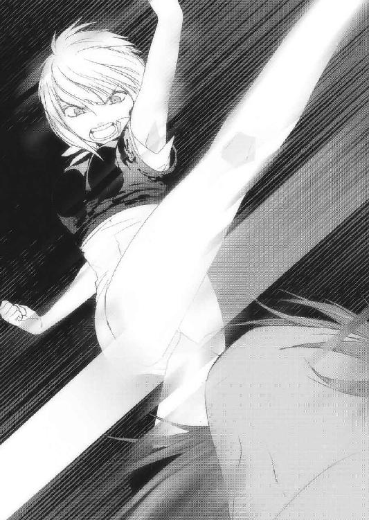
「が......は......」
仰向けに横たわるレニウスを、なおも踏みつけるリリル。
「セレンディアに帰る途中、夢魔に襲われて聖剣を折っちゃったけど、あんたがそんなんだから、全力で頑張って聖騎士になるしかなかったんだ！」
ぎりりっ、と、レニウスを踏みつける足に力を込める。
......そっか、リリルの想いを宿したあの夢魔は、その聖剣に触れて生まれたんだ！
どうりで強かったわけだ。だって、リリルの想いを具現化したものだったんだから。
「女は守らなきゃならないなんて思ってるあんたの心に、刻み込んでやる！」
げしげしと、胸を何度も何度も踏みつける。
レニウスは歯を食いしばって耐えていた。
「全部ラティア王から聞いたんだ。あんたの想い、悩み、弱さ......卑劣さ。バカにして！
バカにしてさあっ！」
リリルは涙を流しながら馬乗りになる。
そして胸ぐらを摑んで、また殴った。
「何であたしを連れてってくれなかったのよ。何で、全てを捨ててでも一緒にいてやるって言ってくれないのよ！」
レニウスは頰を腫らし、虚ろな目をしたまま「すまない」とだけ呟く。
リリルは殴るのをやめ、レニウスの胸ぐらを摑み上げて顔に引き寄せた。
『あたしは、あんたなんかに守られてやらない。
あたしがあんたを守るんだ。
あんたが一生、あたしについてこいッ！』
乱暴で、粗雑で、熱くて。アレンシアで一番、素敵な告白だった。
「リリル......オレ、やっぱりお前が好きだ」
「あたしだって！」
リリルは涙を流しながらレニウスに口づけし、レニウスを押し倒した。
すれ違い続けた二人の心が今、一つになった。
第十章・裏 紅の魔女
柔らかな風が吹く、緑豊かな丘だった。
辺りを見渡すと、新緑のヴェールに包まれた山々が生命の波動を豊かに発している。空は青く、綿のような雲が風に乗って泳いでいる。
丘の上に目を向けるとそこには雲に触れるのではないかという高さを誇る大樹が一本、佇んでいる。その根元には小さな岩があり、大きな杖を持った老婦が腰掛けていた。
彼女はすり切れて埃まみれの黒いローブを纏い、目を閉じていた。
長くて赤い髪には白さが混じっている。
彼女こそが紅の魔女、マールだ。
私に気づいたマールは、皺だらけの顔を重そうに上げる。
「どなた、ですか？」
長旅の影響か、その喉はつぶれ、ひしゃげた声だった。
この姿......とてもあのユーリエと同一人物とは思えない。
「誰でもいいじゃない」
私は冷たく言い放ち、大樹に背を預けた。
「そう、ですね」
弱々しい。
このまま命の火が消えてしまうのではないかと思えるほどだ。
「私は長い間、旅をしてきました」
マールは目を細めて語り出した。
「この地に魔法という、素晴らしい力を残すことができた。想い人への言葉も残せた」
「それは、あの石碑のこと？」
マールの体が、ぴくりと動いた。
「ええ。もう思い残すことはないわ。そろそろこの旅も終わりにしようと思うの」
マールの体がうっすらと透けていく。
辺りの草花は一気にしおれ、茶色い土が露出していく。山々は急速に茜色に染まっていき、氷を投げつけられたかのような冷たい風が吹いてきた。
まずい。
このままではマールは、五つ目の石碑を建てる前に死んでしまう！
「心残りはあるでしょう？」
私の言葉に、マールは反応した。
「あなたはまだ思い出していない。最愛の人の......名前を！」
その時、世界が揺れた。
風は暴れ出し、大樹の葉をざわざわと擦らせ、空に浮かぶ雲を瞬時に吹き飛ばした。
「あ、あ、あなたは、知っているの？」
「......ええ」
今にも消えそうだったマールの体から、生命が溢れ出す。
マールは岩から立ち上がろうとして、前のめりに転倒した。
それでも震える手は、私に向かって真っ直ぐ伸びていた。
「おし、えて。教えて下さい。彼の、彼の名前を。その名さえわかれば、扉はきっと開く。全てを......思い出せる！」
そうか、その名はマールにとって長年追い求めてきた、心の中に眠る宝箱の鍵だったというわけか。
「いいでしょう。その者の名は──」
あうあうと呻き、目を見開くマールに、私はその名を告げた。
カ ナ ク
ずどん、という大きな震動が世界を変えた。
巨大な竜巻が丘を包み、枯れた草が一気に芽吹いて花を開かせる。
老婆だったマールの姿がぼろぼろと崩れて風に溶け、若く美しい女性に変貌した。
それはもう紅の魔女ではなく、すみれ色の髪を持つユーリエだった。
「ああ......思い出した。カナク......私の大好きな、カナク！」
しっかりと大地を摑む細い足、天を仰ぐその姿は眩しいくらいの生命力に溢れ、滑らかな白い肌は全てに祝福された彫像のようだ。
「どなたか知りませんけど、本当にありがとう！ 私は、大事なものを取り戻せたわ！」
その声は先ほどの老婆とは違い、聞いているだけで元気が湧いてくるような力を持ったものだった。
「さあ、行きなさい。あなたにはまだ、やるべきことがあるでしょう？」
「そうね......そうね。カナクにマールじゃない私の、ユーリエの言葉を伝えなきゃ！」
美しい。単純にそう思った。
そして世界が、光に包まれていった。
マールの目覚めが近いのだ。
「ありがとう」
ユーリエは私に笑顔を向けてそう言った。私は思わず、ユーリエから目を背けた。
「カナク......カナク......ああ......カナク！」
万感の思いでそう連呼するユーリエの夢は、光の中へと溶けていった。
そして私は、気がつくと再び混沌の中にいた。
これでいい。これでマールは、五つ目の石碑を建てるだろう。
マール教典の中に覚えたあの違和感は、当然だった。
その原因は、私だったのだから。
アレンシアに戻って、数年が経過した。
十五歳になったカナクとユーリエは陳腐な再会を果たし、無事に旅を始めた。
だが、まだ問題がないわけではない。
一般的に瞬間移動魔法と超高度空中浮遊魔法は禁止されているらしい。つまり私が仕込んだ石碑のポータルを、二人は避ける可能性がある。
どうすればいいかを考えていた時、先にトロルの長に化けてリヴァルト王国を攻めたことを思い出した。
オーダスで私は、その国政を全て亡き者にした王の息子に任せ、体調が悪いことにして姿を隠していた。別に殺したことがバレても問題はなかったのだけど、ジェド内部を操る体制だけは維持しておきたかったのだ。
そして、その深慮が役立つ時が来た。
これまでディゴバ・アンダーグラウンドの存続はトロルの王、ダークエルフの王が認め、ログナカンの王だけがそれに執拗に反発し、何度も議題にあげていた。
ジェド最高評議会はこの三人の多数決で運営されている。つまり、私が再びトロルの長に化ければ、その時点でディゴバ・アンダーグラウンドの未来は変えられる。
私は急いでオーダスへ赴き、石碑巡りの二人がディゴバに入る直前に評議会を開かせた。ログナカンの王はしつこくアンダーグラウンド殲滅を提議し、ダークエルフの王がそれに抵抗する。
そしてトロルの王、すなわち私がダークエルフの意見を退け、ログナカンの王を支持したことで、アンダーグラウンド殲滅作戦が採択された。
その後、ジェド連邦国軍に追いつめられたカナクとユーリエは思惑通り、疑うことなく瞬間移動魔法に足を踏み入れたそうだ。
ここまでくれば、一安心だ。
ディゴバにはどこからともなく他国軍も攻めてきたので、私は適当なところで軍を引き上げさせるよう命じた。
これで、ユーリエは紅の魔女として過去を生きることになるだろう。
全ての準備が整いつつある。
これから私は、黒夢の魔王を誕生させるという大仕事をやってのけねばならない。
その前に一目だけ、イストリアルがどうなっているのかを確かめたかった。私は人の来ない場所に身を隠し、アレンシアからイストリアルへと飛んだ。
イストリアル・セントラルは白夢の世界だ。
当然、黒夢にどっぷり犯された私が立ち入れない世界でもある。
黒夢の世界、イストリアル・カオス。
そこから眺めるイストリアル・セントラルは、外壁から城、町、果ては小さな草花に至るまで、ほぼその形を取り戻し、私がいた頃よりも隆盛を極めているように見えた。
（私だけ......こんな目にあわせておいて......よくものうのうと！）
私の中で黒い力が蠢く。酷く気分が悪い。
こんなはずじゃなかった。
ただ黒晶石をアレンシアに置いてくるだけだったのに。
今の私はただ憎く、恨めしく、力さえあれば今すぐあの外壁を破ってセントラルの全てを壊してやりたいという衝動だけが強く宿っていた。
（ああ......あの中で私が好きだった人......あれ？ 誰だっけ？）
混乱という名の黒いものが、私の心をかき乱す。
（思い出せない......思い出したいな......）
イストリアル・カオスにしか身を置けない私は、もう魔物同然だった。
私は再びアレンシアに戻り、いよいよその時を迎える。
カナクに会うため、マールの村に足を踏み入れた。ユーリエを失ったカナクはここで神官となり、千年前に生きたユーリエを偲びながら暮らしている。
思い返せば、アレンシアの土を踏んでかれこれ百六十年になる。
それも、大半は薄暗い牢獄で過ごしてきた。
全ては黒晶石の力で、黒夢の魔王を誕生させるために。
そして魔王の肉体を乗っ取り、私が真の王となるために。
カナクはきっと、私の口車に乗る。
その体を捨て、精神だけ過去に飛ぶことを望むだろう。
そしてカナクは、この世界に残された己の肉体まで考えが至らないはずだ。
私はそのカナクの抜け殻、即ち器を渇望しているのだ。この砂の体は、形を維持するだけで黒夢を消耗する。そのせいで私は本来の力を全く発揮できない。
現世界アレンシア。
夢幻界イストリアル。
これらを支配するのは、私こそ相応しい。
さあ、もうすぐ白も黒もない世界を作り出せる。
カナクは必ず落ちる。
私が立っている、この場所に。
大事な者の顔など微塵も思い出せない、この黒い世界に！
私は舌なめずりをし、坂道をのぼっていった。
最終章・表 道
あたしたちはリリル率いるセレンディアの一団に守られて、彼らが用意していた馬車に乗り込み、東のガザラ王国へと抜けた。
アルマが摑んだ情報によると、ジェド連邦西方で新種の夢魔が確認されたという。
それは巨大な獣の姿にいくつもの仮面を持ち、他の夢魔とは比べものにならないほどの強さを持つそうだ。
幸いアレンシア東部ではまだそれほど夢魔は現れていないということだったので、あたしたちはジェドを抜ける道は使わないことにし、タロン、フェルゴートを経由して、コルセアに帰ってきた。
「ふー、やっとここまで来たな」
隣で馬を操るレニウスが、そう呟いた。
「はい。長かったですね」
あたしの頭の上で、草人たちが手を取り合ってぴーぴーと歓声をあげる。
この子たちにとっても、コルセアはやはり故郷なのだ。
「ところでレニウスはこれからどうするつもりですか？」
柔らかな風に吹かれ、カリーンの尖塔を見上げながらレニウスは口を開く。
「それなんだが、ずっとリリルと話をしてきたんだ」
「けっ、けけっ、結婚ですかっ!?」
ぼっ、と、レニウスの顔が赤くなる。
「まだ何も言ってないだろ......」
「だって、ここまでずーっと二人はらぶらぶでした」
レニウスは目を丸くして顔を赤らめる。
「あー、まったくだ。こっちまで恥ずかしくなるほどな」
上からアルマの声が聞こえた。アルマはこの馬車の上が気に入ったらしく、道中も晴れた日は上にあがり、のんびりと昼寝をしていた。
「あ、いや、それは......すまない」
「いいんです。ただ羨ましいだけです」
げほげほと咳をしたレニウスは、襟を正して背筋を伸ばした。
「リリルはセレンディアに帰して、オレはしばらくネウの旅に付き合おうと思う」
「「え、ええっ!?」」
その言葉にアルマは思わず顔を出し、あたしは口に手をあててしまった。
それくらい、意外だった。
てっきりレニウスは、リリルと一緒にセレンディアに帰るのかと思っていたから。
「やっぱりオレはしばらくセレンディアにいない方がいいと思うんだ。ラティア王が、きちんと王政を安定させるまでな」
「それで、何でリリルはセレンディアに？」
「あいつはセレンディアの聖騎士だ。こんな時だからこそオレじゃなくて国や王を守って欲しいんだ。オレたちはもう、どこにいても一緒だからな」
レニウスの視線は、前を行くリリルに向けられていた。
「そうですか」
あたしは思わず微笑んでしまった。
この二人はもう大丈夫だ。どこにいても、どんなに離れても、固い絆で結ばれている。
カナクさんと、ユーリエさんのように。
「それにリリルが言うには、オレが今守ってやらなきゃいけないのはセレンディアでもリリルでもなく、ネウとカナクなんだってよ。マールの村で交わした親友の誓いは、そんなに軽くないだろって」
「そう言って頂けるのは、とてもありがたいです」
あたしはちらりと後ろを見た。馬車の中には、仲良く並んで眠るライカとヤヒロちゃんがいる。聖剣士になったレニウスに、吟遊詩人のヤヒロちゃん。
こんなに、心強い仲間ができるとは思わなかった。
でも......何だろう、この寂しさは。
「そりゃーまー、ご苦労さんなこって」
アルマが笑いながら言う。
「お前はどうするんだ、アルマ」
レニウスが上に向かって声を上げると、アルマがひょこっと顔を覗かせた。
「俺ぁ、今回の報酬でのんびりと休暇だ。さあバカンスはどこがいいかなあ。フェルゴートの南岸か、ミスティカの温泉か......ジェノアで森林浴ってのも捨てがたい」
「むー、いいなー」
あたしがついそう漏らすと、アルマはにやりとした。
「お前はバカ神官のために、のたうちまわりながら頑張れ。わはははははは！」
「ぬっひゃーっ、はらたつーっ！」
へらへら笑うアルマの顔が、そこはかとなく腹立たしいっ！
「俺はこの旅の間も仕事ばっかしてたんだ。少し休暇を取っても、ばちはあたらねぇ」
「それは主にあんたの手下がじゃないの？」
「う、なぜそれを」
図星を突かれ、動揺するアルマ。
「あんたはそんなタイプじゃないもん」
「くっ、侮られたもんだぜ」
「最初っからあまりスゴいとか思ってないし」
「思えよ！ リュシオルファクルの盗賊なんだぞ!?」
考えてみれば、あたしは今まで聖神殿関係しか携わってこなかったから、他のギルドとかにはとことん疎い。
「リョシオリュふぁクルって、そんなにすごいの？」
「りょ......まあいいよく聞け。コルセア王国はもともとフェーン地方のちっぽけな勢力にすぎなかった。そこへふらりと現れた烈翔紅帝オリヴィア女王陛下が、俺らリュシオルファクルに協力を求めてきたんだ。俺たちは陛下がフェーン地方を統一すれば、さらに大きなギルドにできると踏んで、その賭けにのった。陛下はその後見事にフェーン地方を統一されたが、裏では俺らリュシオルファクルが大きく役立って──」
「ちょうちょが飛んでるねー、カナちゃん」
「ぴー」
アルマがずっこけた。
「聞けっつってげほがほぐほぉっ！」
更に苦しそうに咽せる。
「だって長いんだもん」
欠伸をしながらそう言い、あたしの肩ではユーちゃんが干し果物をかじり、カナちゃんは怯えた目つきでその様子を眺めていた。
「それでも聞け！ 俺たちの武勇伝はまだ......つーかそこの肩のやつ、食うなっ！ って、あれ？ その干し果物......」
アルマが腰にぶら下げていたポーチに目をやると、しっかりと開け放たれていた。
「あっ、あ────っ！ 俺の非常食っ！」
「ふふ、あはははははははは！」
あたしは思わず声を上げて笑った。盗賊から物を盗むとは、さすがユーちゃん。
「おお、俺のプライドがズタズタだ......」
ちょっと涙目になったアルマに、笑顔を向けた。
「気にしない気にしない。あんたはそんなもんってことよ」
「慰めじゃねえよそれ！」
その時、ユーちゃんが珍しくアルマに向かって声を上げる。
「ぴー」
「ぴーじゃねえよこのウルトラちびすけッ！」
「ぴょー？」
「なめんなあっ！」
草人にまで遊ばれるなんて......不憫。
「じゃあ愉快なお前とも、もうすぐお別れなんだな」
レニウスが笑いながら、アルマに向かって言った。
「縁があればまた会うこともあるだろうよ。っていうか愉快って何だよ！」
アルマのその台詞を聞くのは、これで二度目だ。
もっとも、その言葉を聞いてからまた会っちゃったんだから、何か奇縁のようなものがあるのだろうか？
おおう、背筋がぞくぞくする。
「まあいいさ。とりあえず仕事を済ませてしまおう」
レニウスが前方を指さすと、コルセア王都カリーンはもう目の前だった。
カリーンの王城に着くと、衛兵はすぐに謁見の間に行ってくれと言った。
レニウスとリリルが肩を並べ、次にあたしとアルマ、最後にライカとヤヒロちゃんが馬車を降りた。
謁見の間ではコルセア王国軍の近衛兵が並んで出迎えてくれた。そしてその奥に、玉座に腰掛けている烈翔紅帝オリヴィア女王陛下が待っていた。
一番前にいたレニウスとリリルが女王さまに一礼すると、あたしの手を引っ張って前に押し出した。
「えあ、わ、なん......？」
「びしっと報告しろよ。リーダー！」
「そうよ。それはリーダーの役目っ！」
うう、しかたない。あたしは女王さまに跪き、なるべく大きな声で言った。
「ご、ご尊顔を拝し、恐悦でございます。マールの村のネウ神官、陛下のご命令を完遂し、ただいま帰還いたしましつぁ！」
......くあー、嚙んだ。
真っ赤になるあたしに女王さまは口許を緩め、立ち上がった。
「よくやってくれた。報告はセレンディア聖騎士団の斥候から受けている」
「は、ははっ！」
かつん、かつんと音を立て、女王さまがこちらに歩いてくる。
「ライカは？」
「は、はい。こちらに」
あたしが振り返ると、ヤヒロちゃんがライカを連れて来てくれた。
「ライカ、初めまして。私がコルセアの女王オリヴィアよ。ディクトは残念なことだったけれど、あなたのがんばり次第では父も救える。これから暫くは、ここがあなたの家であり、私があなたの母親代わりとなるわ」
女王さまはライカの頰を愛おしそうに撫でた。
「はい、ありがとうございます」
ライカは少し照れて、俯いた。
女王さまは優しくライカの頭を撫でると、あたしたちに向かって言った。
「では、この子は私に任せてちょうだい。みんな、ご苦労さま」
女王さまはライカの手を引き、背を向けた。
「あっ、あのっ！」
あたしは思わず、その背中に声をかけた。
「ん？」
「そ、その、ライカを、どうするんですか？」
女王さまは振り返らず、大きく叫んだ。
「そうだな......皆のものもよく聞け！」
女王さまの声に、皆の背筋が伸びる。
「私はこれよりこの銀獣人ライカを、影砲士にする！」
あたりは騒然となった。
影砲士......それはガザラに伝わる、英雄の名前だった。
「かつてガザラ王国に影砲士という、黒夢の塊をガザリウム弾で百五十年に亘り、撃ち続けた一族がいた。その者は類まれなる力を持つ稀少種族、銀獣人だった」
女王さまはライカを玉座の横に連れて行った。
「しかし、女王さま」
アルマだった。
「影砲士の噂なら俺、いや、私も聞いています。確か影砲士が使っていたのはマナ純度の高い、ガザリウムの弾ではありませんでしたか？ でも今は、ガザラのロイド鉱山ですらなかなか産出されなくなったと聞いていますが......」
女王さまはアルマの問いかけで振り返り、懐から小さな魔法陣が描かれた革袋を取り、その中から胡桃の実のような、黒い珠を出した。
「これがそのガザリウム弾よ。たった一つしかないけどね」
そして女王さまは、さらに声を張り上げた。
「この弾を使えば黒夢の魔王を打ち砕くことが可能である。そしてこの弾を撃つのは銀獣人、即ちライカだ。影砲士と屈強な諸君さえいれば、魔王など恐るるに足らん。
皆、来る決戦に向けて鍛錬を怠らぬように！」
周りの近衛兵が剣を鳴らして歓声をあげ、コルセアを讃える声を上げた。
女王さまは厳然として片手を挙げ、彼らの声援に応える。
その時の、強く嚙みしめた女王さまの唇を、あたしはしっかりと目に焼き付けた。
「はー、終わった終わった！」
アルマが強ばった肩をぶんぶん振り回しながら言った。
「あとは報酬を貰えば、任務完了だぜ！」
あたしたちは女王さまから、今回のお仕事の報酬をグウェイル大神官さまから受け取れと言われ、謁見の間から退席した。
女王さま......とてもお辛そうだった。でも、強い心でそれをねじ伏せ、不安にかられているであろう兵士たちに勇気を与えたんだ。
強い。本当に強いお人だ。
でもあたしは、その女王さまがなさろうとしていることよりも早く、カナクさんを救う手段を見つけ出さなければならない。
でないと、あの銀獣人ライカの手で......カナクさんは撃たれてしまう。
あたしはカナクさんと女王さま、二人とも救うんだ。
それが、あたしの選んだ『道』だから！
拳を握りしめ、密かに決意を新たにした。
それからあたしたちは、カリーン・マール聖神殿にやってきた。
中庭を歩いて礼拝堂の中に入ると、待ち構えていたようにグウェイル大神官さまがあたしたちを出迎えてくれた。
「大神官さま、只今戻りました」
「おおネウ、既に話は聞いているぞ。まずは、よくぞ無事に帰ってきた」
大神官さまはあたしを優しく抱擁してくださった。
「いろいろことづかってはいるが、まずは今回の手柄に応え、各々に恩賞がある」
「まっっってましたーっ！」
アルマが飛び上がって喜んだ。
「相変わらず騒がしい男だな、アルマ」
「お前こそ、相変わらず堅苦しい眉毛だな、グウェイル！」
二人は悪態をつきながらも、固く握手をした。
「え、え？ どういうことどういうこと？」
「あーネウ、そんなにあからさまに挙動不審になるな。実はこいつとは、悪友なんだ」
あ、あ、アルマと、大神官さまが、悪友!?
「悪友はないだろうアルマ」
「あー、すまん。根が正直なもんでな」
そう言い合う二人は、確かに仲が良さそうだった。
「さてと、んじゃさっそくその恩賞とやらを頂きますか。早く出せグウェイル！」
「慌てるな。ええとだな......」
大神官さまは懐から封書を取り出し、それを読み上げた。
「まずはレニウス殿とリリル殿に。お二人は要人でありながら、ネウ神官を支えて頂いたことを心より感謝する。コルセアはこれに応え〝紅の徽章〟を与えるものとする」
「おおおお、紅の徽章だと!?」
「すごーいっ！」
あたしとアルマは手を叩いて声を上げた。
「えーと、紅の徽章？」
「コルセアでも有数の名誉ある賞です。その徽章をつけているだけでコルセア国内での通行税は全て免除になりますし、女王さまや大神官さまへの謁見の手続きも大幅に簡略して行うことができます」
「お、おお、そんな凄いものなのか......」
大神官さまは背後にある教壇から赤い徽章を手に取り、レニウスとリリルの胸につけた。
「あのー、レニウスはわかるとして、何であたしまで？」
リリルが頰をかきながら言った。
「リリル殿は道中レニウス殿と婚姻し、ネウらを大いに助けてくれたと聞く。よって女王さまはリリル殿にも、レニウス殿と同等の恩賞を与えよとの仰せだった」
「こっ......それは、ありがとうございます」
リリルは顔を真っ赤にして照れた。ちなみに道中でリリルが加わったと女王さまに報告したのはアルマであり、レニウスと婚姻したと伝えさせたのはあたしだったりする。
「次にヤヒロ！」
「は、はひっ!?」
いきなり名前を呼ばれて、不意打ちを受けたように驚いていた。
「そなたの話は聞いている。女王陛下はルイ・ソーンの失踪に酷く心を痛め、おぬしが無事だったことに大層お喜びであった。そなたはこれからどうするのだ？」
あたしはヤヒロちゃんの目を見て頷き、背中を押して前に出させた。
ヤヒロちゃんは片膝をついて、大神官さまに告げた。
「私はネウ聖神官と旅をします。その先に、必ずルイ・ソーンがいることを信じて」
「うむ、よくぞ申した」
グウェイル大神官さまは、教壇から銀色に輝く弓を取り上げた。
「ソーンは女王陛下の恩人であったという。故にコルセアはヤヒロに対し、支援を惜しまない。その証しとして、この銀のストリングス・ボウをそなたに授けることとする」
目を丸くするヤヒロちゃんに、大神官さまはその弓をヤヒロちゃんに渡した。
「あ、あ、ありがとうございます！」
「ソーンを......父を、必ず見つけだすのだぞ、ヤヒロよ」
「あ......はい！」
両手で弓を拝領し、ヤヒロちゃんは深々と頭を下げた。
「さて、次にネウ！」
「はい」
大神官さまは再び書面に目を落とす。
「この度は本当にご苦労であった。以後、ネウ聖神官の行動はコルセア王国が全面的に協力するものとし、旅の路銀等、必要なものはこちらで支援する。それから今回の褒美としてこのワンドを渡すようにとしたためられておる」
大神官さまが取り出したのは立派な宝玉が載った、樫の木のワンドだった。
あたしはそれに、見覚えがあった。
「かつてマールの村を開発した時に発見されたものを、兵士が持ち帰ったものだ。私も、これは記憶にある」
「ユーリエさんの......ワンドですね」
「そうだ」
あたしはそれを、膝をついて受け取った。
ずしりと重いワンドから、かなりのマナを感じる。
これが今、あたしの手にあるのが、とても運命的なように思えた。
「そしてアルマぁっ！」
「おうっ！」
「お前に渡す物は何もないっ！」
アルマが派手にずっこけた。
「おおっ、おいおいグウェイル、そりゃねーだろっ！」
「報酬はリュシオルファクルにきっちり精算している。そこで受け取るがいいだろう」
「な、なるほど、そーいうことか、じゃあ俺ギルドに戻るぜ。んじゃな！」
アルマは慌てて礼拝堂を出て行こうとした。
「こらこら、そう事を急ぐなアルマ。ここに、リュシオルファクルのギルドマスターから手紙を預かっている」
「何だ、それを早く言えよ」
出て行こうとしたアルマは慌てて引き返してきた。
もー、本当に騒がしい男なんだから。
「えーとだな、アルマよ、お前はこのままネウ神官の旅に同行しろと記してある」
「は？」
アルマが硬直する。
「こんなに儲かる仕事はそうそうない。是非ともギルドのために──」
「ちょ、ちょっと貸せっ！」
アルマは大神官さまから手紙をひったくると、しゃがんで目を剝いて目を通し始めた。
「......是非ともギルドのために働いて貰いたい。これはギルドとして正式な命令であることをここに記す......はあああああああああああああん？」
アルマが、再びずっこけた。
「「「「ふっ、あはははははははははははは！」」」」
惚けるアルマを除いた全員が、涙を流して笑った。
「お、お前ら、冗談じゃねぇぞまったく！」
あたしはアルマの前に立って、見下ろした。
「ま、しかたない。あんたがお願いするなら連れて行ってもいいわよ」
「ばっ、バカにすんな！ 誰が──」
「ギルド命令なんでしょ？」
「おうっ、う、うう......」
ぱったりと仰向けで倒れたアルマの瞳を覗き込む。
「ねえ、この旅でアルマはあたしにもっと笑えって言ったよね」
「あー......覚えてねぇな」
アルマに手を差し伸べ、満面の笑みを浮かべた。
正直、この騒がしいアルマと一緒にいるのが楽しいんだ。
また一緒に旅が出来ると思うと、それだけで何だか笑顔になってしまう。
「これで、いいかな？」
アルマは顔を赤くしてぽかんと口を開け、再び固まっていた。
「これからも、よろしくね」
「............ちっ」
アルマはあたしの手をにぎ......ろうとして、スカートを捲りあげた！
「あっ！ あ、あ、あんた、何すんのよーっ！」
アルマはあっという間に礼拝堂の入り口まで逃げて、叫んだ。
「迷惑料の先払いだ、このドジ神官！」
あたしはカナちゃんとユーちゃんと一緒に、全力でアルマを追いかけた。
その後、リリルはレニウスと口づけを交わし、一団を連れてカリーンを去った。
そしてあたしはアルマ、レニウス、ヤヒロちゃん、そしてカナちゃんユーちゃんと共にカリーンを後にした。
また、このパーティで旅ができる。
それはとっても嬉しいことだった。
レニウスの手には、真っ赤な刀身を持つ聖剣ハート・オブ・フレイムが。
ヤヒロちゃんの手には、銀のストリングス・ボウが。
そしてあたしの手には、天才魔導師ユーリエさんが使ったワンドが。
それぞれの想いを込め、あたしたちは旅に出る。
自分の信じた『道』を歩くために。
最終章・裏 魔王と夢魔
アレンシアの銀獣人を全て眠らせた僕は居城に帰り、玉座に腰を下ろしてひたすら集まってくる黒夢に耐えていた。
体中に黒い模様が浮き上がっては、胸に埋められた黒晶石に吸い込まれていく。
その度に全身を激痛が駆け巡るので、僕は人の姿に戻れなくなった。
獣の姿でいなければ、この痛みに耐えることはできないからだ。
「魔王さま」
リーゼが、僕の前にいた。いつもは一人なのに、今日はその後ろに誰かが立っていた。
「どうした、リーゼ？」
「魔王さまに協力したいという者が、ご挨拶に参られました」
「協力？」
膝をつくリーゼの横から、派手な服を着た長身の男が歩み寄ってきた。
僕はその姿を見て、思わず目を疑った。
「久しぶりですね」
その容姿、その声......明らかに、僕の知る人物と同一だった。
「あなたが何故、ここにいるんですか......ルイ・ソーン」
「まあ、いいじゃありませんか」
ソーンはにやりと笑い、一礼して謁見の間から出ていった。
「これは......リーゼ、どういうことだ？」
ふっと笑い、リーゼは立ち上がってソーンが消えた出口に目を向けた。
「見ての通りですわ。それより魔王さま、私は暫くここを留守にしますので、ユーリエが所持していたものと、上級夢魔をお貸しくださいませんか？」
大事に持っているユーリエのものといえば、あの石碑巡りの腕輪だ。
僕はそれを懐から取り出したが、リーゼに渡すのは躊躇われた。
「ご安心下さい。魔王さまにとっても、良いことですから」
リーゼが何をするのか、見てみよう。
僕はその腕輪をリーゼに渡し、上級の夢魔を一体生み出した。
「さあ夢魔よ、この腕輪を手にしなさい」
リーゼが左胸に仮面をつけた夢魔に腕輪を渡すと、夢魔の姿がぐにゃりと変化した。
そして僕は思わず、玉座から立ち上がって呟いた。
「ま、まさか......ユーリエ？」
その顔、表情、髪、肌。全てが、僕の記憶に残るユーリエのものだった！
「し、しかし......」
リーゼは過去にユーリエの姿を真似て僕を騙したことがある。その時のことがどうしても脳裏に過ぎり、リーゼとユーリエの間を視線が泳いでしまう。
「ご心配には及びません。彼女は上級の夢魔によって引き出された、想いの塊なのです。ある意味では、本物のユーリエそのものですわ」
リーゼの瞳が、窓の外で轟く雷鳴を映して輝く。そして何も着用していなかったユーリエに己のローブを着せて、僕の前に連れてきた。
「夢魔に、こんな力があったのか」
上級夢魔は、まだ僕の力では数体しか出せない。作りだしたものは既にフェルゴート、ガザラ、ジェド、それとコルセアに二体ほど送り込んでいる。
「魔王さま。今後、あなたのお世話はこの者にさせて下さい。この者はあなたの意のままに動きます。後は......ふふ......お好きなようになされませ」
魔物のような笑みを残し、リーゼはどこかへ消えた。
僕はユーリエ......いや、夢魔と、暫く謁見の間から動かなかった。
「カナク」
ぽつり、と夢魔が言う。その瞬間、僕は全身の血液が逆流したかのような激情に襲われ、ユーリエを床に押し倒した。
「あ......」
声までユーリエと同じだった。
苛々する。酷く落ち着かない。気持ちが悪い。
頭の中で、ずっと声が響いている。
「ううう......うるさいいいいいいっ！」
僕は胸を搔きむしり、強引にその声をマナでねじ伏せる。
（もしやリーゼも......こんな風に落ちていったのか？）
僕が頭を抱えて立ち上がって部屋を出ると、夢魔も後からついてきた。
僕は、これからどうなるんだ？
本当に、本物のユーリエに会えるのか？
その問いに答える者はなく、胸の黒晶石が静かに輝きを湛えているだけだった。
あとがき
ネウが好きです。
あっ、えっと、違った。
お久しぶりです、上総朋大です。
カナクのキセキ三巻、お楽しみ頂けましたでしょうか？
第22回ファンタジア大賞〝金賞〟を受賞し、デビューさせて頂いた一巻から、もう一年近く経とうとしています。
そろそろあとがきで素を出していこうかなーと思いますが......。
え、まだ早いですか？
わかりました、いつもの調子でいきます。
ではまず、例によって本作品について少しお話したいと思います。
この三巻は、とにかく時間がかかりました。初稿は二巻発売前に上がっていたのですが、カナクのキセキという作品の水準に達していないということで、根幹部分を残してボツとし、その後さらに二度の書き直しを経て、ようやく形になりました。
正直なところ、ホッとしています（笑）。
さて、この物語は一巻発売時点で数巻構成であることは既にお伝えしたとおりです。
これまで発表させて頂いたカナクのその後、夕闇の影砲士、短編二本、そして今回。
では今、どのあたりまで進んだのか？
それを序破急で表しますと、この三巻までで〝序〟になります。
そして次巻から〝破〟に突入し、物語はカナクを中心に大きく動いていきます。
ネウたちはこの後、どんな旅をするのか？
切り札を手にしたオリヴィア女王は？
最後に現れたあの人に秘められた謎とは？
これらをしっかりと、最後まで描ききりたいと思います。
と、ここまで書けばお気づきの方もおられるかと思いますが、実はこの物語、既にラストも決めています。どんなラストにするのかはさすがに言えませんけど、僕自身、バッドエンドな話は嫌い、とだけお伝えしておきましょう。
今回の三巻発売にあたり、担当編集の高野さんに心から御礼申し上げます。
もっともっと面白くしたいという思いに中々応えることが出来ない僕を叱咤激励し、何度も何度も打ち合わせを重ねて頂き、さらには休日まで潰して下さいました。
本当にご迷惑をおかけしたと思います。
感謝と同時に、陳謝致します。
そして今回も素敵なイラストで物語を彩って下さった、さらちよみ先生。
ライトノベルでは内容と同じくらい、イラストが大事です。いつも期待以上のイラストを描いて頂けるので、見本を見るのが一つの楽しみです。
本当に、ありがとうございます。
そして、ファンレターを送って下さった皆様。
拙著をネット上で評価して下さった方々。
いつも温かく迎えて下さる、各書店関係者の方々。
お友達等にオススメしてくれたツイッターのフォロワー様。
作家としての心得を教えて下さった、諸先輩方。
何より、今この文章に目を通しておられるあなたに。
カナクの物語を楽しみにして下さっている方々に。
心から、御礼申し上げます。
最後はいつものように、この言葉を全ての皆様に贈らせて下さい。
『マールのご加護が、ありますように』
それでは、またお会いしましょう。
二〇一一年八月十九日 上総 朋大（ゲリラ雷雨中より）
カナクのキセキ３
上総朋大
平成23年10月25日 発行
発行者 山下直久
発行所 株式会社富士見書房
〒102-8144 東京都千代田区富士見1-12-14
http://www.fujimishobo.co.jp/
(C)2011 Tomohiro Kazusa, Yomi Sarachi/Fujimishobo